cplex._internal package¶
- undocumented:
Environment, _aux_functions, _list_array_utils, _ostream
- class Environment[source]¶
Bases:
object
non-public
- RESULTS_CHNL_IDX = 0¶
- WARNING_CHNL_IDX = 1¶
- ERROR_CHNL_IDX = 2¶
- LOG_CHNL_IDX = 3¶
- register_callback(callback_class)[source]¶
Registers a callback for use when solving.
callback_class must be a proper subclass of one of the callback classes defined in the module callbacks. It must override the __call__ method with a method that has signature __call__(self) -> None. If callback_class is a subclass of more than one callback class, it will only be called when its first superclass is called. register_callback returns the instance of callback_class registered for use. Any previously registered callback of the same class will no longer be registered.
- unregister_callback(callback_class)[source]¶
Unregisters a callback.
callback_class must be one of the callback classes defined in the module callback or a subclass of one of them. This method unregisters any previously registered callback of the same class. If callback_class is a subclass of more than one callback class, this method unregisters only the callback of the same type as its first superclass. unregister_callback returns the instance of callback_class just unregistered.
- set_results_stream(results_file, fn=None)[source]¶
Specifies where results will be printed.
The first argument must be either a file-like object (that is, an object with a write method and a flush method) or the name of a file to be written to (the later is deprecated since V12.9.0). Use None as the first argument to suppress output.
The second optional argument is a function that takes a string as input and returns a string. If specified, strings sent to this stream will be processed by this function before being written.
Returns the stream to which results will be written. To write to this stream, use the write() method of this object.
- set_warning_stream(warning_file, fn=None)[source]¶
Specifies where warnings will be printed.
The first argument must be either a file-like object (that is, an object with a write method and a flush method) or the name of a file to be written to (the later is deprecated since V12.9.0). Use None as the first argument to suppress output.
The second optional argument is a function that takes a string as input and returns a string. If specified, strings sent to this stream will be processed by this function before being written.
Returns the stream to which warnings will be written. To write to this stream, use the write() method of this object.
- set_error_stream(error_file, fn=None)[source]¶
Specifies where errors will be printed.
The first argument must be either a file-like object (that is, an object with a write method and a flush method) or the name of a file to be written to (the later is deprecated since V12.9.0). Use None as the first argument to suppress output.
The second optional argument is a function that takes a string as input and returns a string. If specified, strings sent to this stream will be processed by this function before being written.
Returns the stream to which errors will be written. To write to this stream, use the write() method of this object.
- set_log_stream(log_file, fn=None)[source]¶
Specifies where the log will be printed.
The first argument must be either a file-like object (that is, an object with a write method and a flush method) or the name of a file to be written to (the later is deprecated since V12.9.0). Use None as the first argument to suppress output.
The second optional argument is a function that takes a string as input and returns a string. If specified, strings sent to this stream will be processed by this function before being written.
Returns the stream to which the log will be written. To write to this stream, use this object’s write() method.
- class ProblemType[source]¶
Bases:
ConstantClass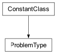Types of problems the Cplex object can encapsulate.
For explanations of the problem types, see those topics in the CPLEX User’s Manual in the topic titled Continuous Optimization for LP, QP, and QCP or the topic titled Discrete Optimization for MILP, FIXEDMILP, NODELP, NODEQP, MIQCP, NODEQCP.
- LP = 0¶
See CPXPROB_LP in the C API.
- MILP = 1¶
See CPXPROB_MILP in the C API.
- fixed_MILP = 3¶
See CPXPROB_FIXEDMILP in the C API.
- node_LP = 4¶
See CPXPROB_NODELP in the C API.
- QP = 5¶
See CPXPROB_QP in the C API.
- MIQP = 7¶
See CPXPROB_MIQP in the C API.
- fixed_MIQP = 8¶
See CPXPROB_MIQP in the C API.
- node_QP = 9¶
See CPXPROB_NODEQP in the C API.
- QCP = 10¶
See CPXPROB_QCP in the C API.
- MIQCP = 11¶
See CPXPROB_MIQCP in the C API.
- node_QCP = 12¶
See CPXPROB_QCP in the C API.
Submodules¶
cplex._internal._subinterfaces module¶
Sub-interfaces of the CPLEX API.
- class Histogram[source]¶
Bases:
object
A class to retrieve histogram data of the columns or rows of the linear constraint matrix.
See
VariablesInterface.get_histogram()andLinearConstraintInterface.get_histogram().
- class AdvancedVariablesInterface[source]¶
Bases:
BaseInterface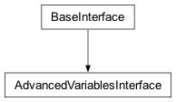Methods for advanced operations on variables.
- __init__(parent)[source]¶
Creates a new AdvancedVariablesInterface.
The advanced variables interface is exposed by the top-level
Cplexclass as Cplex.variables.advanced. This constructor is not meant to be used externally.
- protect(*args)[source]¶
Prevents variables from being aggregated during presolve.
protect may be called with either a single variable identifier or a sequence of variable identifiers. A variable identifier is either an index or a name of a variable.
- Note
Subsequent calls to protect will replace previously protected variables with the new set of protected variables.
- Note
If presolve can fix a variable to a value, it will be removed from the problem even if it has been protected.
>>> import cplex >>> c = cplex.Cplex() >>> indices = c.variables.add(names = ["a", "b", "c", "d"]) >>> c.variables.advanced.protect("a") >>> c.variables.advanced.protect(["b", "d"])
- get_protected()[source]¶
Returns the currently protected variables.
Example usage:
>>> import cplex >>> c = cplex.Cplex() >>> indices = c.variables.add(names = ["a", "b", "c", "d"]) >>> c.variables.advanced.protect("a") >>> c.variables.advanced.get_protected() [0] >>> c.variables.advanced.protect(["b", "d"]) >>> c.variables.advanced.get_protected() [1, 3]
- tighten_lower_bounds(*args)[source]¶
Tightens the lower bounds on the specified variables.
There are two forms by which variables.advanced.tighten_lower_bounds may be called.
- variables.advanced.tighten_lower_bounds(i, lb)
i must be a variable name or index and lb must be a real number. Sets the lower bound of the variable whose index or name is i to lb.
- variables.advanced.tighten_lower_bounds(seq_of_pairs)
seq_of_pairs must be a list or tuple of (i, lb) pairs, each of which consists of a variable name or index and a real number. Sets the lower bound of the specified variables to the corresponding values. Equivalent to [variables.advanced.tighten_lower_bounds(pair[0], pair[1]) for pair in seq_of_pairs].
>>> import cplex >>> c = cplex.Cplex() >>> indices = c.variables.add(names = ["x0", "x1", "x2"]) >>> c.variables.advanced.tighten_lower_bounds(0, 1.0) >>> c.variables.get_lower_bounds() [1.0, 0.0, 0.0] >>> c.variables.advanced.tighten_lower_bounds([(2, 3.0), ("x1", -1.0)]) >>> c.variables.get_lower_bounds() [1.0, -1.0, 3.0]
- tighten_upper_bounds(*args)[source]¶
Tightens the upper bounds on the specified variables.
There are two forms by which variables.advanced.tighten_upper_bounds may be called.
- variables.advanced.tighten_upper_bounds(i, lb)
i must be a variable name or index and lb must be a real number. Sets the upper bound of the variable whose index or name is i to lb.
- variables.advanced.tighten_upper_bounds(seq_of_pairs)
seq_of_pairs must be a list or tuple of (i, lb) pairs, each of which consists of a variable name or index and a real number. Sets the upper bound of the specified variables to the corresponding values. Equivalent to [variables.advanced.tighten_upper_bounds(pair[0], pair[1]) for pair in seq_of_pairs].
>>> import cplex >>> c = cplex.Cplex() >>> indices = c.variables.add(names = ["x0", "x1", "x2"]) >>> c.variables.advanced.tighten_upper_bounds(0, 1.0) >>> c.variables.advanced.tighten_upper_bounds([(2, 3.0), ("x1", 10.0)]) >>> c.variables.get_upper_bounds() [1.0, 10.0, 3.0]
- class VarTypes[source]¶
Bases:
ConstantClass
Constants defining variable types
For a definition of each type, see those topics in the CPLEX User’s Manual.
- continuous = 'C'¶
- binary = 'B'¶
- integer = 'I'¶
- semi_integer = 'N'¶
- semi_continuous = 'S'¶
- class VariablesInterface[source]¶
Bases:
BaseInterface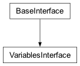Methods for adding, querying, and modifying variables.
Example usage:
>>> import cplex >>> c = cplex.Cplex() >>> indices = c.variables.add(names = ["x0", "x1", "x2"]) >>> # default values for lower_bounds are 0.0 >>> c.variables.get_lower_bounds() [0.0, 0.0, 0.0] >>> # values can be set either one at a time or many at a time >>> c.variables.set_lower_bounds(0, 1.0) >>> c.variables.set_lower_bounds([("x1", -1.0), (2, 3.0)]) >>> # values can be queried as a range >>> c.variables.get_lower_bounds(0, "x1") [1.0, -1.0] >>> # values can be queried as a sequence in arbitrary order >>> c.variables.get_lower_bounds(["x1", "x2", 0]) [-1.0, 3.0, 1.0] >>> # can query the number of variables >>> c.variables.get_num() 3 >>> c.variables.set_types(0, c.variables.type.binary) >>> c.variables.get_num_binary() 1
- type = <cplex._internal._subinterfaces.VarTypes object>¶
See
VarTypes()
- __init__(cplex)[source]¶
Creates a new VariablesInterface.
The variables interface is exposed by the top-level
Cplexclass asCplex.variables. This constructor is not meant to be used externally.
- advanced¶
- get_num()[source]¶
Returns the number of variables in the problem.
Example usage:
>>> import cplex >>> c = cplex.Cplex() >>> t = c.variables.type >>> indices = c.variables.add(types = [t.continuous, t.binary, t.integer]) >>> c.variables.get_num() 3
- get_num_integer()[source]¶
Returns the number of integer variables in the problem.
Example usage:
>>> import cplex >>> c = cplex.Cplex() >>> t = c.variables.type >>> indices = c.variables.add(types = [t.continuous, t.binary, t.integer]) >>> c.variables.get_num_integer() 1
- get_num_binary()[source]¶
Returns the number of binary variables in the problem.
Example usage:
>>> import cplex >>> c = cplex.Cplex() >>> t = c.variables.type >>> indices = c.variables.add(types = [t.semi_continuous, t.binary, t.integer]) >>> c.variables.get_num_binary() 1
- get_num_semicontinuous()[source]¶
Returns the number of semi-continuous variables in the problem.
Example usage:
>>> import cplex >>> c = cplex.Cplex() >>> t = c.variables.type >>> indices = c.variables.add(types = [t.semi_continuous, t.semi_integer, t.semi_integer]) >>> c.variables.get_num_semicontinuous() 1
- get_num_semiinteger()[source]¶
Returns the number of semi-integer variables in the problem.
Example usage:
>>> import cplex >>> c = cplex.Cplex() >>> t = c.variables.type >>> indices = c.variables.add(types = [t.semi_continuous, t.semi_integer, t.semi_integer]) >>> c.variables.get_num_semiinteger() 2
- add(obj=None, lb=None, ub=None, types='', names=None, columns=None)[source]¶
Adds variables and related data to the problem.
variables.add accepts the keyword arguments obj, lb, ub, types, names, and columns.
If more than one argument is specified, all arguments must have the same length.
obj is a list of floats specifying the linear objective coefficients of the variables.
lb is a list of floats specifying the lower bounds on the variables.
ub is a list of floats specifying the upper bounds on the variables.
types must be either a list of single-character strings or a string containing the types of the variables.
- Note
If types is specified, the problem type will be a MIP, even if all variables are specified to be continuous.
names is a list of strings.
columns may be either a list of sparse vectors or a matrix in list-of-lists format.
- Note
The entries of columns must not contain duplicate indices. If an entry of columns references a row more than once, either by index, name, or a combination of index and name, an exception will be raised.
Returns an iterator containing the indices of the added variables.
>>> import cplex >>> c = cplex.Cplex() >>> indices = c.linear_constraints.add(names=["c0", "c1", "c2"]) >>> indices = c.variables.add( ... obj=[1.0, 2.0, 3.0], ... types=[c.variables.type.integer] * 3) >>> indices = c.variables.add( ... obj=[1.0, 2.0, 3.0], ... lb=[-1.0, 1.0, 0.0], ... ub=[100.0, cplex.infinity, cplex.infinity], ... types=[c.variables.type.integer] * 3, ... names=["0", "1", "2"], ... columns=[cplex.SparsePair(ind=['c0', 2], ... val=[1.0, -1.0]), ... [['c2'],[2.0]], ... cplex.SparsePair(ind=[0, 1], ... val=[3.0, 4.0])]) >>> c.variables.get_lower_bounds() [0.0, 0.0, 0.0, -1.0, 1.0, 0.0] >>> c.variables.get_cols("1") SparsePair(ind = [2], val = [2.0])
- delete(*args)[source]¶
Deletes variables from the problem.
There are four forms by which variables.delete may be called.
- variables.delete()
deletes all variables from the problem.
- variables.delete(i)
i must be a variable name or index. Deletes the variable whose index or name is i.
- variables.delete(s)
s must be a sequence of variable names or indices. Deletes the variables with names or indices contained within s. Equivalent to [variables.delete(i) for i in s].
- variables.delete(begin, end)
begin and end must be variable indices or variable names. Deletes the variables with indices between begin and end, inclusive of end. Equivalent to variables.delete(range(begin, end + 1)). This will give the best performance when deleting batches of variables.
See CPXdelcols in the Callable Library Reference Manual for more detail.
Example usage:
>>> import cplex >>> c = cplex.Cplex() >>> indices = c.variables.add(names=[str(i) for i in range(10)]) >>> c.variables.get_num() 10 >>> c.variables.delete(8) >>> c.variables.get_names() ['0', '1', '2', '3', '4', '5', '6', '7', '9'] >>> c.variables.delete("1", 3) >>> c.variables.get_names() ['0', '4', '5', '6', '7', '9'] >>> c.variables.delete([2, "0", 5]) >>> c.variables.get_names() ['4', '6', '7'] >>> c.variables.delete() >>> c.variables.get_names() []
- set_lower_bounds(*args)[source]¶
Sets the lower bound for a variable or set of variables.
There are two forms by which variables.set_lower_bounds may be called.
- variables.set_lower_bounds(i, lb)
i must be a variable name or index and lb must be a real number. Sets the lower bound of the variable whose index or name is i to lb.
- variables.set_lower_bounds(seq_of_pairs)
seq_of_pairs must be a list or tuple of (i, lb) pairs, each of which consists of a variable name or index and a real number. Sets the lower bound of the specified variables to the corresponding values. Equivalent to [variables.set_lower_bounds(pair[0], pair[1]) for pair in seq_of_pairs].
>>> import cplex >>> c = cplex.Cplex() >>> indices = c.variables.add(names = ["x0", "x1", "x2"]) >>> c.variables.set_lower_bounds(0, 1.0) >>> c.variables.get_lower_bounds() [1.0, 0.0, 0.0] >>> c.variables.set_lower_bounds([(2, 3.0), ("x1", -1.0)]) >>> c.variables.get_lower_bounds() [1.0, -1.0, 3.0]
- set_upper_bounds(*args)[source]¶
Sets the upper bound for a variable or set of variables.
There are two forms by which variables.set_upper_bounds may be called.
- variables.set_upper_bounds(i, ub)
i must be a variable name or index and ub must be a real number. Sets the upper bound of the variable whose index or name is i to ub.
- variables.set_upper_bounds(seq_of_pairs)
seq_of_pairs must be a list or tuple of (i, ub) pairs, each of which consists of a variable name or index and a real number. Sets the upper bound of the specified variables to the corresponding values. Equivalent to [variables.set_upper_bounds(pair[0], pair[1]) for pair in seq_of_pairs].
>>> import cplex >>> c = cplex.Cplex() >>> indices = c.variables.add(names = ["x0", "x1", "x2"]) >>> c.variables.set_upper_bounds(0, 1.0) >>> c.variables.set_upper_bounds([("x1", 10.0), (2, 3.0)]) >>> c.variables.get_upper_bounds() [1.0, 10.0, 3.0]
- set_names(*args)[source]¶
Sets the name of a variable or set of variables.
There are two forms by which variables.set_names may be called.
- variables.set_names(i, name)
i must be a variable name or index and name must be a string.
- variables.set_names(seq_of_pairs)
seq_of_pairs must be a list or tuple of (i, name) pairs, each of which consists of a variable name or index and a string. Sets the name of the specified variables to the corresponding strings. Equivalent to [variables.set_names(pair[0], pair[1]) for pair in seq_of_pairs].
>>> import cplex >>> c = cplex.Cplex() >>> t = c.variables.type >>> indices = c.variables.add(types = [t.continuous, t.binary, t.integer]) >>> c.variables.set_names(0, "first") >>> c.variables.set_names([(2, "third"), (1, "second")]) >>> c.variables.get_names() ['first', 'second', 'third']
- set_types(*args)[source]¶
Sets the type of a variable or set of variables.
There are two forms by which variables.set_types may be called.
- variables.set_types(i, type)
i must be a variable name or index and name must be a single-character string.
- variables.set_types(seq_of_pairs)
seq_of_pairs must be a list or tuple of (i, type) pairs, each of which consists of a variable name or index and a single-character string. Sets the type of the specified variables to the corresponding strings. Equivalent to [variables.set_types(pair[0], pair[1]) for pair in seq_of_pairs].
- Note
If the types are set, the problem will be treated as a MIP, even if all variable types are continuous.
>>> import cplex >>> c = cplex.Cplex() >>> indices = c.variables.add(names = [str(i) for i in range(5)]) >>> c.variables.set_types(0, c.variables.type.continuous) >>> c.variables.set_types([("1", c.variables.type.integer), ("2", c.variables.type.binary), ("3", c.variables.type.semi_continuous), ("4", c.variables.type.semi_integer)]) >>> c.variables.get_types() ['C', 'I', 'B', 'S', 'N'] >>> c.variables.type[c.variables.get_types(0)] 'continuous'
- get_lower_bounds(*args)[source]¶
Returns the lower bounds on variables from the problem.
There are four forms by which variables.get_lower_bounds may be called.
- variables.get_lower_bounds()
return the lower bounds on all variables from the problem.
- variables.get_lower_bounds(i)
i must be a variable name or index. Returns the lower bound on the variable whose index or name is i.
- variables.get_lower_bounds(s)
s must be a sequence of variable names or indices. Returns the lower bounds on the variables with indices the members of s. Equivalent to [variables.get_lower_bounds(i) for i in s]
- variables.get_lower_bounds(begin, end)
begin and end must be variable indices or variable names. Returns the lower bounds on the variables with indices between begin and end, inclusive of end. Equivalent to variables.get_lower_bounds(range(begin, end + 1)).
>>> import cplex >>> c = cplex.Cplex() >>> indices = c.variables.add(lb = [1.5 * i for i in range(10)], names = [str(i) for i in range(10)]) >>> c.variables.get_num() 10 >>> c.variables.get_lower_bounds(8) 12.0 >>> c.variables.get_lower_bounds("1",3) [1.5, 3.0, 4.5] >>> c.variables.get_lower_bounds([2,"0",5]) [3.0, 0.0, 7.5] >>> c.variables.get_lower_bounds() [0.0, 1.5, 3.0, 4.5, 6.0, 7.5, 9.0, 10.5, 12.0, 13.5]
- get_upper_bounds(*args)[source]¶
Returns the upper bounds on variables from the problem.
There are four forms by which variables.get_upper_bounds may be called.
- variables.get_upper_bounds()
return the upper bounds on all variables from the problem.
- variables.get_upper_bounds(i)
i must be a variable name or index. Returns the upper bound on the variable whose index or name is i.
- variables.get_upper_bounds(s)
s must be a sequence of variable names or indices. Returns the upper bounds on the variables with indices the members of s. Equivalent to [variables.get_upper_bounds(i) for i in s]
- variables.get_upper_bounds(begin, end)
begin and end must be variable indices or variable names. Returns the upper bounds on the variables with indices between begin and end, inclusive of end. Equivalent to variables.get_upper_bounds(range(begin, end + 1)).
>>> import cplex >>> c = cplex.Cplex() >>> indices = c.variables.add(ub = [(1.5 * i) + 1.0 for i in range(10)], names = [str(i) for i in range(10)]) >>> c.variables.get_num() 10 >>> c.variables.get_upper_bounds(8) 13.0 >>> c.variables.get_upper_bounds("1",3) [2.5, 4.0, 5.5] >>> c.variables.get_upper_bounds([2,"0",5]) [4.0, 1.0, 8.5] >>> c.variables.get_upper_bounds() [1.0, 2.5, 4.0, 5.5, 7.0, 8.5, 10.0, 11.5, 13.0, 14.5]
- get_names(*args)[source]¶
Returns the names of variables from the problem.
There are four forms by which variables.get_names may be called.
- variables.get_names()
return the names of all variables from the problem.
- variables.get_names(i)
i must be a variable index. Returns the name of variable i.
- variables.get_names(s)
s must be a sequence of variable indices. Returns the names of the variables with indices the members of s. Equivalent to [variables.get_names(i) for i in s]
- variables.get_names(begin, end)
begin and end must be variable indices. Returns the names of the variables with indices between begin and end, inclusive of end. Equivalent to variables.get_names(range(begin, end + 1)).
>>> import cplex >>> c = cplex.Cplex() >>> indices = c.variables.add(names = ['x' + str(i) for i in range(10)]) >>> c.variables.get_num() 10 >>> c.variables.get_names(8) 'x8' >>> c.variables.get_names(1,3) ['x1', 'x2', 'x3'] >>> c.variables.get_names([2,0,5]) ['x2', 'x0', 'x5'] >>> c.variables.get_names() ['x0', 'x1', 'x2', 'x3', 'x4', 'x5', 'x6', 'x7', 'x8', 'x9']
- get_types(*args)[source]¶
Returns the types of variables from the problem.
There are four forms by which variables.types may be called.
- variables.types()
return the types of all variables from the problem.
- variables.types(i)
i must be a variable name or index. Returns the type of the variable whose index or name is i.
- variables.types(s)
s must be a sequence of variable names or indices. Returns the types of the variables with indices the members of s. Equivalent to [variables.get_types(i) for i in s]
- variables.types(begin, end)
begin and end must be variable indices or variable names. Returns the types of the variables with indices between begin and end, inclusive of end. Equivalent to variables.get_types(range(begin, end + 1)).
>>> import cplex >>> c = cplex.Cplex() >>> t = c.variables.type >>> indices = c.variables.add(names = [str(i) for i in range(5)], types = [t.continuous, t.integer, t.binary, t.semi_continuous, t.semi_integer]) >>> c.variables.get_num() 5 >>> c.variables.get_types(3) 'S' >>> c.variables.get_types(1,3) ['I', 'B', 'S'] >>> c.variables.get_types([2,0,4]) ['B', 'C', 'N'] >>> c.variables.get_types() ['C', 'I', 'B', 'S', 'N']
- get_cols(*args)[source]¶
Returns a set of columns of the linear constraint matrix.
Returns a list of SparsePair instances or a single SparsePair instance, depending on the form by which it was called.
There are four forms by which variables.get_cols may be called.
- variables.get_cols()
return the entire linear constraint matrix.
- variables.get_cols(i)
i must be a variable name or index. Returns the column of the linear constraint matrix associated with variable i.
- variables.get_cols(s)
s must be a sequence of variable names or indices. Returns the columns of the linear constraint matrix associated with the variables with indices the members of s. Equivalent to [variables.get_cols(i) for i in s]
- variables.get_cols(begin, end)
begin and end must be variable indices or variable names. Returns the columns of the linear constraint matrix associated with the variables with indices between begin and end, inclusive of end. Equivalent to variables.get_cols(range(begin, end + 1)).
>>> import cplex >>> c = cplex.Cplex() >>> indices = c.linear_constraints.add(names=['c1', 'c2']) >>> indices = c.variables.add( ... names=[str(i) for i in range(3)], ... columns=[cplex.SparsePair(ind=['c1'], val=[1.0]), ... cplex.SparsePair(ind=['c2'], val=[2.0]), ... cplex.SparsePair(ind=['c1','c2'], val=[3.0, 4.0])]) >>> c.variables.get_num() 3 >>> c.variables.get_cols(2) SparsePair(ind = [0, 1], val = [3.0, 4.0]) >>> for col in c.variables.get_cols(1, 2): ... print(col) SparsePair(ind = [1], val = [2.0]) SparsePair(ind = [0, 1], val = [3.0, 4.0]) >>> for col in c.variables.get_cols([2, 0, 1]): ... print(col) SparsePair(ind = [0, 1], val = [3.0, 4.0]) SparsePair(ind = [0], val = [1.0]) SparsePair(ind = [1], val = [2.0]) >>> for col in c.variables.get_cols(): ... print(col) SparsePair(ind = [0], val = [1.0]) SparsePair(ind = [1], val = [2.0]) SparsePair(ind = [0, 1], val = [3.0, 4.0])
- get_histogram()[source]¶
Returns a histogram of the columns of the linear constraint matrix.
To access the number of columns with given nonzero counts, use slice notation. If a negative nonzero count is queried in this manner an IndexError will be raised.
The __str__ method of the
Histogramobject returns a string displaying the number of columns with given nonzeros counts in human readable form.The data member “orientation” of the histogram object is “column”, indicating that the histogram shows the nonzero counts for the columns of the linear constraint matrix.
>>> import cplex >>> c = cplex.Cplex("ind.lp") >>> histogram = c.variables.get_histogram() >>> print(histogram) Column counts (excluding fixed variables): Nonzero Count: 1 2 3 Number of Columns: 1 6 36 >>> histogram[2] 6 >>> histogram[0:4] [0, 1, 6, 36]
- class AdvancedLinearConstraintInterface[source]¶
Bases:
BaseInterface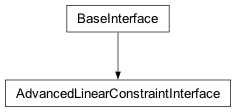Methods for handling lazy cuts and user cuts.
Lazy cuts are constraints not specified in the constraint matrix of the MIP problem, but that must be not be violated in a solution. Using lazy cuts makes sense when there are a large number of constraints that must be satisfied at a solution, but are unlikely to be violated if they are left out. When you add lazy cuts to your model, set the CPLEX parameter c.parameters.preprocessing.reduce to 0 (zero) or 1 (one) in order to turn off dual reductions.
User cuts are constraints that are implied by the constraint matrix and integrality requirements. Adding user cuts is helpful to tighten the MIP formulation. When you add user cuts, set the CPLEX parameter cplex.parameters.preprocessing.reformulations to cplex.parameters.preprocessing.reformulations.values.interfere_uncrush or cplex.parameters.preprocessing.reformulations.values.none to make sure that CPLEX makes only reductions that do not interfere with crushing linear forms (cuts in this case).
- __init__(parent)[source]¶
Creates a new AdvancedLinearConstraintInterface.
The advanced linear constraints interface is exposed by the top-level
Cplexclass as Cplex.linear_constraints.advanced. This constructor is not meant to be used externally.
- get_num_lazy_constraints()[source]¶
Returns the number of lazy cuts in the problem.
Example usage:
>>> import cplex >>> c = cplex.Cplex() >>> indices = c.variables.add(names=[str(i) for i in range(10)]) >>> cut = cplex.SparsePair(ind=[0, 1, 4], val=[1.0, 1.0, 1.0]) >>> indices = c.linear_constraints.advanced.add_lazy_constraints( ... lin_expr=[cut], ... senses="E", ... rhs=[0.0], ... names=["lz1"]) >>> c.linear_constraints.advanced.get_num_lazy_constraints() 1
- get_num_user_cuts()[source]¶
Returns the number of user cuts in the problem.
Example usage:
>>> import cplex >>> c = cplex.Cplex() >>> indices = c.variables.add(names=[str(i) for i in range(10)]) >>> cut = cplex.SparsePair(ind=[0, 1, 4], val=[1.0, 1.0, 1.0]) >>> indices = c.linear_constraints.advanced.add_user_cuts( ... lin_expr=[cut], ... senses="E", ... rhs=[0.0], ... names=["usr1"]) >>> c.linear_constraints.advanced.get_num_user_cuts() 1
- add_lazy_constraints(lin_expr=None, senses='', rhs=None, names=None)[source]¶
Adds lazy constraints to the problem.
linear_constraints.advanced.add_lazy_constraints accepts the keyword arguments lin_expr, senses, rhs, and names.
If more than one argument is specified, all arguments must have the same length.
lin_expr may be either a list of SparsePair instances or a matrix in list-of-lists format.
- Note
The entries of lin_expr must not contain duplicate indices. If an entry of lin_expr references a variable more than once, either by index, name, or a combination of index and name, an exception will be raised.
senses must be either a list of single-character strings or a string containing the senses of the linear constraints.
rhs is a list of floats, specifying the righthand side of each linear constraint.
names is a list of strings.
Returns an iterator containing the indices of the added lazy constraints.
>>> import cplex >>> c = cplex.Cplex() >>> indices = c.variables.add(names=[str(i) for i in range(10)]) >>> cut = cplex.SparsePair(ind=[0, 1, 4], val=[1.0, 1.0, 1.0]) >>> indices = c.linear_constraints.advanced.add_lazy_constraints( ... lin_expr=[cut], ... senses="E", ... rhs=[0.0], ... names=["lz1"]) >>> cut2 = cplex.SparsePair(ind=[0, 2, 4], val=[1.0, 1.0, 1.0]) >>> cut3 = cplex.SparsePair(ind=[0, 2, 5], val=[1.0, 1.0, 1.0]) >>> indices = c.linear_constraints.advanced.add_lazy_constraints( ... lin_expr=[cut2, cut3], ... senses="EE", ... rhs=[0.0, 0.0], ... names=["lz2", "lz3"]) >>> c.linear_constraints.advanced.get_num_lazy_constraints() 3
- add_user_cuts(lin_expr=None, senses='', rhs=None, names=None)[source]¶
Adds user cuts to the problem.
linear_constraints.advanced.add_user_cuts accepts the keyword arguments lin_expr, senses, rhs, and names.
If more than one argument is specified, all arguments must have the same length.
lin_expr may be either a list of SparsePair instances or a matrix in list-of-lists format.
- Note
The entries of lin_expr must not contain duplicate indices. If an entry of lin_expr references a variable more than once, either by index, name, or a combination of index and name, an exception will be raised.
senses must be either a list of single-character strings or a string containing the senses of the linear constraints.
rhs is a list of floats, specifying the righthand side of each linear constraint.
names is a list of strings.
>>> import cplex >>> c = cplex.Cplex() >>> indices = c.variables.add(names=[str(i) for i in range(10)]) >>> cut = cplex.SparsePair(ind=[0, 1, 4], val=[1.0, 1.0, 1.0]) >>> indices = c.linear_constraints.advanced.add_user_cuts( ... names=["usr1"], ... lin_expr=[cut], ... senses="E", ... rhs=[0.0]) >>> cut2 = cplex.SparsePair(ind=[0, 2, 4], val=[1.0, 1.0, 1.0]) >>> cut3 = cplex.SparsePair(ind=[0, 2, 5], val=[1.0, 1.0, 1.0]) >>> indices = c.linear_constraints.advanced.add_user_cuts( ... lin_expr=[cut2, cut3], ... senses = "EE", ... rhs=[0.0, 0.0], ... names=["usr2", "usr3"]) >>> c.linear_constraints.advanced.get_num_user_cuts() 3
- free_lazy_constraints()[source]¶
Removes all lazy constraints from the problem.
Example usage:
>>> import cplex >>> c = cplex.Cplex() >>> indices = c.variables.add(names=[str(i) for i in range(10)]) >>> cut = cplex.SparsePair(ind=[0, 1, 4], val=[1.0, 1.0, 1.0]) >>> indices = c.linear_constraints.advanced.add_lazy_constraints( ... lin_expr = [cut], ... senses = "E", ... rhs = [0.0], ... names = ["lz1"]) >>> c.linear_constraints.advanced.get_num_lazy_constraints() 1 >>> c.linear_constraints.advanced.free_lazy_constraints() >>> c.linear_constraints.advanced.get_num_lazy_constraints() 0
- free_user_cuts()[source]¶
Removes all user cuts from the problem.
Example usage:
>>> import cplex >>> c = cplex.Cplex() >>> indices = c.variables.add(names=[str(i) for i in range(10)]) >>> cut = cplex.SparsePair(ind=[0, 1, 4], val=[1.0, 1.0, 1.0]) >>> indices = c.linear_constraints.advanced.add_user_cuts( ... lin_expr=[cut], ... senses="E", ... rhs=[0.0], ... names=["usr1"]) >>> c.linear_constraints.advanced.get_num_user_cuts() 1 >>> c.linear_constraints.advanced.free_user_cuts() >>> c.linear_constraints.advanced.get_num_user_cuts() 0
- class LinearConstraintInterface[source]¶
Bases:
BaseInterface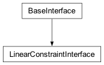Methods for adding, modifying, and querying linear constraints.
- __init__(cplex)[source]¶
Creates a new LinearConstraintInterface.
The linear constraints interface is exposed by the top-level
Cplexclass asCplex.linear_constraints. This constructor is not meant to be used externally.
- advanced¶
- get_num()[source]¶
Returns the number of linear constraints.
Example usage:
>>> import cplex >>> c = cplex.Cplex() >>> indices = c.linear_constraints.add(names = ["c1", "c2", "c3"]) >>> c.linear_constraints.get_num() 3
- add(lin_expr=None, senses='', rhs=None, range_values=None, names=None)[source]¶
Adds linear constraints to the problem.
linear_constraints.add accepts the keyword arguments lin_expr, senses, rhs, range_values, and names.
If more than one argument is specified, all arguments must have the same length.
lin_expr may be either a list of SparsePair instances or a matrix in list-of-lists format.
- Note
The entries of lin_expr must not contain duplicate indices. If an entry of lin_expr references a variable more than once, either by index, name, or a combination of index and name, an exception will be raised.
senses must be either a list of single-character strings or a string containing the senses of the linear constraints. Each entry must be one of ‘G’, ‘L’, ‘E’, and ‘R’, indicating greater-than-or-equal-to (>=), less-than-or-equal-to (<=), equality (=), and ranged constraints, respectively.
rhs is a list of floats, specifying the righthand side of each linear constraint.
range_values is a list of floats, specifying the difference between lefthand side and righthand side of each linear constraint. If range_values[i] > 0 (zero) then the constraint i is defined as rhs[i] <= rhs[i] + range_values[i]. If range_values[i] < 0 (zero) then constraint i is defined as rhs[i] + range_value[i] <= a*x <= rhs[i].
names is a list of strings.
Returns an iterator containing the indices of the added linear constraints.
>>> import cplex >>> c = cplex.Cplex() >>> indices = c.variables.add(names = ["x1", "x2", "x3"]) >>> indices = c.linear_constraints.add( lin_expr = [cplex.SparsePair(ind = ["x1", "x3"], val = [1.0, -1.0]), cplex.SparsePair(ind = ["x1", "x2"], val = [1.0, 1.0]), cplex.SparsePair(ind = ["x1", "x2", "x3"], val = [-1.0] * 3), cplex.SparsePair(ind = ["x2", "x3"], val = [10.0, -2.0])], senses = ["E", "L", "G", "R"], rhs = [0.0, 1.0, -1.0, 2.0], range_values = [0.0, 0.0, 0.0, -10.0], names = ["c0", "c1", "c2", "c3"]) >>> c.linear_constraints.get_rhs() [0.0, 1.0, -1.0, 2.0]
- delete(*args)[source]¶
Removes linear constraints from the problem.
There are four forms by which linear_constraints.delete may be called.
- linear_constraints.delete()
deletes all linear constraints from the problem.
- linear_constraints.delete(i)
i must be a linear constraint name or index. Deletes the linear constraint whose index or name is i.
- linear_constraints.delete(s)
s must be a sequence of linear constraint names or indices. Deletes the linear constraints with names or indices contained within s. Equivalent to [linear_constraints.delete(i) for i in s].
- linear_constraints.delete(begin, end)
begin and end must be linear constraint indices or linear constraint names. Deletes the linear constraints with indices between begin and end, inclusive of end. Equivalent to linear_constraints.delete(range(begin, end + 1)). This will give the best performance when deleting batches of linear constraints.
See CPXdelrows in the Callable Library Reference Manual for more detail.
Example usage:
>>> import cplex >>> c = cplex.Cplex() >>> indices = c.linear_constraints.add(names=[str(i) for i in range(10)]) >>> c.linear_constraints.get_num() 10 >>> c.linear_constraints.delete(8) >>> c.linear_constraints.get_names() ['0', '1', '2', '3', '4', '5', '6', '7', '9'] >>> c.linear_constraints.delete("1", 3) >>> c.linear_constraints.get_names() ['0', '4', '5', '6', '7', '9'] >>> c.linear_constraints.delete([2, "0", 5]) >>> c.linear_constraints.get_names() ['4', '6', '7'] >>> c.linear_constraints.delete() >>> c.linear_constraints.get_names() []
- set_rhs(*args)[source]¶
Sets the righthand side of a set of linear constraints.
There are two forms by which linear_constraints.set_rhs may be called.
- linear_constraints.set_rhs(i, rhs)
i must be a row name or index and rhs must be a real number. Sets the righthand side of the row whose index or name is i to rhs.
- linear_constraints.set_rhs(seq_of_pairs)
seq_of_pairs must be a list or tuple of (i, rhs) pairs, each of which consists of a row name or index and a real number. Sets the righthand side of the specified rows to the corresponding values. Equivalent to [linear_constraints.set_rhs(pair[0], pair[1]) for pair in seq_of_pairs].
>>> import cplex >>> c = cplex.Cplex() >>> indices = c.linear_constraints.add(names = ["c0", "c1", "c2", "c3"]) >>> c.linear_constraints.get_rhs() [0.0, 0.0, 0.0, 0.0] >>> c.linear_constraints.set_rhs("c1", 1.0) >>> c.linear_constraints.get_rhs() [0.0, 1.0, 0.0, 0.0] >>> c.linear_constraints.set_rhs([("c3", 2.0), (2, -1.0)]) >>> c.linear_constraints.get_rhs() [0.0, 1.0, -1.0, 2.0]
- set_names(*args)[source]¶
Sets the name of a linear constraint or set of linear constraints.
There are two forms by which linear_constraints.set_names may be called.
- linear_constraints.set_names(i, name)
i must be a linear constraint name or index and name must be a string.
- linear_constraints.set_names(seq_of_pairs)
seq_of_pairs must be a list or tuple of (i, name) pairs, each of which consists of a linear constraint name or index and a string. Sets the name of the specified linear constraints to the corresponding strings. Equivalent to [linear_constraints.set_names(pair[0], pair[1]) for pair in seq_of_pairs].
>>> import cplex >>> c = cplex.Cplex() >>> indices = c.linear_constraints.add(names = ["c0", "c1", "c2", "c3"]) >>> c.linear_constraints.set_names("c1", "second") >>> c.linear_constraints.get_names(1) 'second' >>> c.linear_constraints.set_names([("c3", "last"), (2, "middle")]) >>> c.linear_constraints.get_names() ['c0', 'second', 'middle', 'last']
- set_senses(*args)[source]¶
Sets the sense of a linear constraint or set of linear constraints.
There are two forms by which linear_constraints.set_senses may be called.
- linear_constraints.set_senses(i, type)
i must be a row name or index and name must be a single-character string.
- linear_constraints.set_senses(seq_of_pairs)
seq_of_pairs must be a list or tuple of (i, sense) pairs, each of which consists of a row name or index and a single-character string. Sets the sense of the specified rows to the corresponding strings. Equivalent to [linear_constraints.set_senses(pair[0], pair[1]) for pair in seq_of_pairs].
The senses of the constraints must be one of ‘G’, ‘L’, ‘E’, and ‘R’, indicating greater-than-or-equal-to (>=), less-than-or-equal-to (<=), equality (=), and ranged constraints, respectively.
>>> import cplex >>> c = cplex.Cplex() >>> indices = c.linear_constraints.add(names = ["c0", "c1", "c2", "c3"]) >>> c.linear_constraints.get_senses() ['E', 'E', 'E', 'E'] >>> c.linear_constraints.set_senses("c1", "G") >>> c.linear_constraints.get_senses(1) 'G' >>> c.linear_constraints.set_senses([("c3", "L"), (2, "R")]) >>> c.linear_constraints.get_senses() ['E', 'G', 'R', 'L']
- set_linear_components(*args)[source]¶
Sets a linear constraint or set of linear constraints.
There are two forms by which this method may be called:
- linear_constraints.set_linear_components(i, lin)
i must be a row name or index and lin must be either a SparsePair or a pair of sequences, the first of which consists of variable names or indices, the second of which consists of floats.
- linear_constraints.set_linear_components(seq_of_pairs)
seq_of_pairs must be a list or tuple of (i, lin) pairs, each of which consists of a row name or index and a vector as described above. Sets the specified rows to the corresponding vector. Equivalent to [linear_constraints.set_linear_components(pair[0], pair[1]) for pair in seq_of_pairs].
>>> import cplex >>> c = cplex.Cplex() >>> indices = c.linear_constraints.add(names=["c0", "c1", "c2", "c3"]) >>> indices = c.variables.add(names=["x0", "x1"]) >>> c.linear_constraints.set_linear_components("c0", [["x0"], [1.0]]) >>> c.linear_constraints.get_rows("c0") SparsePair(ind = [0], val = [1.0]) >>> c.linear_constraints.set_linear_components([ ... ("c3", cplex.SparsePair(ind=["x1"], val=[-1.0])), ... (2, [[0, 1], [-2.0, 3.0]])]) >>> c.linear_constraints.get_rows("c3") SparsePair(ind = [1], val = [-1.0]) >>> c.linear_constraints.get_rows(2) SparsePair(ind = [0, 1], val = [-2.0, 3.0])
- set_range_values(*args)[source]¶
Sets the range values for a set of linear constraints.
That is, this method sets the lefthand side (lhs) for each ranged constraint of the form lhs <= lin_expr <= rhs.
The range values are a list of floats, specifying the difference between lefthand side and righthand side of each linear constraint. If range_values[i] > 0 (zero) then the constraint i is defined as rhs[i] <= rhs[i] + range_values[i]. If range_values[i] < 0 (zero) then constraint i is defined as rhs[i] + range_value[i] <= a*x <= rhs[i].
Note that changing the range values will not change the sense of a constraint; you must call the method set_senses() of the class LinearConstraintInterface to change the sense of a ranged row if the previous range value was 0 (zero) and the constraint sense was not ‘R’. Similarly, changing the range coefficient from a nonzero value to 0 (zero) will not change the constraint sense from ‘R” to “E”; an additional call of setsenses() is required to accomplish that.
There are two forms by which linear_constraints.set_range_values may be called.
- linear_constraints.set_range_values(i, range)
i must be a row name or index and range must be a real number. Sets the range value of the row whose index or name is i to range.
- linear_constraints.set_range_values(seq_of_pairs)
seq_of_pairs must be a list or tuple of (i, range) pairs, each of which consists of a row name or index and a real number. Sets the range values for the specified rows to the corresponding values. Equivalent to [linear_constraints.set_range_values(pair[0], pair[1]) for pair in seq_of_pairs].
>>> import cplex >>> c = cplex.Cplex() >>> indices = c.linear_constraints.add(names = ["c0", "c1", "c2", "c3"]) >>> c.linear_constraints.set_range_values("c1", 1.0) >>> c.linear_constraints.get_range_values() [0.0, 1.0, 0.0, 0.0] >>> c.linear_constraints.set_range_values([("c3", 2.0), (2, -1.0)]) >>> c.linear_constraints.get_range_values() [0.0, 1.0, -1.0, 2.0]
- set_coefficients(*args)[source]¶
Sets individual coefficients of the linear constraint matrix.
There are two forms by which linear_constraints.set_coefficients may be called.
- linear_constraints.set_coefficients(row, col, val)
row and col must be indices or names of a linear constraint and variable, respectively. The corresponding coefficient is set to val.
- linear_constraints.set_coefficients(coefficients)
coefficients must be a list of (row, col, val) triples as described above.
>>> import cplex >>> c = cplex.Cplex() >>> indices = c.linear_constraints.add(names = ["c0", "c1", "c2", "c3"]) >>> indices = c.variables.add(names = ["x0", "x1"]) >>> c.linear_constraints.set_coefficients("c0", "x1", 1.0) >>> c.linear_constraints.get_rows(0) SparsePair(ind = [1], val = [1.0]) >>> c.linear_constraints.set_coefficients([("c2", "x0", 2.0), ("c2", "x1", -1.0)]) >>> c.linear_constraints.get_rows("c2") SparsePair(ind = [0, 1], val = [2.0, -1.0])
- get_rhs(*args)[source]¶
Returns the righthand side of constraints from the problem.
Can be called by four forms.
- linear_constraints.get_rhs()
return the righthand side of all linear constraints from the problem.
- linear_constraints.get_rhs(i)
i must be a linear constraint name or index. Returns the righthand side of the linear constraint whose index or name is i.
- linear_constraints.get_rhs(s)
s must be a sequence of linear constraint names or indices. Returns the righthand side of the linear constraints with indices the members of s. Equivalent to [linear_constraints.get_rhs(i) for i in s]
- linear_constraints.get_rhs(begin, end)
begin and end must be linear constraint indices or linear constraint names. Returns the righthand side of the linear constraints with indices between begin and end, inclusive of end. Equivalent to linear_constraints.get_rhs(range(begin, end + 1)).
>>> import cplex >>> c = cplex.Cplex() >>> indices = c.linear_constraints.add(rhs = [1.5 * i for i in range(10)], names = [str(i) for i in range(10)]) >>> c.linear_constraints.get_num() 10 >>> c.linear_constraints.get_rhs(8) 12.0 >>> c.linear_constraints.get_rhs("1",3) [1.5, 3.0, 4.5] >>> c.linear_constraints.get_rhs([2,"0",5]) [3.0, 0.0, 7.5] >>> c.linear_constraints.get_rhs() [0.0, 1.5, 3.0, 4.5, 6.0, 7.5, 9.0, 10.5, 12.0, 13.5]
- get_senses(*args)[source]¶
Returns the senses of constraints from the problem.
Can be called by four forms.
- linear_constraints.get_senses()
return the senses of all linear constraints from the problem.
- linear_constraints.get_senses(i)
i must be a linear constraint name or index. Returns the sense of the linear constraint whose index or name is i.
- linear_constraints.get_senses(s)
s must be a sequence of linear constraint names or indices. Returns the senses of the linear constraints with indices the members of s. Equivalent to [linear_constraints.get_senses(i) for i in s]
- linear_constraints.get_senses(begin, end)
begin and end must be linear constraint indices or linear constraint names. Returns the senses of the linear constraints with indices between begin and end, inclusive of end. Equivalent to linear_constraints.get_senses(range(begin, end + 1)).
>>> import cplex >>> c = cplex.Cplex() >>> indices = c.linear_constraints.add( ... senses=["E", "G", "L", "R"], ... names=[str(i) for i in range(4)]) >>> c.linear_constraints.get_num() 4 >>> c.linear_constraints.get_senses(1) 'G' >>> c.linear_constraints.get_senses("1",3) ['G', 'L', 'R'] >>> c.linear_constraints.get_senses([2,"0",1]) ['L', 'E', 'G'] >>> c.linear_constraints.get_senses() ['E', 'G', 'L', 'R']
- get_range_values(*args)[source]¶
Returns the range values of linear constraints from the problem.
That is, this method returns the lefthand side (lhs) for each ranged constraint of the form lhs <= lin_expr <= rhs. This method makes sense only for ranged constraints, that is, linear constraints of sense ‘R’.
The range values are a list of floats, specifying the difference between lefthand side and righthand side of each linear constraint. If range_values[i] > 0 (zero) then the constraint i is defined as rhs[i] <= rhs[i] + range_values[i]. If range_values[i] < 0 (zero) then constraint i is defined as rhs[i] + range_value[i] <= a*x <= rhs[i].
Can be called by four forms.
- linear_constraints.get_range_values()
return the range values of all linear constraints from the problem.
- linear_constraints.get_range_values(i)
i must be a linear constraint name or index. Returns the range value of the linear constraint whose index or name is i.
- linear_constraints.get_range_values(s)
s must be a sequence of linear constraint names or indices. Returns the range values of the linear constraints with indices the members of s. Equivalent to [linear_constraints.get_range_values(i) for i in s]
- linear_constraints.get_range_values(begin, end)
begin and end must be linear constraint indices or linear constraint names. Returns the range values of the linear constraints with indices between begin and end, inclusive of end. Equivalent to linear_constraints.get_range_values(range(begin, end + 1)).
>>> import cplex >>> c = cplex.Cplex() >>> indices = c.linear_constraints.add( range_values = [1.5 * i for i in range(10)], senses = ["R"] * 10, names = [str(i) for i in range(10)]) >>> c.linear_constraints.get_num() 10 >>> c.linear_constraints.get_range_values(8) 12.0 >>> c.linear_constraints.get_range_values("1",3) [1.5, 3.0, 4.5] >>> c.linear_constraints.get_range_values([2,"0",5]) [3.0, 0.0, 7.5] >>> c.linear_constraints.get_range_values() [0.0, 1.5, 3.0, 4.5, 6.0, 7.5, 9.0, 10.5, 12.0, 13.5]
- get_coefficients(*args)[source]¶
Returns coefficients by row, column coordinates.
There are two forms by which linear_constraints.get_coefficients may be called.
- linear_constraints.get_coefficients(row, col)
returns the coefficient.
- linear_constraints.get_coefficients(sequence_of_pairs)
returns a list of coefficients.
>>> import cplex >>> c = cplex.Cplex() >>> indices = c.variables.add(names = ["x0", "x1"]) >>> indices = c.linear_constraints.add( names = ["c0", "c1"], lin_expr = [[[1], [1.0]], [[0, 1], [2.0, -1.0]]]) >>> c.linear_constraints.get_coefficients("c0", "x1") 1.0 >>> c.linear_constraints.get_coefficients([("c1", "x0"), ("c1", "x1")]) [2.0, -1.0]
- get_rows(*args)[source]¶
Returns a set of rows of the linear constraint matrix.
Returns a list of SparsePair instances or a single SparsePair instance, depending on the form by which it was called.
There are four forms by which linear_constraints.get_rows may be called.
- linear_constraints.get_rows()
return the entire linear constraint matrix.
- linear_constraints.get_rows(i)
i must be a row name or index. Returns the ith row of the linear constraint matrix.
- linear_constraints.get_rows(s)
s must be a sequence of row names or indices. Returns the rows of the linear constraint matrix indexed by the members of s. Equivalent to [linear_constraints.get_rows(i) for i in s]
- linear_constraints.get_rows(begin, end)
begin and end must be row indices or row names. Returns the rows of the linear constraint matrix with indices between begin and end, inclusive of end. Equivalent to linear_constraints.get_rows(range(begin, end + 1)).
>>> import cplex >>> c = cplex.Cplex() >>> indices = c.variables.add(names=["x1", "x2", "x3"]) >>> indices = c.linear_constraints.add( ... names=["c0", "c1", "c2", "c3"], ... lin_expr=[ ... cplex.SparsePair(ind=["x1", "x3"], val=[1.0, -1.0]), ... cplex.SparsePair(ind=["x1", "x2"], val=[1.0, 1.0]), ... cplex.SparsePair(ind=["x1", "x2", "x3"], val=[-1.0] * 3), ... cplex.SparsePair(ind=["x2", "x3"], val=[10.0, -2.0]) ... ] ... ) >>> c.linear_constraints.get_rows(0) SparsePair(ind = [0, 2], val = [1.0, -1.0]) >>> for row in c.linear_constraints.get_rows(1,3): ... print(row) SparsePair(ind = [0, 1], val = [1.0, 1.0]) SparsePair(ind = [0, 1, 2], val = [-1.0, -1.0, -1.0]) SparsePair(ind = [1, 2], val = [10.0, -2.0]) >>> for row in c.linear_constraints.get_rows(["c2", 0]): ... print(row) SparsePair(ind = [0, 1, 2], val = [-1.0, -1.0, -1.0]) SparsePair(ind = [0, 2], val = [1.0, -1.0]) >>> for row in c.linear_constraints.get_rows(): ... print(row) SparsePair(ind = [0, 2], val = [1.0, -1.0]) SparsePair(ind = [0, 1], val = [1.0, 1.0]) SparsePair(ind = [0, 1, 2], val = [-1.0, -1.0, -1.0]) SparsePair(ind = [1, 2], val = [10.0, -2.0])
- get_num_nonzeros()[source]¶
Returns the number of nonzeros in the linear constraint matrix.
Example usage:
>>> import cplex >>> c = cplex.Cplex() >>> indices = c.variables.add(names=["x1", "x2", "x3"]) >>> indices = c.linear_constraints.add( ... names=["c0", "c1", "c2", "c3"], ... lin_expr=[ ... cplex.SparsePair(ind=["x1", "x3"], val=[1.0, -1.0]), ... cplex.SparsePair(ind=["x1", "x2"], val=[1.0, 1.0]), ... cplex.SparsePair(ind=["x1", "x2", "x3"], val=[-1.0] * 3), ... cplex.SparsePair(ind=["x2", "x3"], val=[10.0, -2.0]) ... ] ... ) >>> c.linear_constraints.get_num_nonzeros() 9
- get_names(*args)[source]¶
Returns the names of linear constraints from the problem.
There are four forms by which linear_constraints.get_names may be called.
- linear_constraints.get_names()
return the names of all linear constraints from the problem.
- linear_constraints.get_names(i)
i must be a linear constraint index. Returns the name of row i.
- linear_constraints.get_names(s)
s must be a sequence of row indices. Returns the names of the linear constraints with indices the members of s. Equivalent to [linear_constraints.get_names(i) for i in s]
- linear_constraints.get_names(begin, end)
begin and end must be linear constraint indices. Returns the names of the linear constraints with indices between begin and end, inclusive of end. Equivalent to linear_constraints.get_names(range(begin, end + 1)).
>>> import cplex >>> c = cplex.Cplex() >>> indices = c.linear_constraints.add(names = ["c" + str(i) for i in range(10)]) >>> c.linear_constraints.get_num() 10 >>> c.linear_constraints.get_names(8) 'c8' >>> c.linear_constraints.get_names(1, 3) ['c1', 'c2', 'c3'] >>> c.linear_constraints.get_names([2, 0, 5]) ['c2', 'c0', 'c5'] >>> c.linear_constraints.get_names() ['c0', 'c1', 'c2', 'c3', 'c4', 'c5', 'c6', 'c7', 'c8', 'c9']
- get_histogram()[source]¶
Returns a histogram of the rows of the linear constraint matrix.
To access the number of rows with given nonzero counts, use slice notation. If a negative nonzero count is queried in this manner an IndexError will be raised.
The __str__ method of the
Histogramobject returns a string displaying the number of rows with given nonzeros counts in human readable form.The data member “orientation” of the histogram object is “row”, indicating that the histogram shows the nonzero counts for the rows of the linear constraint matrix.
>>> import cplex >>> c = cplex.Cplex("ind.lp") >>> histogram = c.linear_constraints.get_histogram() >>> print(histogram) Row counts (excluding fixed variables): Nonzero Count: 3 4 5 10 37 Number of Rows: 1 9 1 4 1 >>> histogram[4] 9 >>> histogram[2:7] [0, 1, 9, 1, 0]
- class IndicatorType[source]¶
Bases:
ConstantClass
Identifiers for types of indicator constraints.
- if_ = 1¶
CPX_INDICATOR_IF (‘->’).
- onlyif = 2¶
CPX_INDICATOR_ONLYIF (‘<-‘)
- iff = 3¶
CPX_INDICATOR_IFANDONLYIF (‘<->’)
- class IndicatorConstraintInterface[source]¶
Bases:
BaseInterface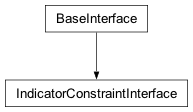Methods for adding, modifying, and querying indicator constraints.
- type_ = <cplex._internal._subinterfaces.IndicatorType object>¶
See
IndicatorType()
- __init__(cplex)[source]¶
Creates a new IndicatorConstraintInterface.
The indicator constraints interface is exposed by the top-level
Cplexclass asCplex.indicator_constraints. This constructor is not meant to be used externally.
- get_num()[source]¶
Returns the number of indicator constraints.
Example usage:
>>> import cplex >>> c = cplex.Cplex() >>> c.indicator_constraints.add(name="ind1") 0 >>> c.indicator_constraints.get_num() 1
- add_batch(lin_expr=None, sense=None, rhs=None, indvar=None, complemented=None, name=None, indtype=None)[source]¶
Adds indicator constraints to the problem.
Takes up to eight keyword arguments.
If more than one argument is specified, all arguments must have the same length.
lin_expr : either a list of SparsePair instances or a matrix in list-of-lists format.
- Note
lin_expr must not contain duplicate indices. If lin_expr references a variable more than once, either by index, name, or a combination of index and name, an exception will be raised.
sense : must be either a list of single-character strings or a string containing the senses of the indicator constraints. Each entry must be one of ‘G’, ‘L’, ‘E’, indicating greater-than-or-equal-to (>=), less-than-or-equal-to (<=), and equality (=), respectively. Left unspecified, the default is ‘E’.
rhs : a list of floats, specifying the righthand side of each indicator constraint.
indvar : a list of names or indices (or a mixture of the two), of the variables that control whether the constraint is active or not.
complemented : a list of values (0 or 1). Default value of 0 instructs CPLEX to interpret indicator constraint as active when the indicator variable is 1. Set complemented to 1 to instruct CPLEX that the indicator constraint is active when indvar = 0.
name : a list of strings that determine the names of the individual constraints.
indtype : a list of the types of indicator constraints. Defaults to CPX_INDICATOR_IF (‘->’). See
IndicatorType().Returns an iterator containing the indices of the added indicator constraints.
>>> import cplex >>> c = cplex.Cplex() >>> indices = c.variables.add(names=["x1", "x2", "x3"]) >>> indices = c.indicator_constraints.add_batch( ... lin_expr=[cplex.SparsePair(ind=["x2"], val=[2.0]), ... cplex.SparsePair(ind=["x3"], val=[2.0])], ... sense="LL", ... rhs=[1.0, 1.0], ... indvar=["x1", "x2"], ... complemented=[0, 0], ... name=["ind1", "ind2"], ... indtype=[c.indicator_constraints.type_.if_, ... c.indicator_constraints.type_.if_]) >>> len(list(indices)) 2
- add(lin_expr=None, sense='E', rhs=0.0, indvar=0, complemented=0, name='', indtype=1)[source]¶
Adds an indicator constraint to the problem.
Takes up to eight keyword arguments.
lin_expr : either a SparsePair or a list of two lists, the first of which contains variable indices or names, the second of which contains values.
- Note
lin_expr must not contain duplicate indices. If lin_expr references a variable more than once, either by index, name, or a combination of index and name, an exception will be raised.
sense : the sense of the constraint, may be “L”, “G”, or “E”: default is “E”
rhs : a float defining the righthand side of the constraint
indvar : the name or index of the variable that controls if the constraint is active
complemented : default value of 0 instructs CPLEX to interpret indicator constraint as active when the indicator variable is 1. Set complemented to 1 to instruct CPLEX that the indicator constraint is active when indvar = 0.
name : the name of the constraint.
indtype : the type of indicator constraint. Defaults to CPX_INDICATOR_IF (‘->’). See
IndicatorType().Returns the index of the added indicator constraint.
>>> import cplex >>> c = cplex.Cplex() >>> indices = c.variables.add(names = ["x1", "x2"]) >>> c.indicator_constraints.add( ... indvar="x1", ... complemented=0, ... rhs=1.0, ... sense="G", ... lin_expr=cplex.SparsePair(ind=["x2"], val=[2.0]), ... name="ind1", ... indtype=c.indicator_constraints.type_.if_) 0
- delete(*args)[source]¶
Deletes indicator constraints from the problem.
There are four forms by which indicator_constraints.delete may be called.
- indicator_constraints.delete()
deletes all indicator constraints from the problem.
- indicator_constraints.delete(i)
i must be an indicator constraint name or index. Deletes the indicator constraint whose index or name is i.
- indicator_constraints.delete(s)
s must be a sequence of indicator constraint names or indices. Deletes the indicator constraints with names or indices contained within s. Equivalent to [indicator_constraints.delete(i) for i in s].
- indicator_constraints.delete(begin, end)
begin and end must be indicator constraint indices or indicator constraint names. Deletes the indicator constraints with indices between begin and end, inclusive of end. Equivalent to indicator_constraints.delete(range(begin, end + 1)). This will give the best performance when deleting batches of indicator constraints.
See CPXdelindconstrs in the Callable Library Reference Manual for more detail.
Example usage:
>>> import cplex >>> c = cplex.Cplex() >>> [c.indicator_constraints.add(name=str(i)) for i in range(10)] [0, 1, 2, 3, 4, 5, 6, 7, 8, 9] >>> c.indicator_constraints.get_num() 10 >>> c.indicator_constraints.delete(8) >>> c.indicator_constraints.get_names() ['0', '1', '2', '3', '4', '5', '6', '7', '9'] >>> c.indicator_constraints.delete("1", 3) >>> c.indicator_constraints.get_names() ['0', '4', '5', '6', '7', '9'] >>> c.indicator_constraints.delete([2, "0", 5]) >>> c.indicator_constraints.get_names() ['4', '6', '7'] >>> c.indicator_constraints.delete() >>> c.indicator_constraints.get_names() []
- get_indicator_variables(*args)[source]¶
Returns the indicator variables of a set of indicator constraints.
May be called by four forms.
- indicator_constraints.get_indicator_variables()
return the indicator variables of all indicator constraints from the problem.
- indicator_constraints.get_indicator_variables(i)
i must be an indicator constraint name or index. Returns the indicator variables of the indicator constraint whose index or name is i.
- indicator_constraints.get_indicator_variables(s)
s must be a sequence of indicator constraint names or indices. Returns the indicator variables of the indicator constraints with indices the members of s. Equivalent to [indicator_constraints.get_indicator_variables(i) for i in s]
- indicator_constraints.get_indicator_variables(begin, end)
begin and end must be indicator constraint indices or indicator constraint names. Returns the indicator variables of the indicator constraints with indices between begin and end, inclusive of end. Equivalent to indicator_constraints.get_indicator_variables(range(begin, end + 1)).
>>> import cplex >>> c = cplex.Cplex() >>> indices = c.variables.add(names = [str(i) for i in range(11)], types = "B" * 11) >>> [c.indicator_constraints.add( ... name=str(i), indvar=i, ... lin_expr=cplex.SparsePair(ind=[i+1], val=[1.0])) ... for i in range(10)] [0, 1, 2, 3, 4, 5, 6, 7, 8, 9] >>> c.indicator_constraints.get_num() 10 >>> c.indicator_constraints.get_indicator_variables(8) 8 >>> c.indicator_constraints.get_indicator_variables("1",3) [1, 2, 3] >>> c.indicator_constraints.get_indicator_variables([2,"0",5]) [2, 0, 5] >>> c.indicator_constraints.get_indicator_variables() [0, 1, 2, 3, 4, 5, 6, 7, 8, 9]
- get_complemented(*args)[source]¶
Returns whether a set of indicator constraints is complemented.
May be called by four forms.
- indicator_constraints.get_complemented()
return whether or not all indicator constraints from the problem are complemented.
- indicator_constraints.get_complemented(i)
i must be an indicator constraint name or index. Returns whether or not the indicator constraint whose index or name is i is complemented.
- indicator_constraints.get_complemented(s)
s must be a sequence of indicator constraint names or indices. Returns whether or not the indicator constraints with indices the members of s are complemented. Equivalent to [indicator_constraints.get_complemented(i) for i in s]
- indicator_constraints.get_complemented(begin, end)
begin and end must be indicator constraint indices or indicator constraint names. Returns whether or not the indicator constraints with indices between begin and end, inclusive of end, are complemented. Equivalent to indicator_constraints.get_complemented(range(begin, end + 1)).
>>> import cplex >>> c = cplex.Cplex() >>> indices = c.variables.add(names = [str(i) for i in range(11)], types = "B" * 11) >>> [c.indicator_constraints.add( ... name=str(i), indvar=10, ... complemented=i % 2) ... for i in range(10)] [0, 1, 2, 3, 4, 5, 6, 7, 8, 9] >>> c.indicator_constraints.get_num() 10 >>> c.indicator_constraints.get_complemented(8) 0 >>> c.indicator_constraints.get_complemented("1",3) [1, 0, 1] >>> c.indicator_constraints.get_complemented([2,"0",5]) [0, 0, 1] >>> c.indicator_constraints.get_complemented() [0, 1, 0, 1, 0, 1, 0, 1, 0, 1]
- get_num_nonzeros(*args)[source]¶
Returns the number of nonzeros in a set of indicator constraints.
May be called by four forms.
- indicator_constraints.get_num_nonzeros()
return the number of nonzeros in all indicator constraints from the problem.
- indicator_constraints.get_num_nonzeros(i)
i must be an indicator constraint name or index. Returns the number of nonzeros in the indicator constraint whose index or name is i.
- indicator_constraints.get_num_nonzeros(s)
s must be a sequence of indicator constraint names or indices. Returns the number of nonzeros in the indicator constraints with indices the members of s. Equivalent to [indicator_constraints.get_num_nonzeros(i) for i in s]
- indicator_constraints.get_num_nonzeros(begin, end)
begin and end must be indicator constraint indices or indicator constraint names. Returns the number of nonzeros in the indicator constraints with indices between begin and end, inclusive of end. Equivalent to indicator_constraints.get_num_nonzeros(range(begin, end + 1)).
>>> import cplex >>> c = cplex.Cplex() >>> indices = c.variables.add(names = [str(i) for i in range(11)], types = "B" * 11) >>> [c.indicator_constraints.add( ... name=str(i), indvar=10, ... lin_expr=[range(i), [1.0 * (j+1.0) for j in range(i)]]) ... for i in range(10)] [0, 1, 2, 3, 4, 5, 6, 7, 8, 9] >>> c.indicator_constraints.get_num() 10 >>> c.indicator_constraints.get_num_nonzeros(8) 8 >>> c.indicator_constraints.get_num_nonzeros("1",3) [1, 2, 3] >>> c.indicator_constraints.get_num_nonzeros([2,"0",5]) [2, 0, 5] >>> c.indicator_constraints.get_num_nonzeros() [0, 1, 2, 3, 4, 5, 6, 7, 8, 9]
- get_rhs(*args)[source]¶
Returns the righthand side of a set of indicator constraints.
May be called by four forms.
- indicator_constraints.get_rhs()
return the righthand side of all indicator constraints from the problem.
- indicator_constraints.get_rhs(i)
i must be an indicator constraint name or index. Returns the righthand side of the indicator constraint whose index or name is i.
- indicator_constraints.get_rhs(s)
s must be a sequence of indicator constraint names or indices. Returns the righthand side of the indicator constraints with indices the members of s. Equivalent to [indicator_constraints.get_rhs(i) for i in s]
- indicator_constraints.get_rhs(begin, end)
begin and end must be indicator constraint indices or indicator constraint names. Returns the righthand side of the indicator constraints with indices between begin and end, inclusive of end. Equivalent to indicator_constraints.get_rhs(range(begin, end + 1)).
>>> import cplex >>> c = cplex.Cplex() >>> [c.indicator_constraints.add(rhs=1.5 * i, name=str(i)) for i in range(10)] [0, 1, 2, 3, 4, 5, 6, 7, 8, 9] >>> c.indicator_constraints.get_num() 10 >>> c.indicator_constraints.get_rhs(8) 12.0 >>> c.indicator_constraints.get_rhs("1",3) [1.5, 3.0, 4.5] >>> c.indicator_constraints.get_rhs([2,"0",5]) [3.0, 0.0, 7.5] >>> c.indicator_constraints.get_rhs() [0.0, 1.5, 3.0, 4.5, 6.0, 7.5, 9.0, 10.5, 12.0, 13.5]
- get_senses(*args)[source]¶
Returns the sense of a set of indicator constraints.
May be called by four forms.
- indicator_constraints.get_senses()
return the senses of all indicator constraints from the problem.
- indicator_constraints.get_senses(i)
i must be an indicator constraint name or index. Returns the sense of the indicator constraint whose index or name is i.
- indicator_constraints.get_senses(s)
s must be a sequence of indicator constraint names or indices. Returns the senses of the indicator constraints with indices the members of s. Equivalent to [indicator_constraints.get_senses(i) for i in s]
- indicator_constraints.get_senses(begin, end)
begin and end must be indicator constraint indices or indicator constraint names. Returns the senses of the indicator constraints with indices between begin and end, inclusive of end. Equivalent to indicator_constraints.get_senses(range(begin, end + 1)).
>>> import cplex >>> c = cplex.Cplex() >>> [c.indicator_constraints.add(name=str(i), sense=j) ... for i, j in enumerate("EGLE")] [0, 1, 2, 3] >>> c.indicator_constraints.get_num() 4 >>> c.indicator_constraints.get_senses(1) 'G' >>> c.indicator_constraints.get_senses("1",3) ['G', 'L', 'E'] >>> c.indicator_constraints.get_senses([2,"0",1]) ['L', 'E', 'G'] >>> c.indicator_constraints.get_senses() ['E', 'G', 'L', 'E']
- get_types(*args)[source]¶
Returns the type of a set of indicator constraints.
See
IndicatorType().May be called by four forms.
- indicator_constraints.get_types()
return the types of all indicator constraints from the problem.
- indicator_constraints.get_types(i)
i must be an indicator constraint name or index. Returns the type of the indicator constraint whose index or name is i.
- indicator_constraints.get_types(s)
s must be a sequence of indicator constraint names or indices. Returns the types of the indicator constraints with indices the members of s. Equivalent to [indicator_constraints.get_types(i) for i in s]
- indicator_constraints.get_types(begin, end)
begin and end must be indicator constraint indices or indicator constraint names. Returns the types of the indicator constraints with indices between begin and end, inclusive of end. Equivalent to indicator_constraints.get_types(range(begin, end + 1)).
>>> import cplex >>> c = cplex.Cplex() >>> idx = c.indicator_constraints.add(name='i1') >>> c.indicator_constraints.get_types(idx) 1 >>> c.indicator_constraints.type_[1] 'if_'
- get_linear_components(*args)[source]¶
Returns the linear constraint of a set of indicator constraints.
Returns a list of SparsePair instances or a single SparsePair instance, depending on the form by which it was called.
May be called by four forms.
- indicator_constraints.get_linear_components()
return the linear components of all indicator constraints from the problem.
- indicator_constraints.get_linear_components(i)
i must be an indicator constraint name or index. Returns the linear component of the indicator constraint whose index or name is i.
- indicator_constraints.get_linear_components(s)
s must be a sequence of indicator constraint names or indices. Returns the linear components of the indicator constraints with indices the members of s. Equivalent to [indicator_constraints.get_linear_components(i) for i in s]
- indicator_constraints.get_linear_components(begin, end)
begin and end must be indicator constraint indices or indicator constraint names. Returns the linear components of the indicator constraints with indices between begin and end, inclusive of end. Equivalent to indicator_constraints.get_linear_components(range(begin, end + 1)).
>>> import cplex >>> c = cplex.Cplex() >>> indices = c.variables.add( ... names=[str(i) for i in range(4)], ... types="B" * 4 ... ) >>> [c.indicator_constraints.add( ... name=str(i), indvar=3, ... lin_expr=[range(i), [1.0 * (j+1.0) for j in range(i)]]) ... for i in range(3)] [0, 1, 2] >>> c.indicator_constraints.get_num() 3 >>> c.indicator_constraints.get_linear_components(2) SparsePair(ind = [0, 1], val = [1.0, 2.0]) >>> for row in c.indicator_constraints.get_linear_components("0", 1): ... print(row) SparsePair(ind = [], val = []) SparsePair(ind = [0], val = [1.0]) >>> for row in c.indicator_constraints.get_linear_components([1, "0"]): ... print(row) SparsePair(ind = [0], val = [1.0]) SparsePair(ind = [], val = []) >>> for row in c.indicator_constraints.get_linear_components(): ... print(row) SparsePair(ind = [], val = []) SparsePair(ind = [0], val = [1.0]) SparsePair(ind = [0, 1], val = [1.0, 2.0])
- get_names(*args)[source]¶
Returns the names of a set of indicator constraints.
May be called by four forms.
- indicator_constraints.get_names()
return the names of all indicator constraints from the problem.
- indicator_constraints.get_names(i)
i must be an indicator constraint index. Returns the name of constraint i.
- indicator_constraints.get_names(s)
s must be a sequence of indicator constraint indices. Returns the names of the indicator constraints with indices the members of s. Equivalent to [indicator_constraints.get_names(i) for i in s]
- indicator_constraints.get_names(begin, end)
begin and end must be indicator constraint indices. Returns the names of the indicator constraints with indices between begin and end, inclusive of end. Equivalent to indicator_constraints.get_names(range(begin, end + 1)).
>>> import cplex >>> c = cplex.Cplex() >>> [c.indicator_constraints.add(name="i" + str(i)) ... for i in range(10)] [0, 1, 2, 3, 4, 5, 6, 7, 8, 9] >>> c.indicator_constraints.get_num() 10 >>> c.indicator_constraints.get_names(8) 'i8' >>> c.indicator_constraints.get_names(1, 3) ['i1', 'i2', 'i3'] >>> c.indicator_constraints.get_names([2, 0, 5]) ['i2', 'i0', 'i5'] >>> c.indicator_constraints.get_names() ['i0', 'i1', 'i2', 'i3', 'i4', 'i5', 'i6', 'i7', 'i8', 'i9']
- class QuadraticConstraintInterface[source]¶
Bases:
BaseInterface
Methods for adding, modifying, and querying quadratic constraints.
- __init__(cplex)[source]¶
Creates a new QuadraticConstraintInterface.
The quadratic constraints interface is exposed by the top-level
Cplexclass asCplex.quadratic_constraints. This constructor is not meant to be used externally.
- get_num()[source]¶
Returns the number of quadratic constraints.
Example usage:
>>> import cplex >>> c = cplex.Cplex() >>> indices = c.variables.add(names = ['x','y']) >>> l = cplex.SparsePair(ind = ['x'], val = [1.0]) >>> q = cplex.SparseTriple(ind1 = ['x'], ind2 = ['y'], val = [1.0]) >>> [c.quadratic_constraints.add(name=str(i), lin_expr=l, quad_expr=q) ... for i in range(10)] [0, 1, 2, 3, 4, 5, 6, 7, 8, 9] >>> c.quadratic_constraints.get_num() 10
- add(lin_expr=None, quad_expr=None, sense='L', rhs=0.0, name='')[source]¶
Adds a quadratic constraint to the problem.
Takes up to five keyword arguments:
lin_expr : either a SparsePair or a list of two lists specifying the linear component of the constraint.
- Note
lin_expr must not contain duplicate indices. If lin_expr references a variable more than once, either by index, name, or a combination of index and name, an exception will be raised.
quad_expr : either a SparseTriple or a list of three lists specifying the quadratic component of the constraint.
- Note
quad_expr must not contain duplicate indices. If quad_expr references a matrix entry more than once, either by indices, names, or a combination of indices and names, an exception will be raised.
sense : either “L”, “G”, or “E”
rhs : a float specifying the righthand side of the constraint.
name : the name of the constraint.
Returns the index of the added quadratic constraint.
>>> import cplex >>> c = cplex.Cplex() >>> indices = c.variables.add(names = ['x','y']) >>> l = cplex.SparsePair(ind = ['x'], val = [1.0]) >>> q = cplex.SparseTriple(ind1 = ['x'], ind2 = ['y'], val = [1.0]) >>> c.quadratic_constraints.add(name = "my_quad", ... lin_expr = l, ... quad_expr = q, ... rhs = 1.0, ... sense = "G") 0
- delete(*args)[source]¶
Deletes quadratic constraints from the problem.
There are four forms by which quadratic_constraints.delete may be called.
- quadratic_constraints.delete()
deletes all quadratic constraints from the problem.
- quadratic_constraints.delete(i)
i must be a quadratic constraint name or index. Deletes the quadratic constraint whose index or name is i.
- quadratic_constraints.delete(s)
s must be a sequence of quadratic constraint names or indices. Deletes the quadratic constraints with names or indices contained within s. Equivalent to [quadratic_constraints.delete(i) for i in s].
- quadratic_constraints.delete(begin, end)
begin and end must be quadratic constraint indices or quadratic constraint names. Deletes the quadratic constraints with indices between begin and end, inclusive of end. Equivalent to quadratic_constraints.delete(range(begin, end + 1)). This will give the best performance when deleting batches of quadratic constraints.
See CPXdelqconstrs in the Callable Library Reference Manual for more detail.
Example usage:
>>> import cplex >>> c = cplex.Cplex() >>> indices = c.variables.add(names=['x', 'y']) >>> l = cplex.SparsePair(ind=['x'], val=[1.0]) >>> q = cplex.SparseTriple(ind1=['x'], ind2=['y'], val=[1.0]) >>> [c.quadratic_constraints.add( ... name=str(i), lin_expr=l, quad_expr=q) ... for i in range(10)] [0, 1, 2, 3, 4, 5, 6, 7, 8, 9] >>> c.quadratic_constraints.get_num() 10 >>> c.quadratic_constraints.delete(8) >>> c.quadratic_constraints.get_names() ['0', '1', '2', '3', '4', '5', '6', '7', '9'] >>> c.quadratic_constraints.delete("1", 3) >>> c.quadratic_constraints.get_names() ['0', '4', '5', '6', '7', '9'] >>> c.quadratic_constraints.delete([2, "0", 5]) >>> c.quadratic_constraints.get_names() ['4', '6', '7'] >>> c.quadratic_constraints.delete() >>> c.quadratic_constraints.get_names() []
- get_rhs(*args)[source]¶
Returns the righthand side of a set of quadratic constraints.
Can be called by four forms.
- quadratic_constraints.get_rhs()
return the righthand side of all quadratic constraints from the problem.
- quadratic_constraints.get_rhs(i)
i must be a quadratic constraint name or index. Returns the righthand side of the quadratic constraint whose index or name is i.
- quadratic_constraints.get_rhs(s)
s must be a sequence of quadratic constraint names or indices. Returns the righthand side of the quadratic constraints with indices the members of s. Equivalent to [quadratic_constraints.get_rhs(i) for i in s]
- quadratic_constraints.get_rhs(begin, end)
begin and end must be quadratic constraint indices or quadratic constraint names. Returns the righthand side of the quadratic constraints with indices between begin and end, inclusive of end. Equivalent to quadratic_constraints.get_rhs(range(begin, end + 1)).
>>> import cplex >>> c = cplex.Cplex() >>> indices = c.variables.add(names = [str(i) for i in range(10)]) >>> [c.quadratic_constraints.add(rhs=1.5 * i, name=str(i)) ... for i in range(10)] [0, 1, 2, 3, 4, 5, 6, 7, 8, 9] >>> c.quadratic_constraints.get_num() 10 >>> c.quadratic_constraints.get_rhs(8) 12.0 >>> c.quadratic_constraints.get_rhs("1",3) [1.5, 3.0, 4.5] >>> c.quadratic_constraints.get_rhs([2,"0",5]) [3.0, 0.0, 7.5] >>> c.quadratic_constraints.get_rhs() [0.0, 1.5, 3.0, 4.5, 6.0, 7.5, 9.0, 10.5, 12.0, 13.5]
- get_senses(*args)[source]¶
Returns the senses of a set of quadratic constraints.
Can be called by four forms.
- quadratic_constraints.get_senses()
return the senses of all quadratic constraints from the problem.
- quadratic_constraints.get_senses(i)
i must be a quadratic constraint name or index. Returns the sense of the quadratic constraint whose index or name is i.
- quadratic_constraints.get_senses(s)
s must be a sequence of quadratic constraint names or indices. Returns the senses of the quadratic constraints with indices the members of s. Equivalent to [quadratic_constraints.get_senses(i) for i in s]
- quadratic_constraints.get_senses(begin, end)
begin and end must be quadratic constraint indices or quadratic constraint names. Returns the senses of the quadratic constraints with indices between begin and end, inclusive of end. Equivalent to quadratic_constraints.get_senses(range(begin, end + 1)).
>>> import cplex >>> c = cplex.Cplex() >>> indices = c.variables.add(names = ["x0"]) >>> [c.quadratic_constraints.add(name=str(i), sense=j) ... for i, j in enumerate("GGLL")] [0, 1, 2, 3] >>> c.quadratic_constraints.get_num() 4 >>> c.quadratic_constraints.get_senses(1) 'G' >>> c.quadratic_constraints.get_senses("1",3) ['G', 'L', 'L'] >>> c.quadratic_constraints.get_senses([2,"0",1]) ['L', 'G', 'G'] >>> c.quadratic_constraints.get_senses() ['G', 'G', 'L', 'L']
- get_linear_num_nonzeros(*args)[source]¶
Returns the number of nonzeros in the linear part of a set of quadratic constraints.
Can be called by four forms.
- quadratic_constraints.get_linear_num_nonzeros()
return the number of nonzeros in all quadratic constraints from the problem.
- quadratic_constraints.get_linear_num_nonzeros(i)
i must be a quadratic constraint name or index. Returns the number of nonzeros in the quadratic constraint whose index or name is i.
- quadratic_constraints.get_linear_num_nonzeros(s)
s must be a sequence of quadratic constraint names or indices. Returns the number of nonzeros in the quadratic constraints with indices the members of s. Equivalent to [quadratic_constraints.get_linear_num_nonzeros(i) for i in s]
- quadratic_constraints.get_linear_num_nonzeros(begin, end)
begin and end must be quadratic constraint indices or quadratic constraint names. Returns the number of nonzeros in the quadratic constraints with indices between begin and end, inclusive of end. Equivalent to quadratic_constraints.get_linear_num_nonzeros(range(begin, end + 1)).
>>> import cplex >>> c = cplex.Cplex() >>> indices = c.variables.add(names = [str(i) for i in range(11)], types = "B" * 11) >>> [c.quadratic_constraints.add( ... name = str(i), ... lin_expr = [range(i), [1.0 * (j+1.0) for j in range(i)]]) ... for i in range(10)] [0, 1, 2, 3, 4, 5, 6, 7, 8, 9] >>> c.quadratic_constraints.get_num() 10 >>> c.quadratic_constraints.get_linear_num_nonzeros(8) 8 >>> c.quadratic_constraints.get_linear_num_nonzeros("1",3) [1, 2, 3] >>> c.quadratic_constraints.get_linear_num_nonzeros([2,"0",5]) [2, 0, 5] >>> c.quadratic_constraints.get_linear_num_nonzeros() [0, 1, 2, 3, 4, 5, 6, 7, 8, 9]
- get_linear_components(*args)[source]¶
Returns the linear part of a set of quadratic constraints.
Returns a list of SparsePair instances or one SparsePair instance.
Can be called by four forms.
- quadratic_constraints.get_linear_components()
return the linear components of all quadratic constraints from the problem.
- quadratic_constraints.get_linear_components(i)
i must be a quadratic constraint name or index. Returns the linear component of the quadratic constraint whose index or name is i.
- quadratic_constraints.get_linear_components(s)
s must be a sequence of quadratic constraint names or indices. Returns the linear components of the quadratic constraints with indices the members of s. Equivalent to [quadratic_constraints.get_linear_components(i) for i in s]
- quadratic_constraints.get_linear_components(begin, end)
begin and end must be quadratic constraint indices or quadratic constraint names. Returns the linear components of the quadratic constraints with indices between begin and end, inclusive of end. Equivalent to quadratic_constraints.get_linear_components(range(begin, end + 1)).
>>> import cplex >>> c = cplex.Cplex() >>> indices = c.variables.add( ... names=[str(i) for i in range(4)], ... types="B" * 4 ... ) >>> [c.quadratic_constraints.add( ... name=str(i), ... lin_expr=[range(i), [1.0 * (j+1.0) for j in range(i)]]) ... for i in range(3)] [0, 1, 2] >>> c.quadratic_constraints.get_num() 3 >>> c.quadratic_constraints.get_linear_components(2) SparsePair(ind = [0, 1], val = [1.0, 2.0]) >>> for row in c.quadratic_constraints.get_linear_components("0", 1): ... print(row) SparsePair(ind = [], val = []) SparsePair(ind = [0], val = [1.0]) >>> for row in c.quadratic_constraints.get_linear_components([1, "0"]): ... print(row) SparsePair(ind = [0], val = [1.0]) SparsePair(ind = [], val = []) >>> for row in c.quadratic_constraints.get_linear_components(): ... print(row) SparsePair(ind = [], val = []) SparsePair(ind = [0], val = [1.0]) SparsePair(ind = [0, 1], val = [1.0, 2.0])
- get_quad_num_nonzeros(*args)[source]¶
Returns the number of nonzeros in the quadratic part of a set of quadratic constraints.
Can be called by four forms.
- quadratic_constraints.get_quad_num_nonzeros()
Returns the number of nonzeros in all quadratic constraints from the problem.
- quadratic_constraints.get_quad_num_nonzeros(i)
i must be a quadratic constraint name or index. Returns the number of nonzeros in the quadratic constraint whose index or name is i.
- quadratic_constraints.get_quad_num_nonzeros(s)
s must be a sequence of quadratic constraint names or indices. Returns the number of nonzeros in the quadratic constraints with indices the members of s. Equivalent to [quadratic_constraints.get_quad_num_nonzeros(i) for i in s]
- quadratic_constraints.get_quad_num_nonzeros(begin, end)
begin and end must be quadratic constraint indices or quadratic constraint names. Returns the number of nonzeros in the quadratic constraints with indices between begin and end, inclusive of end. Equivalent to quadratic_constraints.get_quad_num_nonzeros(range(begin, end + 1)).
>>> import cplex >>> c = cplex.Cplex() >>> indices = c.variables.add(names = [str(i) for i in range(11)]) >>> [c.quadratic_constraints.add( ... name = str(i), ... quad_expr = [range(i), range(i), [1.0 * (j+1.0) for j in range(i)]]) ... for i in range(1, 11)] [0, 1, 2, 3, 4, 5, 6, 7, 8, 9] >>> c.quadratic_constraints.get_num() 10 >>> c.quadratic_constraints.get_quad_num_nonzeros(8) 9 >>> c.quadratic_constraints.get_quad_num_nonzeros("1",2) [1, 2, 3] >>> c.quadratic_constraints.get_quad_num_nonzeros([2,"1",5]) [3, 1, 6] >>> c.quadratic_constraints.get_quad_num_nonzeros() [1, 2, 3, 4, 5, 6, 7, 8, 9, 10]
- get_quadratic_components(*args)[source]¶
Returns the quadratic part of a set of quadratic constraints.
Can be called by four forms.
- quadratic_constraints.get_quadratic_components()
return the quadratic components of all quadratic constraints from the problem.
- quadratic_constraints.get_quadratic_components(i)
i must be a quadratic constraint name or index. Returns the quadratic component of the quadratic constraint whose index or name is i.
- quadratic_constraints.get_quadratic_components(s)
s must be a sequence of quadratic constraint names or indices. Returns the quadratic components of the quadratic constraints with indices the members of s. Equivalent to [quadratic_constraints.get_quadratic_components(i) for i in s]
- quadratic_constraints.get_quadratic_components(begin, end)
begin and end must be quadratic constraint indices or quadratic constraint names. Returns the quadratic components of the quadratic constraints with indices between begin and end, inclusive of end. Equivalent to quadratic_constraints.get_quadratic_components(range(begin, end + 1)).
>>> import cplex >>> c = cplex.Cplex() >>> indices = c.variables.add( ... names=[str(i) for i in range(4)] ... ) >>> [c.quadratic_constraints.add( ... name="q{0}".format(i), ... quad_expr=[range(i), range(i), ... [1.0 * (j+1.0) for j in range(i)]]) ... for i in range(1, 3)] [0, 1] >>> c.quadratic_constraints.get_num() 2 >>> c.quadratic_constraints.get_quadratic_components(1) SparseTriple(ind1 = [0, 1], ind2 = [0, 1], val = [1.0, 2.0]) >>> for quad in c.quadratic_constraints.get_quadratic_components("q1", 1): ... print(quad) SparseTriple(ind1 = [0], ind2 = [0], val = [1.0]) SparseTriple(ind1 = [0, 1], ind2 = [0, 1], val = [1.0, 2.0]) >>> for quad in c.quadratic_constraints.get_quadratic_components(["q2", 0]): ... print(quad) SparseTriple(ind1 = [0, 1], ind2 = [0, 1], val = [1.0, 2.0]) SparseTriple(ind1 = [0], ind2 = [0], val = [1.0]) >>> for quad in c.quadratic_constraints.get_quadratic_components(): ... print(quad) SparseTriple(ind1 = [0], ind2 = [0], val = [1.0]) SparseTriple(ind1 = [0, 1], ind2 = [0, 1], val = [1.0, 2.0])
- get_names(*args)[source]¶
Returns the names of a set of quadratic constraints.
Can be called by four forms.
- quadratic_constraints.get_names()
return the names of all quadratic constraints from the problem.
- quadratic_constraints.get_names(i)
i must be a quadratic constraint index. Returns the name of constraint i.
- quadratic_constraints.get_names(s)
s must be a sequence of quadratic constraint indices. Returns the names of the quadratic constraints with indices the members of s. Equivalent to [quadratic_constraints.get_names(i) for i in s]
- quadratic_constraints.get_names(begin, end)
begin and end must be quadratic constraint indices. Returns the names of the quadratic constraints with indices between begin and end, inclusive of end. Equivalent to quadratic_constraints.get_names(range(begin, end + 1)).
>>> import cplex >>> c = cplex.Cplex() >>> indices = c.variables.add(names = [str(i) for i in range(11)]) >>> [c.quadratic_constraints.add( ... name = "q" + str(i), ... quad_expr = [range(i), range(i), [1.0 * (j+1.0) for j in range(i)]]) ... for i in range(1, 11)] [0, 1, 2, 3, 4, 5, 6, 7, 8, 9] >>> c.quadratic_constraints.get_num() 10 >>> c.quadratic_constraints.get_names(8) 'q9' >>> c.quadratic_constraints.get_names(1, 3) ['q2', 'q3', 'q4'] >>> c.quadratic_constraints.get_names([2, 0, 5]) ['q3', 'q1', 'q6'] >>> c.quadratic_constraints.get_names() ['q1', 'q2', 'q3', 'q4', 'q5', 'q6', 'q7', 'q8', 'q9', 'q10']
- class SOSType[source]¶
Bases:
ConstantClass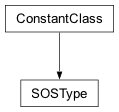Constants defining the type of special ordered sets.
For a definition of SOS type 1 and 2, see those topics in the CPLEX User’s Manual.
- SOS1 = '1'¶
- SOS2 = '2'¶
- class SOSInterface[source]¶
Bases:
BaseInterface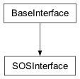Class containing methods for Special Ordered Sets (SOS).
- __init__(cplex)[source]¶
Creates a new SOSInterface.
The SOS interface is exposed by the top-level
Cplexclass asCplex.SOS. This constructor is not meant to be used externally.
- add(type='1', SOS=None, name='')[source]¶
Adds a special ordered set constraint to the problem.
Takes three keyword arguments.
type : can be either SOS.type.SOS1 or SOS.type.SOS2
SOS : either a SparsePair or a list of two lists, the first of which contains variable indices or names, the second of which contains the weights to assign to those variables.
name: the name of the SOS
Returns the index of the added SOS constraint.
>>> import cplex >>> c = cplex.Cplex() >>> indices = c.variables.add(names = [str(i) for i in range(10)]) >>> c.SOS.add(type = "1", name = "type_one", ... SOS = cplex.SparsePair(ind = ["2", "3"], ... val = [25.0, 18.0])) 0 >>> c.SOS.add(type = "2", name = "type_two", ... SOS = cplex.SparsePair(ind = ["2", "4", "7", "3"], ... val = [1.0, 3.0, 25.0, 18.0])) 1
- delete(*args)[source]¶
Deletes special ordered sets from the problem.
There are four forms by which SOS.delete may be called.
- SOS.delete()
deletes all SOS constraints from the problem.
- SOS.delete(i)
i must be a SOS constraint name or index. Deletes the SOS constraint indexed as i or named i.
- SOS.delete(s)
s must be a sequence of SOS constraint names or indices. Deletes the SOS constraints with names or indices contained within s. Equivalent to [SOS.delete(i) for i in s].
- SOS.delete(begin, end)
begin and end must be SOS constraint indices or SOS constraint names. Deletes the SOS constraints with indices between begin and end, inclusive of end. Equivalent to SOS.delete(range(begin, end + 1)). This will give the best performance when deleting batches of SOS constraints.
See CPXdelsos in the Callable Library Reference Manual for more detail.
Example usage:
>>> import cplex >>> c = cplex.Cplex() >>> indices = c.variables.add(names=['x', 'y']) >>> l = cplex.SparsePair(ind=['x'], val=[1.0]) >>> [c.SOS.add(name=str(i), SOS=l) for i in range(10)] [0, 1, 2, 3, 4, 5, 6, 7, 8, 9] >>> c.SOS.get_num() 10 >>> c.SOS.delete(8) >>> c.SOS.get_names() ['0', '1', '2', '3', '4', '5', '6', '7', '9'] >>> c.SOS.delete("1", 3) >>> c.SOS.get_names() ['0', '4', '5', '6', '7', '9'] >>> c.SOS.delete([2, "0", 5]) >>> c.SOS.get_names() ['4', '6', '7'] >>> c.SOS.delete() >>> c.SOS.get_names() []
- get_sets(*args)[source]¶
Returns the sets of variables and their corresponding weights.
Returns a SparsePair instance or a list of SparsePair instances.
Can be called by four forms.
- SOS.get_sets()
return the set of variables and weights of all SOS constraints from the problem.
- SOS.get_sets(i)
i must be a SOS constraint name or index. Returns the set of variables and weights of the SOS constraint whose index or name is i.
- SOS.get_sets(s)
s must be a sequence of SOS constraint names or indices. Returns the variables and weights of the SOS constraints with indices the members of s. Equivalent to [SOS.get_sets(i) for i in s]
- SOS.get_sets(begin, end)
begin and end must be SOS constraint indices or SOS constraint names. Returns the variables and weights of the SOS constraints with indices between begin and end, inclusive of end. Equivalent to SOS.get_sets(range(begin, end + 1)).
>>> import cplex >>> c = cplex.Cplex() >>> indices = c.variables.add( ... names=[str(i) for i in range(4)], ... types="B" * 4 ... ) >>> [c.SOS.add( ... name="s{0}".format(i), ... SOS=[range(i), [1.0 * (j+1.0) for j in range(i)]]) ... for i in range(1, 3)] [0, 1] >>> c.SOS.get_num() 2 >>> c.SOS.get_sets(1) SparsePair(ind = [0, 1], val = [1.0, 2.0]) >>> for s in c.SOS.get_sets("s1", 1): ... print(s) SparsePair(ind = [0], val = [1.0]) SparsePair(ind = [0, 1], val = [1.0, 2.0]) >>> for s in c.SOS.get_sets(["s2", 0]): ... print(s) SparsePair(ind = [0, 1], val = [1.0, 2.0]) SparsePair(ind = [0], val = [1.0]) >>> for s in c.SOS.get_sets(): ... print(s) SparsePair(ind = [0], val = [1.0]) SparsePair(ind = [0, 1], val = [1.0, 2.0])
- get_types(*args)[source]¶
Returns the type of a set of special ordered sets.
Return values are attributes of Cplex.SOS.type.
Can be called by four forms.
- SOS.get_types()
return the type of all SOS constraints.
- SOS.get_types(i)
i must be a SOS constraint name or index. Returns the type of the SOS constraint whose index or name is i.
- SOS.get_types(s)
s must be a sequence of SOS constraint names or indices. Returns the type of the SOS constraints with indices the members of s. Equivalent to [SOS.get_types(i) for i in s]
- SOS.get_types(begin, end)
begin and end must be SOS constraint indices or SOS constraint names. Returns the type of the SOS constraints with indices between begin and end, inclusive of end. Equivalent to SOS.get_types(range(begin, end + 1)).
>>> import cplex >>> c = cplex.Cplex() >>> indices = c.variables.add(names = [str(i) for i in range(11)], types = "B" * 11) >>> [c.SOS.add(name = str(i), type = str(i % 2 + 1)) ... for i in range(10)] [0, 1, 2, 3, 4, 5, 6, 7, 8, 9] >>> c.SOS.get_num() 10 >>> c.SOS.get_types(8) '1' >>> c.SOS.get_types("1",3) ['2', '1', '2'] >>> c.SOS.get_types([2,"0",5]) ['1', '1', '2'] >>> c.SOS.get_types() ['1', '2', '1', '2', '1', '2', '1', '2', '1', '2']
- get_num_members(*args)[source]¶
Returns the size of a set of special ordered sets.
Can be called by four forms.
- SOS.get_num_members()
return the number of variables in all SOS constraints from the problem.
- SOS.get_num_members(i)
i must be a SOS constraint name or index. Returns the number of variables in the SOS constraint whose index or name is i.
- SOS.get_num_members(s)
s must be a sequence of SOS constraint names or indices. Returns the number of variables in the SOS constraints with indices the members of s. Equivalent to [SOS.get_num_members(i) for i in s]
- SOS.get_num_members(begin, end)
begin and end must be SOS constraint indices or SOS constraint names. Returns the number of variables in the SOS constraints with indices between begin and end, inclusive of end. Equivalent to SOS.get_num_members(range(begin, end + 1)).
>>> import cplex >>> c = cplex.Cplex() >>> indices = c.variables.add(names = [str(i) for i in range(11)], types = "B" * 11) >>> [c.SOS.add(name = str(i), ... SOS = [range(i), [1.0 * (j+1.0) for j in range(i)]]) ... for i in range(1,11)] [0, 1, 2, 3, 4, 5, 6, 7, 8, 9] >>> c.SOS.get_num() 10 >>> c.SOS.get_num_members(7) 8 >>> c.SOS.get_num_members("1",2) [1, 2, 3] >>> c.SOS.get_num_members([3,"1",4]) [4, 1, 5] >>> c.SOS.get_num_members() [1, 2, 3, 4, 5, 6, 7, 8, 9, 10]
- get_names(*args)[source]¶
Returns the names of a set of special ordered sets.
Can be called by four forms.
- SOS.get_names()
return the names of all SOS constraints from the problem.
- SOS.get_names(i)
i must be an SOS constraint index. Returns the name of SOS constraint i.
- SOS.get_names(s)
s must be a sequence of SOS constraint indices. Returns the names of the SOS constraints with indices the members of s. Equivalent to [SOS.get_names(i) for i in s]
- SOS.get_names(begin, end)
begin and end must be SOS constraint indices. Returns the names of the SOS constraints with indices between begin and end, inclusive of end. Equivalent to SOS.get_names(range(begin, end + 1)).
>>> import cplex >>> c = cplex.Cplex() >>> indices = c.variables.add(names = ["x0"]) >>> [c.SOS.add(name = "sos" + str(i)) for i in range(1, 11)] [0, 1, 2, 3, 4, 5, 6, 7, 8, 9] >>> c.SOS.get_num() 10 >>> c.SOS.get_names(8) 'sos9' >>> c.SOS.get_names(1, 3) ['sos2', 'sos3', 'sos4'] >>> c.SOS.get_names([2, 0, 5]) ['sos3', 'sos1', 'sos6'] >>> c.SOS.get_names() ['sos1', 'sos2', 'sos3', 'sos4', 'sos5', 'sos6', 'sos7', 'sos8', 'sos9', 'sos10']
- class EffortLevel[source]¶
Bases:
ConstantClass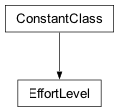Effort levels associated with a MIP start
- auto = 0¶
- check_feasibility = 1¶
- solve_fixed = 2¶
- solve_MIP = 3¶
- repair = 4¶
- no_check = 5¶
- class MIPStartsInterface[source]¶
Bases:
BaseInterface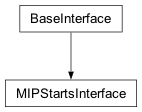Contains methods pertaining to MIP starts.
- effort_level = <cplex._internal._subinterfaces.EffortLevel object>¶
See
EffortLevel()
- __init__(cplex)[source]¶
Creates a new MIPStartsInterface.
The MIP starts interface is exposed by the top-level
Cplexclass asCplex.MIP_starts. This constructor is not meant to be used externally.
- get_num()[source]¶
Returns the number of MIP starts currently stored.
Example usage:
>>> import cplex >>> c = cplex.Cplex() >>> indices = c.variables.add( ... names = [str(i) for i in range(11)], ... types = "I" * 11) >>> indices = c.MIP_starts.add( ... [(cplex.SparsePair(ind = [i], val = [0.0]), ... c.MIP_starts.effort_level.auto) for i in range(5)]) >>> c.MIP_starts.get_num() 5
- read(filename)[source]¶
Reads MIP starts from a file.
This method reads a file in the format MST and copies the information of all the MIP starts contained in that file into a CPLEX problem object. The parameter cplex.parameters.advance must be set to cplex.parameters.advance.values.standard, its default value, or cplex.parameters.advance.values.alternate in order for the MIP starts to be used.
- Note
If the MIP start file is successfully read, then any previously existing MIP starts will be deleted.
Example usage:
>>> import cplex >>> c = cplex.Cplex() >>> out = c.set_results_stream(None) >>> out = c.set_log_stream(None) >>> c.read("ind.lp") >>> c.solve() >>> c.MIP_starts.write("test_all.mst") >>> c.MIP_starts.read("test_all.mst")
- write(filename, begin=-1, end=-1)[source]¶
Writes a set of MIP starts to a file.
If called with only a filename, writes all MIP starts to that file.
If called with a filename and one index or name of a MIP start, writes only that MIP start to the file.
If called with a filename and two indices or names of MIP starts, writes all MIP starts between the first and second index or name, inclusive of begin and end, to the file.
>>> import cplex >>> c = cplex.Cplex() >>> indices = c.variables.add( ... names = [str(i) for i in range(11)], types = "I" * 11) >>> indices = c.MIP_starts.add( ... [(cplex.SparsePair(ind = [i], val = [0.0]), ... c.MIP_starts.effort_level.auto) for i in range(5)]) >>> c.MIP_starts.write("test_all.mst") >>> c.MIP_starts.write("test_one.mst", 1) >>> c.MIP_starts.write("test_four.mst", 1, 4)
- add(*args)[source]¶
Adds MIP starts to the problem.
To add a single MIP start, call this method as
cpx.MIP_starts.add(start, effort_level, name)
The first argument, start, must be either a SparsePair instance or a list of two lists, the first of which contains variable indices or names, the second of which contains the values that those variables take.
The second argument, effort_level, must be an attribute of MIP_starts.effort_level.
The third optional argument is the name of the MIP start.
To add a set of MIP starts, call this method as
cpx.MIP_starts.add(sequence)
where sequence is a list or tuple of pairs (start, effort_level) or triples (start, effort_level, name) as described above.
>>> import cplex >>> c = cplex.Cplex() >>> indices = c.variables.add(names = [str(i) for i in range(11)], ... types = "I" * 11) >>> indices = c.MIP_starts.add( ... cplex.SparsePair(ind = [0], val = [0.0]), ... c.MIP_starts.effort_level.repair, "first") >>> indices = c.MIP_starts.add( ... cplex.SparsePair(ind = [1], val = [0.0]), ... c.MIP_starts.effort_level.solve_MIP) >>> indices = c.MIP_starts.add( ... [([[2, 4], [0.0, 1.0]], ... c.MIP_starts.effort_level.auto, "third"), ... ([[3, 4], [1.0, 3.0]], ... c.MIP_starts.effort_level.check_feasibility)]) >>> c.MIP_starts.get_num() 4 >>> c.MIP_starts.get_names() ['first', 'm2', 'third', 'm4']
- change(*args)[source]¶
Changes a MIP start or set of MIP starts.
To change a single MIP start, call this method as
cpx.MIP_starts.change(ID, start, effort_level)
The first argument, ID, must be an index or name of an existing MIP start.
The second argument, start, must be either a SparsePair instance or a list of two lists, the first of which contains variable indices or names, the second of which contains the values that those variables take. If the MIP start identified by ID already has a value for a variable specified by start, that value is replaced.
The third argument, effort_level, must be an attribute of MIP_starts.effort_level.
To change multiple MIP starts, call this method as
cpx.MIP_starts.change(sequence)
where sequence is a list of tuple of triples (ID, start, effort_level) as described above.
>>> import cplex >>> c = cplex.Cplex() >>> indices = c.variables.add( ... names = ["x{0}".format(i) for i in range(4)], ... types = "I" * 4 ... ) >>> indices = c.MIP_starts.add( ... [(cplex.SparsePair(ind = [i], val = [0.0]), ... c.MIP_starts.effort_level.auto) for i in range(3)]) >>> for s in c.MIP_starts.get_starts(): ... print(s) (SparsePair(ind = [0], val = [0.0]), 0) (SparsePair(ind = [1], val = [0.0]), 0) (SparsePair(ind = [2], val = [0.0]), 0) >>> c.MIP_starts.get_names() ['m1', 'm2', 'm3'] >>> check = c.MIP_starts.effort_level.check_feasibility >>> repair = c.MIP_starts.effort_level.repair >>> c.MIP_starts.change("m1", [["x0", "x1"], [1.0, 2.0]], check) >>> c.MIP_starts.get_starts("m1") (SparsePair(ind = [0, 1], val = [1.0, 2.0]), 1) >>> c.MIP_starts.change(1, [[1, 2], [-1.0, -2.0]], repair) >>> c.MIP_starts.get_starts("m2") (SparsePair(ind = [1, 2], val = [-1.0, -2.0]), 4) >>> c.MIP_starts.change([(1, [[0, 2], [-1.0, 2.0]], check), ... ("m3", [["x0", 2], [3.0, 2.0]], repair)]) >>> for s in c.MIP_starts.get_starts(["m2", "m3"]): ... print(s) (SparsePair(ind = [0, 1, 2], val = [-1.0, -1.0, 2.0]), 1) (SparsePair(ind = [0, 2], val = [3.0, 2.0]), 4)
- delete(*args)[source]¶
Deletes MIP starts from the problem.
There are four forms by which MIP_starts.delete may be called.
- MIP_starts.delete()
deletes all MIP starts from the problem.
- MIP_starts.delete(i)
i must be a MIP start name or index. Deletes the MIP start whose index or name is i.
- MIP_starts.delete(s)
s must be a sequence of MIP start names or indices. Deletes the MIP starts with names or indices contained within s. Equivalent to [MIP_starts.delete(i) for i in s].
- MIP_starts.delete(begin, end)
begin and end must be MIP start indices or MIP start names. Deletes the MIP starts with indices between begin and end, inclusive of end. Equivalent to MIP_starts.delete(range(begin, end + 1)). This will give the best performance when deleting batches of MIP starts.
See CPXdelmipstarts in the Callable Library Reference Manual for more detail.
Example usage:
>>> import cplex >>> c = cplex.Cplex() >>> indices = c.variables.add(names=['x', 'y'], types=["II"]) >>> indices = c.MIP_starts.add( ... [(cplex.SparsePair(ind=['x'], val=[1.0]), ... c.MIP_starts.effort_level.auto, str(i)) ... for i in range(10)]) >>> c.MIP_starts.get_num() 10 >>> c.MIP_starts.delete(8) >>> c.MIP_starts.get_names() ['0', '1', '2', '3', '4', '5', '6', '7', '9'] >>> c.MIP_starts.delete("1", 3) >>> c.MIP_starts.get_names() ['0', '4', '5', '6', '7', '9'] >>> c.MIP_starts.delete([2, "0", 5]) >>> c.MIP_starts.get_names() ['4', '6', '7'] >>> c.MIP_starts.delete() >>> c.MIP_starts.get_names() []
- get_starts(*args)[source]¶
Returns a set of MIP starts.
Returns a SparsePair instance or a list of SparsePair instances.
Can be called by four forms.
- MIP_starts.get_starts()
return the starting vector for all MIP starts from the problem.
- MIP_starts.get_starts(i)
i must be a MIP start name or index. Returns the starting vector for the MIP start whose index or name is i.
- MIP_starts.get_starts(s)
s must be a sequence of MIP start names or indices. Returns the starting vector for the MIP starts with indices the members of s. Equivalent to [MIP_starts.get_starts(i) for i in s]
- MIP_starts.get_starts(begin, end)
begin and end must be MIP start indices or MIP start names. Returns the starting vector for the MIP starts with indices between begin and end, inclusive of end. Equivalent to MIP_starts.get_starts(range(begin, end + 1)).
>>> import cplex >>> c = cplex.Cplex() >>> indices = c.variables.add( ... names=[str(i) for i in range(11)], ... types="B" * 11) >>> indices =c.MIP_starts.add( ... [(cplex.SparsePair(ind=[i], val=[1.0 * i]), ... c.MIP_starts.effort_level.auto, str(i)) ... for i in range(10)]) >>> c.MIP_starts.get_num() 10 >>> c.MIP_starts.get_starts(7) (SparsePair(ind = [7], val = [7.0]), 0) >>> for s in c.MIP_starts.get_starts("0", 2): ... print(s) (SparsePair(ind = [0], val = [0.0]), 0) (SparsePair(ind = [1], val = [1.0]), 0) (SparsePair(ind = [2], val = [2.0]), 0) >>> for s in c.MIP_starts.get_starts([2, "0", 5]): ... print(s) (SparsePair(ind = [2], val = [2.0]), 0) (SparsePair(ind = [0], val = [0.0]), 0) (SparsePair(ind = [5], val = [5.0]), 0) >>> c.MIP_starts.delete(3,9) >>> for s in c.MIP_starts.get_starts(): ... print(s) (SparsePair(ind = [0], val = [0.0]), 0) (SparsePair(ind = [1], val = [1.0]), 0) (SparsePair(ind = [2], val = [2.0]), 0) >>> c.MIP_starts.effort_level[0] 'auto'
- get_effort_levels(*args)[source]¶
Returns the effort levels for a set of MIP starts.
Can be called by four forms.
- MIP_starts.get_effort_levels()
return the effort level for all MIP starts from the problem.
- MIP_starts.get_effort_levels(i)
i must be a MIP start name or index. Returns the effort level for the MIP start whose index or name is i.
- MIP_starts.get_effort_levels(s)
s must be a sequence of MIP start names or indices. Returns the effort level for the MIP starts with indices the members of s. Equivalent to [MIP_starts.get_effort_levels(i) for i in s]
- MIP_starts.get_effort_levels(begin, end)
begin and end must be MIP start indices or MIP start names. Returns the effort level for the MIP starts with indices between begin and end, inclusive of end. Equivalent to MIP_starts.get_effort_levels(range(begin, end + 1)).
>>> import cplex >>> c = cplex.Cplex() >>> indices = c.variables.add( ... names = [str(i) for i in range(10)], ... types = "B" * 10) >>> indices = c.MIP_starts.add( ... [(cplex.SparsePair(ind = [i], val = [1.0 * i]), ... c.MIP_starts.effort_level.auto, str(i)) ... for i in range(10)]) >>> c.MIP_starts.change([(1, [[0], [0.0]], c.MIP_starts.effort_level.check_feasibility), (2, [[0], [0.0]], c.MIP_starts.effort_level.solve_fixed), (3, [[0], [0.0]], c.MIP_starts.effort_level.solve_MIP), (4, [[0], [0.0]], c.MIP_starts.effort_level.repair), (5, [[0], [0.0]], c.MIP_starts.effort_level.no_check)]) >>> c.MIP_starts.get_num() 10 >>> c.MIP_starts.effort_level[c.MIP_starts.get_effort_levels(3)] 'solve_MIP' >>> [c.MIP_starts.effort_level[i] for i in c.MIP_starts.get_effort_levels("0",2)] ['auto', 'check_feasibility', 'solve_fixed'] >>> [c.MIP_starts.effort_level[i] for i in c.MIP_starts.get_effort_levels([2,"0",5])] ['solve_fixed', 'auto', 'no_check'] >>> c.MIP_starts.get_effort_levels() [0, 1, 2, 3, 4, 5, 0, 0, 0, 0]
- get_num_entries(*args)[source]¶
Returns the number of variables specified by a set of MIP starts.
Can be called by four forms.
- MIP_starts.get_num_entries()
return the length of the starting vector for all MIP starts from the problem.
- MIP_starts.get_num_entries(i)
i must be a MIP start name or index. Returns the length of the starting vector for the MIP start whose index or name is i.
- MIP_starts.get_num_entries(s)
s must be a sequence of MIP start names or indices. Returns the length of the starting vector for the MIP starts with indices the members of s. Equivalent to [MIP_starts.get_num_entries(i) for i in s]
- MIP_starts.get_num_entries(begin, end)
begin and end must be MIP start indices or MIP start names. Returns the length of the starting vector for the MIP starts with indices between begin and end, inclusive of end. Equivalent to MIP_starts.get_num_entries(range(begin, end + 1)).
>>> import cplex >>> c = cplex.Cplex() >>> indices = c.variables.add( ... names = [str(i) for i in range(11)], ... types = "B" * 11) >>> indices = c.MIP_starts.add( ... [(cplex.SparsePair(ind = range(i), val = [0.0] * i), ... c.MIP_starts.effort_level.auto, str(i - 1)) ... for i in range(1, 11)]) >>> c.MIP_starts.get_num() 10 >>> c.MIP_starts.get_num_entries(3) 4 >>> c.MIP_starts.get_num_entries("0",2) [1, 2, 3] >>> c.MIP_starts.get_num_entries([2,"0",5]) [3, 1, 6] >>> c.MIP_starts.get_num_entries() [1, 2, 3, 4, 5, 6, 7, 8, 9, 10]
- get_names(*args)[source]¶
Returns the names of a set of MIP starts.
Can be called by four forms.
- MIP_starts.get_names()
return the names of all MIP starts from the problem.
- MIP_starts.get_names(i)
i must be a MIP start index. Returns the name of MIP start i.
- MIP_starts.get_names(s)
s must be a sequence of MIP start indices. Returns the names of the MIP starts with indices the members of s. Equivalent to [MIP_starts.get_names(i) for i in s]
- MIP_starts.get_names(begin, end)
begin and end must be MIP start indices. Returns the names of the MIP starts with indices between begin and end, inclusive of end. Equivalent to MIP_starts.get_names(range(begin, end + 1)).
>>> import cplex >>> c = cplex.Cplex() >>> indices = c.variables.add( ... names = [str(i) for i in range(11)], ... types = "B" * 11) >>> indices = c.MIP_starts.add( ... [(cplex.SparsePair(ind = range(i), val = [0.0] * i), ... c.MIP_starts.effort_level.auto, "mst" + str(i - 1)) ... for i in range(1, 11)]) >>> c.MIP_starts.get_num() 10 >>> c.MIP_starts.get_names(8) 'mst8' >>> c.MIP_starts.get_names(1, 3) ['mst1', 'mst2', 'mst3'] >>> c.MIP_starts.get_names([2, 0, 5]) ['mst2', 'mst0', 'mst5'] >>> c.MIP_starts.get_names() ['mst0', 'mst1', 'mst2', 'mst3', 'mst4', 'mst5', 'mst6', 'mst7', 'mst8', 'mst9']
- class ObjSense[source]¶
Bases:
ConstantClass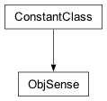Constants defining the sense of the objective function.
See CPXgetobjsen in the Callable Library Reference Manual for more detail.
- maximize = -1¶
See CPX_MAX in the C API.
- minimize = 1¶
See CPX_MIN in the C API.
- class ObjectiveInterface[source]¶
Bases:
BaseInterface
Contains methods for querying and modifying the objective function.
- sense = <cplex._internal._subinterfaces.ObjSense object>¶
See
ObjSense()
- set_linear(*args)[source]¶
Changes the linear part of the objective function.
Can be called by two forms:
- objective.set_linear(var, value)
var must be a variable index or name and value must be a float. Changes the coefficient of the variable identified by var to value.
- objective.set_linear(sequence)
sequence is a sequence of pairs (var, value) as described above. Changes the coefficients for the specified variables to the given values.
>>> import cplex >>> c = cplex.Cplex() >>> indices = c.variables.add(names = [str(i) for i in range(4)]) >>> c.objective.get_linear() [0.0, 0.0, 0.0, 0.0] >>> c.objective.set_linear(0, 1.0) >>> c.objective.get_linear() [1.0, 0.0, 0.0, 0.0] >>> c.objective.set_linear("3", -1.0) >>> c.objective.get_linear() [1.0, 0.0, 0.0, -1.0] >>> c.objective.set_linear([("2", 2.0), (1, 0.5)]) >>> c.objective.get_linear() [1.0, 0.5, 2.0, -1.0]
- set_quadratic(*args)[source]¶
Sets the quadratic part of the objective function.
Call this method with a list with length equal to the number of variables in the problem.
If the quadratic objective function is separable, the entries of the list must all be of type float or int.
If the quadratic objective function is not separable, the entries of the list must be either SparsePair instances or lists of two lists, the first of which contains variable indices or names, the second of which contains the values that those variables take.
- Note
Successive calls to set_quadratic will overwrite any previous quadratic objective function. To modify only part of the quadratic objective function, use the method set_quadratic_coefficients.
>>> import cplex >>> c = cplex.Cplex() >>> indices = c.variables.add(names=[str(i) for i in range(3)]) >>> c.objective.set_quadratic( ... [cplex.SparsePair(ind=[0, 1, 2], val=[1.0, -2.0, 0.5]), ... cplex.SparsePair(ind=[0, 1], val=[-2.0, -1.0]), ... cplex.SparsePair(ind=[0, 2], val=[0.5, -3.0])] ... ) >>> for q in c.objective.get_quadratic(): ... print(q) SparsePair(ind = [0, 1, 2], val = [1.0, -2.0, 0.5]) SparsePair(ind = [0, 1], val = [-2.0, -1.0]) SparsePair(ind = [0, 2], val = [0.5, -3.0]) >>> c.objective.set_quadratic([1.0, 2.0, 3.0]) >>> for q in c.objective.get_quadratic(): ... print(q) SparsePair(ind = [0], val = [1.0]) SparsePair(ind = [1], val = [2.0]) SparsePair(ind = [2], val = [3.0])
- set_quadratic_coefficients(*args)[source]¶
Sets coefficients of the quadratic component of the objective function.
To set a single coefficient, call this method as
objective.set_quadratic_coefficients(v1, v2, val)
where v1 and v2 are names or indices of variables and val is the value for the coefficient.
To set multiple coefficients, call this method as
objective.set_quadratic_coefficients(sequence)
where sequence is a list or tuple of triples (v1, v2, val) as described above.
- Note
Since the quadratic objective function must be symmetric, each triple in which v1 is different from v2 is used to set both the (v1, v2) coefficient and the (v2, v1) coefficient. If (v1, v2) and (v2, v1) are set with a single call, the second value is stored.
- Note
Attempting to set many coefficients with set_quadratic_coefficients can be time consuming. Instead, use the method set_quadratic to set the quadratic part of the objective efficiently.
>>> import cplex >>> c = cplex.Cplex() >>> indices = c.variables.add(names=[str(i) for i in range(3)]) >>> c.objective.set_quadratic_coefficients(0, 1, 1.0) >>> for q in c.objective.get_quadratic(): ... print(q) SparsePair(ind = [1], val = [1.0]) SparsePair(ind = [0], val = [1.0]) SparsePair(ind = [], val = []) >>> c.objective.set_quadratic_coefficients([(1, 1, 2.0), ... (0, 2, 3.0)]) >>> for q in c.objective.get_quadratic(): ... print(q) SparsePair(ind = [1, 2], val = [1.0, 3.0]) SparsePair(ind = [0, 1], val = [1.0, 2.0]) SparsePair(ind = [0], val = [3.0]) >>> c.objective.set_quadratic_coefficients([(0, 1, 4.0), ... (1, 0, 5.0)]) >>> for q in c.objective.get_quadratic(): ... print(q) SparsePair(ind = [1, 2], val = [5.0, 3.0]) SparsePair(ind = [0, 1], val = [5.0, 2.0]) SparsePair(ind = [0], val = [3.0])
- set_sense(sense)[source]¶
Sets the sense of the objective function.
The argument to this method must be either objective.sense.minimize or objective.sense.maximize.
>>> import cplex >>> c = cplex.Cplex() >>> c.objective.sense[c.objective.get_sense()] 'minimize' >>> c.objective.set_sense(c.objective.sense.maximize) >>> c.objective.sense[c.objective.get_sense()] 'maximize' >>> c.objective.set_sense(c.objective.sense.minimize) >>> c.objective.sense[c.objective.get_sense()] 'minimize'
- set_name(name)[source]¶
Sets the name of the objective function.
Example usage:
>>> import cplex >>> c = cplex.Cplex() >>> c.objective.set_name("cost") >>> c.objective.get_name() 'cost'
- get_linear(*args)[source]¶
Returns the linear coefficients of a set of variables.
Can be called by four forms.
- objective.get_linear()
return the linear objective coefficients of all variables from the problem.
- objective.get_linear(i)
i must be a variable name or index. Returns the linear objective coefficient of the variable whose index or name is i.
- objective.get_linear(s)
s must be a sequence of variable names or indices. Returns the linear objective coefficient of the variables with indices the members of s. Equivalent to [objective.get_linear(i) for i in s]
- objective.get_linear(begin, end)
begin and end must be variable indices or variable names. Returns the linear objective coefficient of the variables with indices between begin and end, inclusive of end. Equivalent to objective.get_linear(range(begin, end + 1)).
>>> import cplex >>> c = cplex.Cplex() >>> indices = c.variables.add(obj = [1.5 * i for i in range(10)], names = [str(i) for i in range(10)]) >>> c.variables.get_num() 10 >>> c.objective.get_linear(8) 12.0 >>> c.objective.get_linear("1",3) [1.5, 3.0, 4.5] >>> c.objective.get_linear([2,"0",5]) [3.0, 0.0, 7.5] >>> c.objective.get_linear() [0.0, 1.5, 3.0, 4.5, 6.0, 7.5, 9.0, 10.5, 12.0, 13.5]
- get_quadratic(*args)[source]¶
Returns a set of columns of the quadratic component of the objective function.
Returns a SparsePair instance or a list of SparsePair instances.
Can be called by four forms.
- objective.get_quadratic()
return the entire quadratic objective function.
- objective.get_quadratic(i)
i must be a variable name or index. Returns the column of the quadratic objective function associated with the variable whose index or name is i.
- objective.get_quadratic(s)
s must be a sequence of variable names or indices. Returns the columns of the quadratic objective function associated with the variables with indices the members of s. Equivalent to [objective.get_quadratic(i) for i in s]
- objective.get_quadratic(begin, end)
begin and end must be variable indices or variable names. Returns the columns of the quadratic objective function associated with the variables with indices between begin and end, inclusive of end. Equivalent to objective.get_quadratic(range(begin, end + 1)).
>>> import cplex >>> c = cplex.Cplex() >>> indices = c.variables.add(names=[str(i) for i in range(10)]) >>> c.variables.get_num() 10 >>> c.objective.set_quadratic([1.5 * i for i in range(10)]) >>> c.objective.get_quadratic(8) SparsePair(ind = [8], val = [12.0]) >>> for q in c.objective.get_quadratic("1", 3): ... print(q) SparsePair(ind = [1], val = [1.5]) SparsePair(ind = [2], val = [3.0]) SparsePair(ind = [3], val = [4.5]) >>> for q in c.objective.get_quadratic([3, "1", 5]): ... print(q) SparsePair(ind = [3], val = [4.5]) SparsePair(ind = [1], val = [1.5]) SparsePair(ind = [5], val = [7.5]) >>> for q in c.objective.get_quadratic(): ... print(q) SparsePair(ind = [], val = []) SparsePair(ind = [1], val = [1.5]) SparsePair(ind = [2], val = [3.0]) SparsePair(ind = [3], val = [4.5]) SparsePair(ind = [4], val = [6.0]) SparsePair(ind = [5], val = [7.5]) SparsePair(ind = [6], val = [9.0]) SparsePair(ind = [7], val = [10.5]) SparsePair(ind = [8], val = [12.0]) SparsePair(ind = [9], val = [13.5])
- get_quadratic_coefficients(*args)[source]¶
Returns individual coefficients from the quadratic objective function.
To query a single coefficient, call this as
objective.get_quadratic_coefficients(v1, v2)
where v1 and v2 are indices or names of variables.
To query multiple coefficients, call this method as
objective.get_quadratic_coefficients(sequence)
where sequence is a list or tuple of pairs (v1, v2) as described above.
>>> import cplex >>> c = cplex.Cplex() >>> indices = c.variables.add(names = [str(i) for i in range(3)]) >>> c.objective.set_quadratic_coefficients(0, 1, 1.0) >>> c.objective.get_quadratic_coefficients("1", 0) 1.0 >>> c.objective.set_quadratic_coefficients([(1, 1, 2.0), (0, 2, 3.0), (1, 0, 5.0)]) >>> c.objective.get_quadratic_coefficients([(1, 0), (1, "1"), (2, "0")]) [5.0, 2.0, 3.0]
- get_sense()[source]¶
Returns the sense of the objective function.
Example usage:
>>> import cplex >>> c = cplex.Cplex() >>> c.objective.sense[c.objective.get_sense()] 'minimize' >>> c.objective.set_sense(c.objective.sense.maximize) >>> c.objective.sense[c.objective.get_sense()] 'maximize' >>> c.objective.set_sense(c.objective.sense.minimize) >>> c.objective.sense[c.objective.get_sense()] 'minimize'
- get_name()[source]¶
Returns the name of the objective function.
Example usage:
>>> import cplex >>> c = cplex.Cplex() >>> c.objective.set_name("cost") >>> c.objective.get_name() 'cost'
- get_num_quadratic_variables()[source]¶
Returns the number of variables with quadratic coefficients.
Example usage:
>>> import cplex >>> c = cplex.Cplex() >>> indices = c.variables.add(names = [str(i) for i in range(3)]) >>> c.objective.set_quadratic_coefficients(0, 1, 1.0) >>> c.objective.get_num_quadratic_variables() 2 >>> c.objective.set_quadratic([1.0, 0.0, 0.0]) >>> c.objective.get_num_quadratic_variables() 1 >>> c.objective.set_quadratic_coefficients([(1, 1, 2.0), (0, 2, 3.0)]) >>> c.objective.get_num_quadratic_variables() 3
- get_num_quadratic_nonzeros()[source]¶
Returns the number of nonzeros in the quadratic objective function.
Example usage:
>>> import cplex >>> c = cplex.Cplex() >>> indices = c.variables.add(names = [str(i) for i in range(3)]) >>> c.objective.set_quadratic_coefficients(0, 1, 1.0) >>> c.objective.get_num_quadratic_nonzeros() 2 >>> c.objective.set_quadratic_coefficients([(1, 1, 2.0), (0, 2, 3.0)]) >>> c.objective.get_num_quadratic_nonzeros() 5 >>> c.objective.set_quadratic_coefficients([(0, 1, 4.0), (1, 0, 0.0)]) >>> c.objective.get_num_quadratic_nonzeros() 3
- class ProgressInterface[source]¶
Bases:
BaseInterface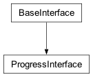Methods to query the progress of optimization.
- __init__(parent)[source]¶
Creates a new ProgressInterface.
The progress interface is exposed by the top-level
Cplexclass as Cplex.solution.progress. This constructor is not meant to be used externally.
- get_num_iterations()[source]¶
Returns the number of iterations executed so far.
Example usage:
>>> import cplex >>> c = cplex.Cplex() >>> out = c.set_results_stream(None) >>> out = c.set_log_stream(None) >>> c.read("example.mps") >>> c.solve() >>> num_iter = c.solution.progress.get_num_iterations()
- get_num_barrier_iterations()[source]¶
Returns the number of barrier iterations.
Example usage:
>>> import cplex >>> c = cplex.Cplex() >>> out = c.set_results_stream(None) >>> out = c.set_log_stream(None) >>> c.read("qcp.lp") >>> c.solve() >>> num_iter = c.solution.progress.get_num_barrier_iterations()
- get_num_sifting_iterations()[source]¶
Returns the number of sifting iterations.
Example usage:
>>> import cplex >>> c = cplex.Cplex() >>> out = c.set_results_stream(None) >>> out = c.set_log_stream(None) >>> c.read("lpex.mps") >>> c.parameters.lpmethod.set(c.parameters.lpmethod.values.sifting) >>> c.solve() >>> num_iter = c.solution.progress.get_num_sifting_iterations()
- get_num_phase_one_iterations()[source]¶
Returns the number of iterations to find a feasible solution.
Example usage:
>>> import cplex >>> c = cplex.Cplex() >>> out = c.set_results_stream(None) >>> out = c.set_log_stream(None) >>> c.read("lpex.mps") >>> c.solve() >>> num_iter = c.solution.progress.get_num_phase_one_iterations()
- get_num_sifting_phase_one_iterations()[source]¶
Returns the number of sifting iterations to find a feasible solution.
Example usage:
>>> import cplex >>> c = cplex.Cplex() >>> out = c.set_results_stream(None) >>> out = c.set_log_stream(None) >>> c.read("lpex.mps") >>> c.parameters.lpmethod.set(c.parameters.lpmethod.values.sifting) >>> c.solve() >>> num_iter = c.solution.progress.get_num_sifting_phase_one_iterations()
- get_num_nodes_processed()[source]¶
Returns the number of nodes processed.
Example usage:
>>> import cplex >>> c = cplex.Cplex() >>> c.parameters.randomseed.set(1) >>> out = c.set_results_stream(None) >>> out = c.set_log_stream(None) >>> c.read("ind.lp") >>> c.solve() >>> num_nodes = c.solution.progress.get_num_nodes_processed()
- get_num_nodes_remaining()[source]¶
Returns the number of nodes left to process.
Example usage:
>>> import cplex >>> c = cplex.Cplex() >>> out = c.set_results_stream(None) >>> out = c.set_log_stream(None) >>> c.read("ind.lp") >>> c.solve() >>> num_nodes = c.solution.progress.get_num_nodes_remaining()
- get_num_primal_push()[source]¶
Returns the number of primal push operations.
Example usage:
>>> import cplex >>> c = cplex.Cplex() >>> out = c.set_results_stream(None) >>> out = c.set_log_stream(None) >>> c.read("lpex.mps") >>> c.parameters.lpmethod.set(c.parameters.lpmethod.values.barrier) >>> c.solve() >>> num_push = c.solution.progress.get_num_primal_push()
- get_num_primal_exchange()[source]¶
Returns the number of primal exchange operations.
Example usage:
>>> import cplex >>> c = cplex.Cplex() >>> out = c.set_results_stream(None) >>> out = c.set_log_stream(None) >>> c.read("lpex.mps") >>> c.parameters.lpmethod.set(c.parameters.lpmethod.values.barrier) >>> c.solve() >>> num_exch = c.solution.progress.get_num_primal_exchange()
- get_num_dual_push()[source]¶
Returns the number of dual push operations.
Example usage:
>>> import cplex >>> c = cplex.Cplex() >>> out = c.set_results_stream(None) >>> out = c.set_log_stream(None) >>> c.read("lpex.mps") >>> c.parameters.lpmethod.set(c.parameters.lpmethod.values.barrier) >>> c.solve() >>> num_push = c.solution.progress.get_num_dual_push()
- get_num_dual_exchange()[source]¶
Returns the number of dual exchange operations.
Example usage:
>>> import cplex >>> c = cplex.Cplex() >>> out = c.set_results_stream(None) >>> out = c.set_log_stream(None) >>> c.read("lpex.mps") >>> c.parameters.lpmethod.set(c.parameters.lpmethod.values.barrier) >>> c.solve() >>> num_exch = c.solution.progress.get_num_dual_exchange()
- get_num_conflict_passes()[source]¶
Returns the number of passes performed by the conflict refiner.
See CPXgetconflictnumpasses in the Callable Library Reference Manual.
Example usage:
>>> import cplex >>> c = cplex.Cplex() >>> out = c.set_results_stream(None) >>> c.read("infeasible.lp") >>> c.conflict.refine() >>> c.solution.progress.get_num_conflict_passes() 5
- class InfeasibilityInterface[source]¶
Bases:
BaseInterface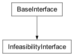Methods for computing degree of infeasibility in a solution vector.
Each of these methods takes one required argument, x, which must be a list of floats with length equal to the number of variables.
If no other arguments are provided, the methods return the violation for all constraints of the given type.
If one string or integer is provided, it is taken to be the name or index of a constraint of the given type. The methods return the violation of that constraint.
If two strings or integers are provided, they are taken to be the names or indices of constraints of the given type. All violations for constraints between the first and second, inclusive, are returned in a list.
If a sequence of strings or integers are provided, they are taken to be the names or indices of constraints of the given type. All violations for constraints identified in the sequence are returned in a list.
- __init__(parent)[source]¶
Creates a new InfeasibilityInterface.
The infeasibility interface is exposed by the top-level
Cplexclass as Cplex.solution.infeasibility. This constructor is not meant to be used externally.
- bound_constraints(x, *args)[source]¶
Returns the amount by which variable bounds are violated by x.
Can be called by four forms.
>>> import cplex >>> c = cplex.Cplex() >>> out = c.set_results_stream(None) >>> out = c.set_log_stream(None) >>> c.read("lpex.mps") >>> c.solve() >>> c.solution.infeasibility.bound_constraints(c.solution.get_values(), 2) 0.0 >>> c.solution.infeasibility.bound_constraints(c.solution.get_values(), "x10") 0.0 >>> c.solution.infeasibility.bound_constraints(c.solution.get_values(), ["x10", 8]) [0.0, 0.0] >>> bd = c.solution.infeasibility.bound_constraints(c.solution.get_values()) >>> bd[15] 0.0
- linear_constraints(x, *args)[source]¶
Returns the amount by which a set of linear constraints are violated by x.
Can be called by four forms.
>>> import cplex >>> c = cplex.Cplex() >>> out = c.set_results_stream(None) >>> out = c.set_log_stream(None) >>> c.read("lpex.mps") >>> c.solve() >>> sol_vals = c.solution.get_values() >>> getrowinfeas = c.solution.infeasibility.linear_constraints >>> abs(getrowinfeas(sol_vals, "c10")) 0.0 >>> abs(getrowinfeas(sol_vals, 7)) 0.0 >>> [abs(x) for x in getrowinfeas(sol_vals, ["c13", 4])] [0.0, 0.0] >>> lconstraint = getrowinfeas(sol_vals) >>> abs(lconstraint[5]) 0.0
- quadratic_constraints(x, *args)[source]¶
Returns the amount by which a set of quadratic constraints are violated by x.
Can be called by four forms.
>>> import cplex >>> c = cplex.Cplex() >>> out = c.set_results_stream(None) >>> out = c.set_log_stream(None) >>> c.read("miqcp.lp") >>> c.solve() >>> getqconstrinfeas = c.solution.infeasibility.quadratic_constraints >>> abs(getqconstrinfeas(c.solution.get_values(), 2)) < 1e-6 True >>> abs(getqconstrinfeas(c.solution.get_values(), "QC3")) < 1e-6 True >>> [abs(x) < 1e-6 for x in getqconstrinfeas(c.solution.get_values(), [1, "QC1"])] [True, True] >>> [abs(x) < 1e-6 for x in getqconstrinfeas(c.solution.get_values())] [True, True, True, True]
- indicator_constraints(x, *args)[source]¶
Returns the amount by which indicator constraints are violated by x.
Can be called by four forms.
>>> import cplex >>> c = cplex.Cplex() >>> out = c.set_results_stream(None) >>> out = c.set_log_stream(None) >>> c.read("ind.lp") >>> c.solve() >>> c.solution.infeasibility.indicator_constraints(c.solution.get_values(), 3) 0.0 >>> c.solution.infeasibility.indicator_constraints(c.solution.get_values(), "c21") 0.0 >>> c.solution.infeasibility.indicator_constraints(c.solution.get_values(), ["c21", 10]) [0.0, 0.0] >>> iconstraint = c.solution.infeasibility.indicator_constraints(c.solution.get_values()) >>> iconstraint[5] 0.0
- SOS_constraints(x, *args)[source]¶
Returns the amount by which SOS constraints are violated by x.
Can be called by four forms.
>>> import cplex >>> c = cplex.Cplex() >>> out = c.set_results_stream(None) >>> out = c.set_log_stream(None) >>> c.read("miqcp.lp") >>> c.solve() >>> c.solution.infeasibility.SOS_constraints(c.solution.get_values(), 0) 0.0 >>> c.solution.infeasibility.SOS_constraints(c.solution.get_values(), "set1") 0.0 >>> c.solution.infeasibility.SOS_constraints(c.solution.get_values(), ["set1", 0]) [0.0, 0.0] >>> c.solution.infeasibility.SOS_constraints(c.solution.get_values()) [0.0]
- class CutType[source]¶
Bases:
ConstantClass
Identifiers for types of cuts.
- cover = 0¶
- GUB_cover = 1¶
- flow_cover = 2¶
- clique = 3¶
- fractional = 4¶
- MIR = 5¶
- flow_path = 6¶
- disjunctive = 7¶
- implied_bound = 8¶
- zero_half = 9¶
- multi_commodity_flow = 10¶
- lift_and_project = 14¶
- user = 15¶
- table = 16¶
- solution_pool = 17¶
- local_implied_bound = 18¶
- BQP = 19¶
- RLT = 20¶
- benders = 21¶
- class MIPSolutionInterface[source]¶
Bases:
BaseInterface
Methods for accessing solutions to a MIP.
- __init__(parent)[source]¶
Creates a new MIPSolutionInterface.
The MIP solution interface is exposed by the top-level
Cplexclass as Cplex.solution.MIP. This constructor is not meant to be used externally.
- get_best_objective()[source]¶
Returns the currently best known bound of all the remaining open nodes in a branch-and-cut tree.
It is computed for a minimization problem as the minimum objective function value of all remaining unexplored nodes. Similarly, it is computed for a maximization problem as the maximum objective function value of all remaining unexplored nodes.
For a regular MIP optimization, this value is also the best known bound on the optimal solution value of the MIP problem. In fact, when a problem has been solved to optimality, this value matches the optimal solution value.
However, for the populate method, the value can also exceed the optimal solution value if CPLEX has already solved the model to optimality but continues to search for additional solutions.
>>> import cplex >>> c = cplex.Cplex() >>> out = c.set_results_stream(None) >>> out = c.set_log_stream(None) >>> c.read("ind.lp") >>> c.solve() >>> best_obj = c.solution.MIP.get_best_objective() >>> abs(best_obj - 499.0) < 1e-6 True
- get_cutoff()[source]¶
Returns the MIP cutoff value.
Example usage:
>>> import cplex >>> c = cplex.Cplex() >>> out = c.set_results_stream(None) >>> out = c.set_log_stream(None) >>> c.read("ind.lp") >>> c.solve() >>> cutoff = c.solution.MIP.get_cutoff() >>> abs(cutoff - 499.0) < 1e-6 True
- get_mip_relative_gap()[source]¶
Returns the MIP relative gap.
See CPXgetmiprelgap in the Callable Library Reference Manual for more detail.
Example usage:
>>> import cplex >>> c = cplex.Cplex() >>> out = c.set_results_stream(None) >>> out = c.set_log_stream(None) >>> c.read("ind.lp") >>> c.solve() >>> c.solution.MIP.get_mip_relative_gap() 0.0
- get_incumbent_node()[source]¶
Returns the node number of the best solution found.
Example usage:
>>> import cplex >>> c = cplex.Cplex() >>> c.parameters.randomseed.set(1) >>> out = c.set_results_stream(None) >>> out = c.set_log_stream(None) >>> c.read("ind.lp") >>> c.parameters.threads.set(1) >>> c.solve() >>> c.solution.MIP.get_incumbent_node() >= 0 True
- get_num_cuts(cut_type)[source]¶
Returns the number of cuts of the specified type.
Example usage:
>>> import cplex >>> c = cplex.Cplex() >>> c.parameters.randomseed.set(1) >>> out = c.set_results_stream(None) >>> out = c.set_log_stream(None) >>> c.read("ind.lp") >>> c.solve() >>> ncuts = c.solution.MIP.get_num_cuts( ... c.solution.MIP.cut_type.zero_half)
- get_subproblem_status()[source]¶
Returns the solution status of the last subproblem optimization.
Returns an attribute of Cplex.solution.status if there was an error termination where a subproblem could not be solved to completion during mixed integer optimization. Otherwise 0 (zero) is returned if no error occurred.
Example usage:
>>> import cplex >>> c = cplex.Cplex() >>> out = c.set_results_stream(None) >>> out = c.set_log_stream(None) >>> c.read("ind.lp") >>> c.solve() >>> c.solution.MIP.get_subproblem_status() 0
- class BasisVarStatus[source]¶
Bases:
ConstantClass
Status values returned by basis query methods.
- at_lower_bound = 0¶
- basic = 1¶
- at_upper_bound = 2¶
- free_nonbasic = 3¶
- class BasisInterface[source]¶
Bases:
BaseInterface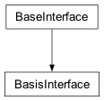Methods for accessing the basis of a solution.
- status = <cplex._internal._subinterfaces.BasisVarStatus object>¶
See
BasisVarStatus()
- __init__(parent)[source]¶
Creates a new BasisInterface.
The basis interface is exposed by the top-level
Cplexclass as Cplex.solution.basis. This constructor is not meant to be used externally.
- get_basis()[source]¶
Returns the status of structural and slack variables.
Returns a pair of lists of attributes of solution.basis.status. The first lists the status of the structural variables (of length equal to the number of variables), the second lists the status of the slack variables (of length equal to the number of linear constraints).
See CPXgetbase in the Callable Library Reference Manual for more detail.
Example usage:
>>> import cplex >>> c = cplex.Cplex() >>> out = c.set_results_stream(None) >>> out = c.set_log_stream(None) >>> c.read("lpex.mps") >>> c.solve() >>> pair_of_lists = c.solution.basis.get_basis()
- write(filename)[source]¶
Writes the basis to a file.
See CPXmbasewrite in the Callable Library Reference Manual and also
InitialInterface.read_basis().Example:
>>> import cplex >>> c = cplex.Cplex() >>> out = c.set_results_stream(None) >>> out = c.set_log_stream(None) >>> c.read("lpex.mps") >>> c.solve() >>> c.solution.basis.write("lpex.bas")
- get_header()[source]¶
Returns the basis header.
Returns a pair (head, x), where head is a list of variable indices and x is a list of floats indicating the values of those variables. Indices of basic slacks are specified by -rowindex - 1.
- get_basic_row_index(row)[source]¶
Returns the position of a basic slack variable in the basis header.
Example usage:
>>> import cplex >>> c = cplex.Cplex() >>> out = c.set_results_stream(None) >>> out = c.set_log_stream(None) >>> c.read("example.mps") >>> c.solve() >>> c.solution.basis.get_basic_row_index(2) 3
- get_basic_col_index(col)[source]¶
Returns the position of a basic structural variable in the basis header.
Example usage:
>>> import cplex >>> c = cplex.Cplex() >>> out = c.set_results_stream(None) >>> out = c.set_log_stream(None) >>> c.read("example.mps") >>> c.solve() >>> c.solution.basis.get_basic_col_index(2) 1
- get_primal_norms()[source]¶
Returns norms from the primal steepest edge.
Example usage:
>>> import cplex >>> c = cplex.Cplex() >>> out = c.set_results_stream(None) >>> out = c.set_log_stream(None) >>> c.read("example.mps") >>> c.parameters.preprocessing.presolve.set(c.parameters.preprocessing.presolve.values.off) >>> c.parameters.simplex.pgradient.set(c.parameters.simplex.pgradient.values.steep) >>> c.parameters.lpmethod.set(c.parameters.lpmethod.values.primal) >>> c.solve() >>> pnorm = c.solution.basis.get_primal_norms() >>> for i, j in zip(pnorm[1], [1.722656, 1.691406, 2.0, 1.062499]): ... abs(i - j) < 1e-6 ... True True True True
- get_dual_norms()[source]¶
Returns norms from the dual steepest edge.
Example usage:
>>> import cplex >>> c = cplex.Cplex() >>> out = c.set_results_stream(None) >>> out = c.set_log_stream(None) >>> c.read("example.mps") >>> c.parameters.lpmethod.set(c.parameters.lpmethod.values.dual) >>> c.solve() >>> c.solution.basis.get_dual_norms() ([1.0, 1.0, 1.0, 1.0], [1, 2, 3, -3])
- get_basis_dual_norms()[source]¶
Returns basis and dual norms.
Example usage:
>>> import cplex >>> c = cplex.Cplex() >>> out = c.set_results_stream(None) >>> out = c.set_log_stream(None) >>> c.read("example.mps") >>> c.parameters.lpmethod.set(c.parameters.lpmethod.values.dual) >>> c.solve() >>> c.solution.basis.get_basis_dual_norms() ([2, 1, 1, 1], [0, 0, 1, 0], [1.0, 1.0, 1.0, 1.0])
- class SensitivityInterface[source]¶
Bases:
BaseInterface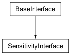Methods for sensitivity analysis.
- __init__(parent)[source]¶
Creates a new SensitivityInterface.
The sensitivity interface is exposed by the top-level
Cplexclass as Cplex.solution.sensitivity. This constructor is not meant to be used externally.
- lower_bounds(*args)[source]¶
Returns the sensitivity of a set of lower bounds.
Can be called by four forms.
>>> import cplex >>> c = cplex.Cplex() >>> out = c.set_results_stream(None) >>> out = c.set_log_stream(None) >>> c.read("example.mps") >>> c.solve() >>> c.solution.sensitivity.lower_bounds(1) (-1e+20, 17.5) >>> c.solution.sensitivity.lower_bounds('x3') (-1e+20, 42.5) >>> c.solution.sensitivity.lower_bounds(["x3", 0]) [(-1e+20, 42.5), (-1e+20, 40.0)] >>> c.solution.sensitivity.lower_bounds() [(-1e+20, 40.0), (-1e+20, 17.5), (-1e+20, 42.5), (-1e+20, 0.625)]
- upper_bounds(*args)[source]¶
Returns the sensitivity of a set of upper bounds.
Can be called by four forms.
>>> import cplex >>> c = cplex.Cplex() >>> out = c.set_results_stream(None) >>> out = c.set_log_stream(None) >>> c.read("example.mps") >>> c.solve() >>> c.solution.sensitivity.upper_bounds(1) (17.5, 1e+20) >>> c.solution.sensitivity.upper_bounds("x3") (42.5, 1e+20) >>> bupper = c.solution.sensitivity.upper_bounds(["x3", 0]) >>> for i, j in zip(bupper, [(42.5, 1e+20), (36.428571, 155.0)]): ... abs(i[0] - j[0]) < 1e-6 and abs(i[1]- j[1]) < 1e-6 ... True True >>> bupper = c.solution.sensitivity.upper_bounds() >>> for i, j in zip(bupper[3], (0.625, 1e+20)): ... abs(i - j) < 1e-6 ... True True
- bounds(*args)[source]¶
Returns the sensitivity of a set of both lower and upper bounds.
Can be called by four forms.
>>> import cplex >>> c = cplex.Cplex() >>> out = c.set_results_stream(None) >>> out = c.set_log_stream(None) >>> c.read("example.mps") >>> c.solve() >>> c.solution.sensitivity.bounds(1) (-1e+20, 17.5, 17.5, 1e+20) >>> c.solution.sensitivity.bounds("x3") (-1e+20, 42.5, 42.5, 1e+20) >>> c.solution.sensitivity.bounds(["x3", 1]) [(-1e+20, 42.5, 42.5, 1e+20), (-1e+20, 17.5, 17.5, 1e+20)] >>> bd = c.solution.sensitivity.bounds() >>> bd[1] (-1e+20, 17.5, 17.5, 1e+20)
- objective(*args)[source]¶
Returns the sensitivity of part of the objective function.
Can be called by four forms.
>>> import cplex >>> c = cplex.Cplex() >>> out = c.set_results_stream(None) >>> out = c.set_log_stream(None) >>> c.read("example.mps") >>> c.solve() >>> c.solution.sensitivity.objective(1) (-3.0, 5.0) >>> c.solution.sensitivity.objective("x3") (-1e+20, -2.0) >>> c.solution.sensitivity.objective(["x3", 1]) [(-1e+20, -2.0), (-3.0, 5.0)] >>> c.solution.sensitivity.objective() [(-1e+20, 2.5), (-3.0, 5.0), (-1e+20, -2.0), (0.0, 4.0)]
- rhs(*args)[source]¶
Returns the sensitivity of the righthand side of a set of linear constraints.
Can be called by four forms.
>>> import cplex >>> c = cplex.Cplex() >>> out = c.set_results_stream(None) >>> out = c.set_log_stream(None) >>> c.read("example.mps") >>> c.solve() >>> rhssa = c.solution.sensitivity.rhs(1) >>> for i, j in zip(rhssa, (20.0, 46.666666)): ... abs(i - j) < 1e-6 ... True True >>> c.solution.sensitivity.rhs("c3") (-1e+20, 112.5) >>> rhssa = c.solution.sensitivity.rhs(["c3", 1]) >>> for i, j in zip(rhssa, [(-1e+20, 112.5), (20.0, 46.666666)]): ... abs(i[0] - j[0]) < 1e-6 and abs(i[1]- j[1]) < 1e-6 ... True True >>> rhssa = c.solution.sensitivity.rhs() >>> for i, j in zip(rhssa[3], (-1e+20, 42.5)): ... abs(i - j) < 1e-6 ... True True
- class FilterType[source]¶
Bases:
ConstantClass
Attributes define the filter types.
- diversity = 1¶
- range = 2¶
- class SolnPoolFilterInterface[source]¶
Bases:
BaseInterface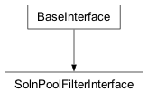Methods for solution pool filters.
- type = <cplex._internal._subinterfaces.FilterType object>¶
See
FilterType()
- __init__(parent)[source]¶
Creates a new SolnPoolFilterInterface.
The solution pool filter interface is exposed by the top-level
Cplexclass as Cplex.solution.pool.filter. This constructor is not meant to be used externally.
- add_diversity_filter(lb, ub, expression, weights=None, name='')[source]¶
Adds a diversity filter to the solution pool.
The arguments determine, in order,
the lower bound (float)
the upper bound (float)
the variables and values it takes as either a SparsePair or a list of two lists.
a set of weights (a list of floats with the same length as expression). If an empty list is given, then weights of 1.0 (one) will be used.
name (string)
Returns the index of the added diversity filter.
>>> import cplex >>> c = cplex.Cplex() >>> out = c.set_results_stream(None) >>> out = c.set_log_stream(None) >>> c.read("ind.lp") >>> c.solve() >>> c.solution.pool.filter.add_diversity_filter( ... 300, 600, [['x1','x2'], [1,1]], [2,1], "") 0
- add_range_filter(lb, ub, expression, name='')[source]¶
Adds a range filter to the solution pool.
The arguments determine, in order,
the lower bound (float)
the upper bound (float)
the variables and values it takes as either a SparsePair or a list of two lists.
name (string)
Returns the index of the added range filter.
>>> import cplex >>> c = cplex.Cplex() >>> out = c.set_results_stream(None) >>> out = c.set_log_stream(None) >>> c.read("ind.lp") >>> c.solve() >>> c.solution.pool.filter.add_range_filter( ... 300, 600, [['x1','x2'], [1,1]], "") 0
- get_diversity_filters(*args)[source]¶
Returns a set of diversity filters.
Returns filters as pairs of (SparsePair, weights), where weights is a list of floats.
Can be called by four forms.
>>> import cplex >>> c = cplex.Cplex() >>> indices = c.variables.add(names = ['x','y'], types = ["BB"]) >>> f = cplex.SparsePair(ind = ['x'],val = [1.0]) >>> [c.solution.pool.filter.add_diversity_filter( ... 0, 1, f, [1], str(i)) ... for i in range(2)] [0, 1] >>> c.solution.pool.filter.get_diversity_filters(0) (SparsePair(ind = [0], val = [1.0]), [1.0]) >>> c.solution.pool.filter.get_diversity_filters("1") (SparsePair(ind = [0], val = [1.0]), [1.0]) >>> c.solution.pool.filter.get_diversity_filters([0, "1"]) [(SparsePair(ind = [0], val = [1.0]), [1.0]), (SparsePair(ind = [0], val = [1.0]), [1.0])] >>> c.solution.pool.filter.get_diversity_filters() [(SparsePair(ind = [0], val = [1.0]), [1.0]), (SparsePair(ind = [0], val = [1.0]), [1.0])]
- get_range_filters(*args)[source]¶
Returns a set of range filters.
Returns filters as SparsePair instances.
Can be called by four forms.
>>> import cplex >>> c = cplex.Cplex() >>> indices = c.variables.add(names = ['x','y'], types = ["II"]) >>> f = cplex.SparsePair(ind = ['x'],val = [1.0]) >>> [c.solution.pool.filter.add_range_filter( ... 0.0, 1.0, f, str(i)) for i in range(2)] [0, 1] >>> c.solution.pool.filter.get_range_filters(0) SparsePair(ind = [0], val = [1.0]) >>> c.solution.pool.filter.get_range_filters("1") SparsePair(ind = [0], val = [1.0]) >>> c.solution.pool.filter.get_range_filters([0, "1"]) [SparsePair(ind = [0], val = [1.0]), SparsePair(ind = [0], val = [1.0])] >>> c.solution.pool.filter.get_range_filters() [SparsePair(ind = [0], val = [1.0]), SparsePair(ind = [0], val = [1.0])]
- get_bounds(*args)[source]¶
Returns (lb, ub) pairs for a set of filters.
Can be called by four forms.
>>> import cplex >>> c = cplex.Cplex() >>> indices = c.variables.add(names=['x', 'y'], types=["BB"]) >>> f = cplex.SparsePair(ind=['x'], val=[1.0]) >>> [c.solution.pool.filter.add_diversity_filter( ... 0, 1, f, [1], "div{0}".format(i)) for i in range(2)] [0, 1] >>> [c.solution.pool.filter.add_range_filter( ... 0, 1, f, "rng{0}".format(i)) for i in range(2)] [2, 3] >>> c.solution.pool.filter.get_bounds(0) (0.0, 1.0) >>> c.solution.pool.filter.get_bounds("rng0") (0.0, 1.0) >>> c.solution.pool.filter.get_bounds(["div0", 2]) [(0.0, 1.0), (0.0, 1.0)] >>> c.solution.pool.filter.get_bounds() [(0.0, 1.0), (0.0, 1.0), (0.0, 1.0), (0.0, 1.0)]
- get_num_nonzeros(*args)[source]¶
Returns the number of variables specified by a set of filters.
Can be called by four forms.
>>> import cplex >>> c = cplex.Cplex() >>> indices = c.variables.add(names=['x', 'y'], types=["BB"]) >>> f = cplex.SparsePair(ind=['x'], val=[1.0]) >>> [c.solution.pool.filter.add_diversity_filter( ... 0, 1, f, [1], "div{0}".format(i)) for i in range(2)] [0, 1] >>> [c.solution.pool.filter.add_range_filter( ... 0, 1, f, "rng{0}".format(i)) for i in range(2)] [2, 3] >>> c.solution.pool.filter.get_num_nonzeros(0) 1 >>> c.solution.pool.filter.get_num_nonzeros("rng0") 1 >>> c.solution.pool.filter.get_num_nonzeros(["div0", 2]) [1, 1] >>> c.solution.pool.filter.get_num_nonzeros() [1, 1, 1, 1]
- delete(*args)[source]¶
Deletes filters from the problem.
There are four forms by which filters.delete may be called.
- filters.delete()
deletes all filters from the problem.
- filters.delete(i)
i must be a filter name or index. Deletes the filter whose index or name is i.
- filters.delete(s)
s must be a sequence of filter names or indices. Deletes the filters with names or indices contained within s. Equivalent to [filters.delete(i) for i in s].
- filters.delete(begin, end)
begin and end must be filter indices or filter names. Deletes the filters with indices between begin and end, inclusive of end. Equivalent to filters.delete(range(begin, end + 1)). This will give the best performance when deleting batches of filters.
See CPXdelsolnpoolfilters in the Callable Library Reference Manual for more detail.
Example usage:
>>> import cplex >>> c = cplex.Cplex() >>> indices = c.variables.add(names=['x', 'y'], types=['II']) >>> f = cplex.SparsePair(ind=['x'], val=[1.0]) >>> [c.solution.pool.filter.add_range_filter( ... 0.0, 1.0, f, str(i)) for i in range(10)] [0, 1, 2, 3, 4, 5, 6, 7, 8, 9] >>> c.solution.pool.filter.get_num() 10 >>> c.solution.pool.filter.delete(8) >>> c.solution.pool.filter.get_names() ['0', '1', '2', '3', '4', '5', '6', '7', '9'] >>> c.solution.pool.filter.delete('1', 3) >>> c.solution.pool.filter.get_names() ['0', '4', '5', '6', '7', '9'] >>> c.solution.pool.filter.delete([2, '0', 5]) >>> c.solution.pool.filter.get_names() ['4', '6', '7'] >>> c.solution.pool.filter.delete() >>> c.solution.pool.filter.get_names() []
- get_types(*args)[source]¶
Returns the types of a set of filters.
Can be called by four forms.
>>> import cplex >>> c = cplex.Cplex() >>> indices = c.variables.add(names = ['x','y'], types = ["II"]) >>> f = cplex.SparsePair(ind = ['x'],val = [1.0]) >>> [c.solution.pool.filter.add_range_filter( ... 0.0, 1.0, f, str(i)) for i in range(10)] [0, 1, 2, 3, 4, 5, 6, 7, 8, 9] >>> c.solution.pool.filter.get_types(3) 2 >>> c.solution.pool.filter.get_types("5") 2 >>> c.solution.pool.filter.get_types([2, "8"]) [2, 2] >>> c.solution.pool.filter.get_types() [2, 2, 2, 2, 2, 2, 2, 2, 2, 2]
- get_names(*args)[source]¶
Returns the names of filters, given their indices.
There are four forms by which solution.pool.filter.get_names may be called.
- solution.pool.filter.get_names()
return the names of all solution pool filters from the problem.
- solution.pool.filter.get_names(i)
i must be a solution filter index. Returns the name of row i.
- solution.pool.filter.get_names(s)
s must be a sequence of row indices. Returns the names of the solution pool filters with indices the members of s. Equivalent to [solution.pool.filter.get_names(i) for i in s]
- solution.pool.filter.get_names(begin, end)
begin and end must be solution filter indices. Returns the names of the solution pool filter with indices between begin and end, inclusive of end. Equivalent to solution.pool.filter.get_names(range(begin, end + 1)).
>>> import cplex >>> c = cplex.Cplex() >>> indices = c.variables.add(names = ['x','y'], types = ["II"]) >>> f = cplex.SparsePair(ind = ['x'],val = [1.0]) >>> [c.solution.pool.filter.add_range_filter( ... 0.0, 1.0, f, str(i)) for i in range(10)] [0, 1, 2, 3, 4, 5, 6, 7, 8, 9] >>> c.solution.pool.filter.get_names() ['0', '1', '2', '3', '4', '5', '6', '7', '8', '9'] >>> c.solution.pool.filter.get_names(6) '6' >>> c.solution.pool.filter.get_names([5, 3]) ['5', '3'] >>> c.solution.pool.filter.get_names(3, 5) ['3', '4', '5']
- write(filename)[source]¶
Writes the filters to a file.
Example usage:
>>> import cplex >>> c = cplex.Cplex() >>> out = c.set_results_stream(None) >>> out = c.set_log_stream(None) >>> c.read("ind.lp") >>> c.solve() >>> c.solution.pool.filter.add_range_filter( ... 300, 600, [['x1','x2'], [1,1]], "") 0 >>> c.solution.pool.filter.write("ind.flt")
- read(filename)[source]¶
Reads filters from a file.
Example usage:
>>> import cplex >>> c = cplex.Cplex() >>> out = c.set_results_stream(None) >>> out = c.set_log_stream(None) >>> c.read("ind.lp") >>> c.solve() >>> c.solution.pool.filter.add_range_filter( ... 300, 600, [['x1','x2'], [1,1]], "") 0 >>> c.solution.pool.filter.write("ind.flt") >>> c.solution.pool.filter.read("ind.flt")
- get_num()[source]¶
Returns the number of filters in the problem.
Example usage:
>>> import cplex >>> c = cplex.Cplex() >>> out = c.set_results_stream(None) >>> out = c.set_log_stream(None) >>> c.read("ind.lp") >>> c.solve() >>> c.solution.pool.filter.add_range_filter( ... 300, 600, [['x1','x2'], [1,1]], "") 0 >>> c.solution.pool.filter.get_num() 1
- class QualityMetric[source]¶
Bases:
ConstantClass
Measures of solution quality.
- max_primal_infeasibility = 1¶
- max_scaled_primal_infeasibility = 2¶
- sum_primal_infeasibilities = 3¶
- sum_scaled_primal_infeasibilities = 4¶
- max_dual_infeasibility = 5¶
- max_scaled_dual_infeasibility = 6¶
- sum_dual_infeasibilities = 7¶
- sum_scaled_dual_infeasibilities = 8¶
- max_int_infeasibility = 9¶
- sum_integer_infeasibilities = 10¶
- max_primal_residual = 11¶
- max_scaled_primal_residual = 12¶
- sum_primal_residual = 13¶
- sum_scaled_primal_residual = 14¶
- max_dual_residual = 15¶
- max_scaled_dual_residual = 16¶
- sum_dual_residual = 17¶
- sum_scaled_dual_residual = 18¶
- max_comp_slack = 19¶
- sum_comp_slack = 21¶
- max_x = 23¶
- max_scaled_x = 24¶
- max_pi = 25¶
- max_scaled_pi = 26¶
- max_slack = 27¶
- max_scaled_slack = 28¶
- max_reduced_cost = 29¶
- max_scaled_reduced_cost = 30¶
- sum_x = 31¶
- sum_scaled_x = 32¶
- sum_pi = 33¶
- sum_scaled_pi = 34¶
- sum_slack = 35¶
- sum_scaled_slack = 36¶
- sum_reduced_cost = 37¶
- sum_scaled_reduced_cost = 38¶
- kappa = 39¶
- objective_gap = 40¶
- dual_objective = 41¶
- primal_objective = 42¶
- max_quadratic_primal_residual = 43¶
- sum_quadratic_primal_residual = 44¶
- max_quadratic_slack_infeasibility = 45¶
- sum_quadratic_slack_infeasibility = 46¶
- max_quadratic_slack = 47¶
- sum_quadratic_slack = 48¶
- max_indicator_slack_infeasibility = 49¶
- sum_indicator_slack_infeasibility = 50¶
- max_pwl_slack_infeasibility = 58¶
- sum_pwl_slack_infeasibility = 59¶
- exact_kappa = 51¶
- kappa_stable = 52¶
- kappa_suspicious = 53¶
- kappa_unstable = 54¶
- kappa_illposed = 55¶
- kappa_max = 56¶
- kappa_attention = 57¶
- class QualityMetrics[source]¶
Bases:
objectA class containing measures of the quality of a solution.
The __str__ method of this class prints all available measures of the quality of the solution in human readable form.
This class may have a different set of data members depending on the optimization algorithm used and the quality metrics that are available.
An instance of this class always has the member quality_type, which is one of the following strings:
“feasopt”
“simplex”
“quadratically_constrained”
“barrier”
“MIP”
If self.quality_type is “feasopt” this instance has the following members:
scaled
max_x
max_bound_infeas
max_Ax_minus_b
max_slack
If self.scaled is 1, this instance also has the members:
max_scaled_x
max_scaled_bound_infeas
max_scaled_Ax_minus_b
max_scaled_slack
If self.quality_type is “simplex” this instance has the following members:
scaled
max_x
max_pi
max_reduced_cost
max_bound_infeas
max_reduced_cost_infeas
max_Ax_minus_b
max_c_minus_Bpi
max_slack
If self.scaled is 1, this instance also has the members:
max_scaled_x
max_scaled_pi
max_scaled_reduced_cost
max_scaled_bound_infeas
max_scaled_reduced_cost_infeas
max_scaled_Ax_minus_b
max_scaled_c_minus_Bpi
max_scaled_slack
If the condition number of the final basis is available, this instance has the member:
kappa
If self.quality_type is “quadratically_constrained” this instance has the following members:
objective
norm_total
norm_max
error_Ax_b_total
error_Ax_b_max
error_xQx_dx_f_total
error_xQx_dx_f_max
x_bound_error_total
x_bound_error_max
slack_bound_error_total
slack_bound_error_max
quadratic_slack_bound_error_total
quadratic_slack_bound_error_max
normalized_error_max
If self.quality_type is “barrier” this instance has the following members:
primal_objective
dual_objective
duality_gap
complementarity_total
column_complementarity_total
column_complementarity_max
row_complementarity_total
row_complementarity_max
primal_norm_total
primal_norm_max
dual_norm_total
dual_norm_max
primal_error_total
primal_error_max
dual_error_total
dual_error_max
primal_x_bound_error_total
primal_x_bound_error_max
primal_slack_bound_error_total
primal_slack_bound_error_max
dual_pi_bound_error_total
dual_pi_bound_error_max
dual_reduced_cost_bound_error_total
dual_reduced_cost_bound_error_max
primal_normalized_error
dual_normalized_error
If self.quality_type is “MIP” and this instance was generated for a specific member of the solution pool, it has the members:
solution_name
num_solutions
If self.quality_type is “MIP”, this instance was not generated for a specific member of the solution pool, and kappa statistics are available, it has the members:
max_kappa
pct_kappa_stable
pct_kappa_suspicious
pct_kappa_unstable
pct_kappa_illposed
kappa_attention
If self.quality_type is “MIP” and this instance was generated for the incumbent solution, it has the members:
solver
objective
x_norm_total
x_norm_max
error_Ax_b_total
error_Ax_b_max
x_bound_error_total
x_bound_error_max
integrality_error_total
integrality_error_max
slack_bound_error_total
slack_bound_error_max
If in addition the problem this instance was generated for has indicator constraints, it has the members:
indicator_slack_bound_error_total
indicator_slack_bound_error_max
if in addition the problem this instance was generated for has piecewise linear constraints, it has the members:
piecewise_linear_error_total
piecewise_linear_error_max
If solver is “MIQCP” this instance also has the members:
error_xQx_dx_f_total
error_xQx_dx_f_max
quadratic_slack_bound_error_total
quadratic_slack_bound_error_max
See also
SolutionInterface.get_quality_metricsandSolnPoolInterface.get_quality_metrics.
- class SolnPoolInterface[source]¶
Bases:
BaseInterface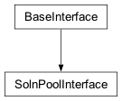Methods for accessing the solution pool.
- incumbent = -1¶
See
_constants.CPX_INCUMBENT_ID
- quality_metric = <cplex._internal._subinterfaces.QualityMetric object>¶
See
QualityMetric()
- __init__(parent)[source]¶
Creates a new SolnPoolInterface.
The solution pool interface is exposed by the top-level
Cplexclass as Cplex.solution.pool. This constructor is not meant to be used externally.
- filter¶
- get_objective_value(soln)[source]¶
Returns the objective value for a member of the solution pool.
Example usage:
>>> import cplex >>> c = cplex.Cplex() >>> out = c.set_results_stream(None) >>> out = c.set_log_stream(None) >>> c.read("ind.lp") >>> c.solve() >>> obj_val = c.solution.pool.get_objective_value(0) >>> abs(obj_val - 499.0) < 1e-6 True
- get_values(soln, *args)[source]¶
Returns the values of a set of variables for a given solution.
Can be called by four forms.
>>> import cplex >>> c = cplex.Cplex() >>> c.parameters.randomseed.set(1) >>> out = c.set_results_stream(None) >>> out = c.set_log_stream(None) >>> c.read("ind.lp") >>> c.solve() >>> v1 = c.solution.pool.get_values(1, 2) >>> v2 = c.solution.pool.get_values(1, "x2") >>> somevals = c.solution.pool.get_values(1, [2, "x2"]) >>> v1 == somevals[0], v2 == somevals[1] (True, True) >>> allvals = c.solution.pool.get_values(1) >>> v1 == allvals[2] True
- get_linear_slacks(soln, *args)[source]¶
Returns a set of linear slacks for a given solution.
Can be called by four forms.
>>> import cplex >>> c = cplex.Cplex() >>> out = c.set_results_stream(None) >>> out = c.set_log_stream(None) >>> c.read("ind.lp") >>> c.solve() >>> s1 = c.solution.pool.get_linear_slacks(1, 1) >>> s2 = c.solution.pool.get_linear_slacks(1, "c2") >>> someslacks = c.solution.pool.get_linear_slacks(1, [1, "c2"]) >>> s1 == someslacks[0], s2 == someslacks[1] (True, True) >>> allslacks = c.solution.pool.get_linear_slacks(1) >>> s1 == allslacks[1] True
- get_quadratic_slacks(soln, *args)[source]¶
Returns a set of quadratic slacks for a given solution.
Can be called by four forms.
>>> import cplex >>> c = cplex.Cplex() >>> c.parameters.randomseed.set(1) >>> out = c.set_results_stream(None) >>> out = c.set_log_stream(None) >>> c.read("miqcp.lp") >>> c.solve() >>> var = c.solution.pool.get_quadratic_slacks(1, 1) >>> var = c.solution.pool.get_quadratic_slacks(1, "QC3") >>> vars = c.solution.pool.get_quadratic_slacks(1, ["QC3", 1]) >>> vars = c.solution.pool.get_quadratic_slacks(1)
- get_integer_quality(soln, which)[source]¶
Returns the integer quality of a given solution.
The integer quality of a solution can either be a single attribute of solution.pool.quality_metrics or a sequence of such attributes.
- Note
This corresponds to the CPLEX callable library function CPXgetsolnpoolintquality.
>>> import cplex >>> c = cplex.Cplex() >>> out = c.set_results_stream(None) >>> out = c.set_log_stream(None) >>> c.read("ind.lp") >>> c.solve() >>> quality_metric = c.solution.pool.quality_metric >>> misi = quality_metric.max_indicator_slack_infeasibility >>> c.solution.pool.get_integer_quality(1, misi) 0
- get_float_quality(soln, which)[source]¶
Returns the float quality of a given solution.
The float quality of a solution can either be a single attribute of solution.pool.quality_metrics or a sequence of such attributes.
- Note
This corresponds to the CPLEX callable library function CPXgetsolnpooldblquality.
>>> import cplex >>> c = cplex.Cplex() >>> out = c.set_results_stream(None) >>> out = c.set_log_stream(None) >>> c.read("ind.lp") >>> c.solve() >>> qual = c.solution.pool.get_float_quality(1, c.solution.pool.quality_metric.max_indicator_slack_infeasibility) >>> abs(qual) < 1.e-6 True
- get_mean_objective_value()[source]¶
Returns the average among the objective values in the solution pool.
Example usage:
>>> import cplex >>> c = cplex.Cplex() >>> c.parameters.randomseed.set(1) >>> out = c.set_results_stream(None) >>> out = c.set_log_stream(None) >>> c.read("ind.lp") >>> c.solve() >>> mov = c.solution.pool.get_mean_objective_value()
- delete(*args)[source]¶
Deletes solutions from the solution pool.
There are four forms by which pool.delete may be called.
- pool.delete()
deletes all solutions from the problem.
- pool.delete(i)
i must be a solution name or index. Deletes the solution whose index or name is i.
- pool.delete(s)
s must be a sequence of solution names or indices. Deletes the solutions with names or indices contained within s. Equivalent to [pool.delete(i) for i in s].
- pool.delete(begin, end)
begin and end must be solution indices or solution names. Deletes the solutions with indices between begin and end, inclusive of end. Equivalent to pool.delete(range(begin, end + 1)). This will give the best performance when deleting batches of solutions from the solution pool.
See CPXdelsolnpoolsolns in the Callable Library Reference Manual for more detail.
Example usage:
>>> import cplex >>> c = cplex.Cplex() >>> out = c.set_results_stream(None) >>> out = c.set_log_stream(None) >>> c.read("ind.lp") >>> c.parameters.randomseed.set(1) >>> c.parameters.mip.limits.populate.set(5) >>> c.populate_solution_pool() >>> names = c.solution.pool.get_names() >>> c.solution.pool.delete(1) >>> n = c.solution.pool.get_names() >>> del names[1] >>> n == names True >>> c.solution.pool.delete(names[1]) >>> n = c.solution.pool.get_names() >>> names.remove(names[1]) >>> n == names True >>> c.solution.pool.delete([names[1], 0]) >>> n = c.solution.pool.get_names() >>> names.remove(names[1]) >>> del names[0] >>> n == names True >>> c.solution.pool.delete() >>> c.solution.pool.get_names() []
- get_names(*args)[source]¶
Returns the names of a set of solutions.
There are four forms by which solution.pool.get_names may be called.
- solution.pool.get_names()
return the names of all solutions from the problem.
- solution.pool.get_names(i)
i must be a solution index. Returns the name of row i.
- solution.pool.get_names(s)
s must be a sequence of row indices. Returns the names of the solutions with indices the members of s. Equivalent to [solution.pool.get_names(i) for i in s]
- solution.pool.get_names(begin, end)
begin and end must be solution indices. Returns the names of the solutions with indices between begin and end, inclusive of end. Equivalent to solution.pool.get_names(range(begin, end + 1)).
>>> import cplex >>> c = cplex.Cplex() >>> out = c.set_results_stream(None) >>> out = c.set_log_stream(None) >>> c.read("ind.lp") >>> c.parameters.randomseed.set(1) >>> c.parameters.mip.limits.populate.set(10) >>> c.populate_solution_pool() >>> names = c.solution.pool.get_names() >>> names[1] == c.solution.pool.get_names(1) True >>> [names[i] for i in [1,2]] == c.solution.pool.get_names([1,2]) True >>> names[1:5] == c.solution.pool.get_names(1, 4) True
- get_num_replaced()[source]¶
Returns the number of solution pool members that have been replaced.
Example usage:
>>> import cplex >>> c = cplex.Cplex() >>> out = c.set_results_stream(None) >>> out = c.set_log_stream(None) >>> c.read("ind.lp") >>> c.solve() >>> c.solution.pool.get_num_replaced() 0
- get_num()[source]¶
Returns the number of solutions in the solution pool.
Example usage:
>>> import cplex >>> c = cplex.Cplex() >>> c.parameters.randomseed.set(1) >>> out = c.set_results_stream(None) >>> out = c.set_log_stream(None) >>> c.read("ind.lp") >>> c.solve() >>> num = c.solution.pool.get_num()
- write(filename, which=None)[source]¶
Writes solutions to a file.
If no second argument is provided, all solutions are written to file.
If a second argument is provided, it is the index of a solution in the solution pool. Only that solution will be written to file.
>>> import cplex >>> c = cplex.Cplex() >>> out = c.set_results_stream(None) >>> out = c.set_log_stream(None) >>> c.read("ind.lp") >>> c.parameters.randomseed.set(1) >>> c.parameters.mip.limits.populate.set(10) >>> c.populate_solution_pool() >>> c.solution.pool.write("ind.sol",4)
- get_quality_metrics(soln)[source]¶
Returns an object containing measures of the quality of the specified solution.
See
QualityMetrics.Example usage:
>>> import cplex >>> c = cplex.Cplex() >>> c.parameters.randomseed.set(1) >>> out = c.set_results_stream(None) >>> out = c.set_log_stream(None) >>> c.read("ind.lp") >>> c.solve() >>> qm = c.solution.pool.get_quality_metrics(0)
- class AdvancedSolutionInterface[source]¶
Bases:
BaseInterface
Advanced methods for accessing solution information.
Example usage:
>>> import cplex >>> c = cplex.Cplex() >>> out = c.set_results_stream(None) >>> out = c.set_log_stream(None) >>> c.read("lpex.mps") >>> c.solve() >>> binvcol = c.solution.advanced.binvcol() >>> binvrow = c.solution.advanced.binvrow() >>> binvacol = c.solution.advanced.binvacol() >>> binvarow = c.solution.advanced.binvarow() >>> binvcol[0][24], binvcol[1][6] (-0.215, 1.0) >>> binvrow[24][0], binvrow[6][1] (-0.215, 1.0) >>> [x for i,x in enumerate(binvacol[0]) if i in range(0,3)], [x for i,x in enumerate(binvacol[1]) if i in range(0,3)] ([1.0, 0.0, 0.0], [0.0, 1.0, 0.0]) >>> [x for i,x in enumerate(binvarow[0]) if i in range(0,2)], [x for i,x in enumerate(binvarow[1]) if i in range(0,2)], [x for i,x in enumerate(binvarow[2]) if i in range(0,2)] ([1.0, 0.0], [0.0, 1.0], [0.0, 0.0]) >>> btran = c.solution.advanced.btran([1.0] * c.linear_constraints.get_num()) >>> bbtran = [x if x else 0.0 for i,x in enumerate(btran) if i in range(14,17)] >>> [x if x else 0.0 for x in bbtran] [0.0, 2.0, 1.0] >>> ftran = c.solution.advanced.ftran([1.0] * c.linear_constraints.get_num()) >>> ftran[0] 2.891
- __init__(parent)[source]¶
Creates a new AdvancedSolutionInterface.
The advanced solution interface is exposed by the top-level
Cplexclass as Cplex.solution.advanced. This constructor is not meant to be used externally.
- binvcol(*args)[source]¶
Returns a set of columns of the inverted basis matrix.
Can be called by four forms.
- solution.advanced.binvcol()
returns the inverted basis matrix as a list of columns.
- solution.advanced.binvcol(i)
i must be a linear constraint name or index. Returns the column of the inverted basis matrix associated with i.
- solution.advanced.binvcol(s)
s must be a sequence of linear constraint names or indices. Returns the columns of the inverted basis matrix associated with the members of s. Equivalent to [solution.advanced.binvcol(i) for i in s]
- solution.advanced.binvcol(begin, end)
begin and end must be linear constraint indices or linear constraint names. Returns the columns of the inverted basis matrix associated with the linear constraints between begin and end, inclusive of end. Equivalent to solution.advanced.binvcol(range(begin, end + 1)).
>>> import cplex >>> c = cplex.Cplex() >>> out = c.set_results_stream(None) >>> out = c.set_log_stream(None) >>> c.read("lpex.mps") >>> c.solve() >>> binvcol = c.solution.advanced.binvcol() >>> binvcol[0][24], binvcol[1][6] (-0.215, 1.0)
- binvrow(*args)[source]¶
Returns a set of rows of the inverted basis matrix.
Can be called by four forms.
- solution.advanced.binvrow()
returns the inverted basis matrix as a list of rows.
- solution.advanced.binvrow(i)
i must be a linear constraint name or index. Returns the row of the inverted basis matrix associated with i.
- solution.advanced.binvrow(s)
s must be a sequence of linear constraint names or indices. Returns the rows of the inverted basis matrix associated with the members of s. Equivalent to [solution.advanced.binvrow(i) for i in s]
- solution.advanced.binvrow(begin, end)
begin and end must be linear constraint indices or linear constraint names. Returns the rows of the inverted basis matrix associated with the linear constraints between begin and end, inclusive of end. Equivalent to solution.advanced.binvrow(range(begin, end + 1)).
>>> import cplex >>> c = cplex.Cplex() >>> out = c.set_results_stream(None) >>> out = c.set_log_stream(None) >>> c.read("lpex.mps") >>> c.solve() >>> binvrow = c.solution.advanced.binvrow() >>> binvrow[24][0], binvrow[6][1] (-0.215, 1.0)
- binvacol(*args)[source]¶
Returns a set of columns of the tableau.
Can be called by four forms.
- solution.advanced.binvacol()
returns the tableau as a list of columns.
- solution.advanced.binvacol(i)
i must be a variable name or index. Returns the column of the tableau associated with i.
- solution.advanced.binvacol(s)
s must be a sequence of variable names or indices. Returns the columns of the tableau associated with the members of s. Equivalent to [solution.advanced.binvacol(i) for i in s]
- solution.advanced.binvacol(begin, end)
begin and end must be variable indices or variable names. Returns the columns of the tableau associated with the variables between begin and end, inclusive of end. Equivalent to solution.advanced.binvacol(range(begin, end + 1)).
>>> import cplex >>> c = cplex.Cplex() >>> out = c.set_results_stream(None) >>> out = c.set_log_stream(None) >>> c.read("lpex.mps") >>> c.solve() >>> binvacol = c.solution.advanced.binvacol() >>> [x for i,x in enumerate(binvacol[0]) if i in range(0,3)], [x for i,x in enumerate(binvacol[1]) if i in range(0,3)] ([1.0, 0.0, 0.0], [0.0, 1.0, 0.0])
- binvarow(*args)[source]¶
Returns a set of rows of the tableau.
Can be called by four forms.
- solution.advanced.binvacol()
returns the tableau as a list of rows.
- solution.advanced.binvacol(i)
i must be a linear constraint name or index. Returns the row of the tableau associated with i.
- solution.advanced.binvacol(s)
s must be a sequence of linear constraint names or indices. Returns the rows of the tableau associated with the members of s. Equivalent to [solution.advanced.binvacol(i) for i in s]
- solution.advanced.binvacol(begin, end)
begin and end must be linear constraint indices or variable names. Returns the rows of the tableau associated with the variables between begin and end, inclusive of end. Equivalent to solution.advanced.binvacol(range(begin, end + 1)).
>>> import cplex >>> c = cplex.Cplex() >>> out = c.set_results_stream(None) >>> out = c.set_log_stream(None) >>> c.read("lpex.mps") >>> c.solve() >>> binvarow = c.solution.advanced.binvarow() >>> [x for i,x in enumerate(binvarow[0]) if i in range(0,2)], [x for i,x in enumerate(binvarow[1]) if i in range(0,2)], [x for i,x in enumerate(binvarow[2]) if i in range(0,2)] ([1.0, 0.0], [0.0, 1.0], [0.0, 0.0])
- btran(y)[source]¶
Performs a backward linear solve using the basis matrix.
Returns the solution to the linear system
x^T B = y^T
y must be a list of floats with length equal to the number of linear constraints.
>>> import cplex >>> c = cplex.Cplex() >>> out = c.set_results_stream(None) >>> out = c.set_log_stream(None) >>> c.read("lpex.mps") >>> c.solve() >>> btran = c.solution.advanced.btran([1.0] * c.linear_constraints.get_num()) >>> bbtran = [x if x else 0.0 for i,x in enumerate(btran) if i in range(14,17)] >>> [x if x else 0.0 for x in bbtran] [0.0, 2.0, 1.0]
- ftran(x)[source]¶
Performs a linear solve using the basis matrix.
Returns the solution to the linear system
B x = y
y must be a list of floats with length equal to the number of linear constraints.
>>> import cplex >>> c = cplex.Cplex() >>> out = c.set_results_stream(None) >>> out = c.set_log_stream(None) >>> c.read("lpex.mps") >>> c.solve() >>> ftran = c.solution.advanced.ftran([1.0] * c.linear_constraints.get_num()) >>> ftran[0] 2.891
- get_gradients(*args)[source]¶
Returns information useful in post-solution analysis after an LP has been solved and a basis is available.
See CPXgetgrad in the Callable Library Reference Manual for more detail.
>>> import cplex >>> c = cplex.Cplex() >>> out = c.set_results_stream(None) >>> out = c.set_log_stream(None) >>> c.read("lpex.mps") >>> c.solve() >>> grad = c.solution.advanced.get_gradients(1) >>> grad.ind[1] 1 >>> grad.val[1] 1.0
- get_linear_slacks_from_x(x)[source]¶
Computes the slack values from the given solution x
Example usage:
>>> import cplex >>> c = cplex.Cplex() >>> out = c.set_results_stream(None) >>> out = c.set_log_stream(None) >>> c.read("lpex.mps") >>> c.solve() >>> slack = c.solution.advanced.get_linear_slacks_from_x(c.solution.get_values()) >>> abs(slack[3]) < 1e-6 True
- get_quadratic_slacks_from_x(x)[source]¶
Computes the slack values for quadratic constraints from the given solution x
Example usage:
>>> import cplex >>> c = cplex.Cplex() >>> out = c.set_results_stream(None) >>> out = c.set_log_stream(None) >>> c.read("qcp.lp") >>> c.solve() >>> qslack = c.solution.advanced.get_quadratic_slacks_from_x(c.solution.get_values()) >>> abs(qslack[0]) < 1e-6 True
- get_linear_reduced_costs_from_pi(pi)[source]¶
Computes the reduced costs from the given dual solution pi
Example usage:
>>> import cplex >>> c = cplex.Cplex() >>> out = c.set_results_stream(None) >>> out = c.set_log_stream(None) >>> c.read("lpex.mps") >>> c.solve() >>> reducedcost = c.solution.advanced.get_linear_reduced_costs_from_pi( c.solution.get_dual_values()) >>> abs(reducedcost[0]) < 1e-6 True
- get_quadratic_reduced_costs_from_pi(pi, x)[source]¶
Computes the reduced costs for QP from the given solution (pi, x)
Example usage:
>>> import cplex >>> c = cplex.Cplex() >>> out = c.set_results_stream(None) >>> out = c.set_log_stream(None) >>> c.read("qp.lp") >>> c.solve() >>> qreducedcost = c.solution.advanced.get_quadratic_reduced_costs_from_pi( c.solution.get_dual_values(), c.solution.get_values()) >>> abs(qreducedcost[0]) < 1e-6 True
- get_Driebeek_penalties(basic_variables)[source]¶
Returns values known as Driebeek penalties for a sequence of basic variables.
Example usage:
>>> import cplex >>> c = cplex.Cplex() >>> out = c.set_results_stream(None) >>> out = c.set_log_stream(None) >>> c.read("lpex.mps") >>> c.solve() >>> c_stat, _ = c.solution.basis.get_basis() >>> b = [i for i, v in enumerate(c_stat) if v == c.solution.basis.status.basic] >>> penalties = c.solution.advanced.get_Driebeek_penalties(b) >>> penalties[0] (0.34477142857142856, 8.021494102228047)
- get_quadratic_indefinite_certificate()[source]¶
Compute a vector x that satisfies x’Qx < 0
Such a vector demonstrates that the matrix Q violates the assumption of positive semi-definiteness, and can be an aid in debugging a user’s program if indefiniteness is an unexpected outcome.
>>> import cplex >>> c = cplex.Cplex() >>> out = c.set_results_stream(None) >>> out = c.set_log_stream(None) >>> c.read("qpindef.lp") >>> x = c.solution.advanced.get_quadratic_indefinite_certificate() >>> abs(-0.5547001 - x[1]) < 1e-6 True
- dual_farkas()[source]¶
Returns Farkas proof of infeasibility for the active LP model after proven infeasibility.
See CPXdualfarkas in the Callable Library Reference Manual for more detail.
>>> import cplex >>> c = cplex.Cplex() >>> out = c.set_results_stream(None) >>> out = c.set_log_stream(None) >>> indices = c.linear_constraints.add(senses="L", rhs=[-1]) >>> indices = c.variables.add(lb=[1], ub=[2],columns=[[[0],[1]]]) >>> c.parameters.lpmethod.set(c.parameters.lpmethod.values.dual) >>> c.parameters.preprocessing.presolve.set(c.parameters.preprocessing.presolve.values.off) >>> c.solve() >>> y = c.solution.advanced.dual_farkas() >>> y[1] 2.0
- get_diverging_index()[source]¶
Returns the index of the diverging row or column
if the problem is not unbounded, get_diverging_index returns -1.
If the problem is unbounded, get_diverging_index returns the index of the diverging variable in the augmented form of the constraint matrix. In other words, if the diverging variable is a structural variable, get_diverging_index returns its index; if the diverging variable is a slack or ranged variable, get_diverging_index returns the sum of the number of structural variables and the index of the corresponding constraint.
>>> import cplex >>> c = cplex.Cplex() >>> out = c.set_results_stream(None) >>> out = c.set_log_stream(None) >>> indices = c.variables.add(obj=[1,1],lb=[1,-cplex.infinity],ub=[2,cplex.infinity]) >>> c.parameters.lpmethod.set(c.parameters.lpmethod.values.primal) >>> c.parameters.preprocessing.presolve.set(c.parameters.preprocessing.presolve.values.off) >>> c.solve() >>> idx = c.solution.advanced.get_diverging_index() >>> idx 1 >>> c = cplex.Cplex() >>> out = c.set_results_stream(None) >>> out = c.set_log_stream(None) >>> indices = c.variables.add(obj=[-1,-1],lb=[1,1],ub=[2,2]) >>> indices = c.linear_constraints.add(lin_expr = [[[0,1],[-1,-1]]], rhs=[-10], senses="L") >>> c.parameters.lpmethod.set(c.parameters.lpmethod.values.dual) >>> c.parameters.preprocessing.presolve.set(c.parameters.preprocessing.presolve.values.off) >>> c.solve() >>> idx = c.solution.advanced.get_diverging_index() >>> idx 2
- get_ray()[source]¶
Returns an unbounded direction, i.e., ray, if a LP model is unbounded
Example usage:
>>> import cplex >>> c = cplex.Cplex() >>> out = c.set_results_stream(None) >>> out = c.set_log_stream(None) >>> c.read("unblp.lp") >>> c.parameters.preprocessing.presolve.set(c.parameters.preprocessing.presolve.values.off) >>> c.solve() >>> ray = c.solution.advanced.get_ray() >>> ray[0] -1.0
- class SolutionMethod[source]¶
Bases:
ConstantClass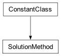Solution methods.
- none = -1¶
- primal = 1¶
- dual = 2¶
- barrier = 4¶
- feasopt = 11¶
- MIP = 12¶
- pivot = 10¶
- pivot_in = 8¶
- pivot_out = 9¶
- class SolutionStatus[source]¶
Bases:
ConstantClass
Solution status codes.
For documentation of each status code, see the reference manual of the CPLEX Callable Library, especially the group optim.cplex.callable.solutionstatus.
- unknown = 0¶
- optimal = 1¶
- unbounded = 2¶
- infeasible = 3¶
- feasible = 23¶
- infeasible_or_unbounded = 4¶
- optimal_infeasible = 5¶
- num_best = 6¶
- feasible_relaxed_sum = 14¶
- optimal_relaxed_sum = 15¶
- feasible_relaxed_inf = 16¶
- optimal_relaxed_inf = 17¶
- feasible_relaxed_quad = 18¶
- optimal_relaxed_quad = 19¶
- abort_obj_limit = 12¶
- abort_primal_obj_limit = 21¶
- abort_dual_obj_limit = 22¶
- first_order = 24¶
- abort_iteration_limit = 10¶
- abort_time_limit = 11¶
- abort_dettime_limit = 25¶
- abort_user = 13¶
- optimal_face_unbounded = 20¶
- conflict_feasible = 30¶
- conflict_minimal = 31¶
- conflict_abort_contradiction = 32¶
- conflict_abort_time_limit = 33¶
- conflict_abort_dettime_limit = 39¶
- conflict_abort_iteration_limit = 34¶
- conflict_abort_node_limit = 35¶
- conflict_abort_obj_limit = 36¶
- conflict_abort_memory_limit = 37¶
- conflict_abort_user = 38¶
- relaxation_unbounded = 133¶
- abort_relaxed = 126¶
- optimal_tolerance = 102¶
- solution_limit = 104¶
- populate_solution_limit = 128¶
- node_limit_feasible = 105¶
- node_limit_infeasible = 106¶
- fail_feasible = 109¶
- fail_infeasible = 110¶
- mem_limit_feasible = 111¶
- mem_limit_infeasible = 112¶
- fail_feasible_no_tree = 116¶
- fail_infeasible_no_tree = 117¶
- optimal_populated = 129¶
- optimal_populated_tolerance = 130¶
- benders_num_best = 41¶
- MIP_optimal = 101¶
- MIP_infeasible = 103¶
- MIP_time_limit_feasible = 107¶
- MIP_time_limit_infeasible = 108¶
- MIP_dettime_limit_feasible = 131¶
- MIP_dettime_limit_infeasible = 132¶
- MIP_abort_feasible = 113¶
- MIP_abort_infeasible = 114¶
- MIP_optimal_infeasible = 115¶
- MIP_unbounded = 118¶
- MIP_infeasible_or_unbounded = 119¶
- MIP_feasible_relaxed_sum = 120¶
- MIP_optimal_relaxed_sum = 121¶
- MIP_feasible_relaxed_inf = 122¶
- MIP_optimal_relaxed_inf = 123¶
- MIP_feasible_relaxed_quad = 124¶
- MIP_optimal_relaxed_quad = 125¶
- MIP_feasible = 127¶
- multiobj_optimal = 301¶
- multiobj_infeasible = 302¶
- multiobj_inforunbd = 303¶
- multiobj_non_optimal = 305¶
- multiobj_stopped = 306¶
- multiobj_unbounded = 304¶
- class SolutionType[source]¶
Bases:
ConstantClass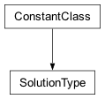Solution types
- none = 0¶
- basic = 1¶
- nonbasic = 2¶
- primal = 3¶
- class SolutionInterface[source]¶
Bases:
BaseInterface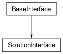Methods for querying the solution to an optimization problem.
- method = <cplex._internal._subinterfaces.SolutionMethod object>¶
See
SolutionMethod()
- quality_metric = <cplex._internal._subinterfaces.QualityMetric object>¶
See
QualityMetric()
- status = <cplex._internal._subinterfaces.SolutionStatus object>¶
See
SolutionStatus()
- type = <cplex._internal._subinterfaces.SolutionType object>¶
See
SolutionType()
- __init__(cplex)[source]¶
Creates a new SolutionInterface.
The solution interface is exposed by the top-level
Cplexclass as Cplex.solution. This constructor is not meant to be used externally.
- progress¶
- infeasibility¶
- MIP¶
- basis¶
See
BasisInterface()
- sensitivity¶
- pool¶
- advanced¶
- multiobj¶
- get_status()[source]¶
Returns the status of the solution.
Returns an attribute of Cplex.solution.status. For interpretations of the status codes, see the reference manual of the CPLEX Callable Library, especially the group optim.cplex.callable.solutionstatus
>>> import cplex >>> c = cplex.Cplex() >>> out = c.set_results_stream(None) >>> out = c.set_log_stream(None) >>> c.read("example.mps") >>> c.solve() >>> c.solution.get_status() 1
- get_method()[source]¶
Returns the method used to solve the problem.
Returns an attribute of Cplex.solution.method.
>>> import cplex >>> c = cplex.Cplex() >>> out = c.set_results_stream(None) >>> out = c.set_log_stream(None) >>> c.read("example.mps") >>> c.solve() >>> c.solution.get_method() 2
- get_status_string(status_code=None)[source]¶
Returns a string describing the status of the solution.
Example usage:
>>> import cplex >>> c = cplex.Cplex() >>> out = c.set_results_stream(None) >>> out = c.set_log_stream(None) >>> c.read("example.mps") >>> c.solve() >>> c.solution.get_status_string() 'optimal'
- get_objective_value()[source]¶
Returns the value of the objective function.
Example usage:
>>> import cplex >>> c = cplex.Cplex() >>> out = c.set_results_stream(None) >>> out = c.set_log_stream(None) >>> c.read("example.mps") >>> c.solve() >>> c.solution.get_objective_value() -202.5
- get_values(*args)[source]¶
Returns the values of a set of variables at the solution.
Can be called by four forms.
- solution.get_values()
return the values of all variables from the problem.
- solution.get_values(i)
i must be a variable name or index. Returns the value of the variable whose index or name is i.
- solution.get_values(s)
s must be a sequence of variable names or indices. Returns the values of the variables with indices the members of s. Equivalent to [solution.get_values(i) for i in s]
- solution.get_values(begin, end)
begin and end must be variable indices or variable names. Returns the values of the variables with indices between begin and end, inclusive of end. Equivalent to solution.get_values(range(begin, end + 1)).
>>> import cplex >>> c = cplex.Cplex() >>> out = c.set_results_stream(None) >>> out = c.set_log_stream(None) >>> c.read("lpex.mps") >>> c.solve() >>> c.solution.get_values([0, 4, 5]) [25.5, 0.0, 80.0]
- get_reduced_costs(*args)[source]¶
Returns the reduced costs of a set of variables.
The values returned by this method are defined to be the dual multipliers for bound constraints on the specified variables.
Can be called by four forms.
- solution.get_reduced_costs()
return the reduced costs of all variables from the problem.
- solution.get_reduced_costs(i)
i must be a variable name or index. Returns the reduced cost of the variable whose index or name is i.
- solution.get_reduced_costs(s)
s must be a sequence of variable names or indices. Returns the reduced costs of the variables with indices the members of s. Equivalent to [solution.get_reduced_costs(i) for i in s]
- solution.get_reduced_costs(begin, end)
begin and end must be variable indices or variable names. Returns the reduced costs of the variables with indices between begin and end, inclusive of end. Equivalent to solution.get_reduced_costs(range(begin, end + 1)).
>>> import cplex >>> c = cplex.Cplex() >>> out = c.set_results_stream(None) >>> out = c.set_log_stream(None) >>> c.read("lpex.mps") >>> c.solve() >>> c.solution.get_reduced_costs([0, 4, 5]) [0.0, 10.0, 0.0]
- get_dual_values(*args)[source]¶
Returns a set of dual values.
Note that the values returned by this function are not only meaningful for linear programs. Also for second order cone programs, they provide information about the dual solution. Refer to the user manual to see how to use the values returned by this function for second order cone programs.
Can be called by four forms.
- solution.get_dual_values()
return all dual values from the problem.
- solution.get_dual_values(i)
i must be a linear constraint name or index. Returns the dual value associated with the linear constraint whose index or name is i.
- solution.get_dual_values(s)
s must be a sequence of linear constraint names or indices. Returns the dual values associated with the linear constraints with indices the members of s. Equivalent to [solution.get_dual_values(i) for i in s]
- solution.get_dual_values(begin, end)
begin and end must be linear constraint indices or linear constraint names. Returns the dual values associated with the linear constraints with indices between begin and end, inclusive of end. Equivalent to solution.get_dual_values(range(begin, end + 1)).
>>> import cplex >>> c = cplex.Cplex() >>> out = c.set_results_stream(None) >>> out = c.set_log_stream(None) >>> c.read("lpex.mps") >>> c.solve() >>> pi = c.solution.get_dual_values([0, 1]) >>> for i, j in zip(pi, [-0.628571, 0.0]): ... abs(i - j) < 1e-6 ... True True
- get_quadratic_dualslack(*args)[source]¶
Returns the dual slack for a quadratic constraint.
The function returns the dual slack vector of its arguments as a SparsePair. The function argument may be either the index or the name of a quadratic constraint.
- get_linear_slacks(*args)[source]¶
Returns a set of linear slacks.
Can be called by four forms.
- solution.get_linear_slacks()
return all linear slack values from the problem.
- solution.get_linear_slacks(i)
i must be a linear constraint name or index. Returns the slack values associated with the linear constraint whose index or name is i.
- solution.get_linear_slacks(s)
s must be a sequence of linear constraint names or indices. Returns the slack values associated with the linear constraints with indices the members of s. Equivalent to [solution.get_linear_slacks(i) for i in s]
- solution.get_linear_slacks(begin, end)
begin and end must be linear constraint indices or linear constraint names. Returns the slack values associated with the linear constraints with indices between begin and end, inclusive of end. Equivalent to solution.get_linear_slacks(range(begin, end + 1)).
>>> import cplex >>> c = cplex.Cplex() >>> out = c.set_results_stream(None) >>> out = c.set_log_stream(None) >>> c.read("ind.lp") >>> c.solve() >>> abs(c.solution.get_linear_slacks(5)) < 1e-6 True
- get_indicator_slacks(*args)[source]¶
Returns a set of indicator slacks.
Can be called by four forms.
- solution.get_indicator_slacks()
return all indicator slack values from the problem.
- solution.get_indicator_slacks(i)
i must be a indicator constraint name or index. Returns the slack values associated with the indicator constraint whose index or name is i.
- solution.get_indicator_slacks(s)
s must be a sequence of indicator constraint names or indices. Returns the slack values associated with the indicator constraints with indices the members of s. Equivalent to [solution.get_indicator_slacks(i) for i in s]
- solution.get_indicator_slacks(begin, end)
begin and end must be indicator constraint indices or indicator constraint names. Returns the slack values associated with the indicator constraints with indices between begin and end, inclusive of end. Equivalent to solution.get_indicator_slacks(range(begin, end + 1)).
>>> import cplex >>> c = cplex.Cplex() >>> out = c.set_results_stream(None) >>> out = c.set_log_stream(None) >>> c.read("ind.lp") >>> c.solve() >>> c.solution.get_indicator_slacks([0, 18]) [1e+20, 0.0]
- get_quadratic_slacks(*args)[source]¶
Returns a set of quadratic slacks.
Can be called by four forms.
- solution.get_quadratic_slacks()
return all quadratic slack values from the problem.
- solution.get_quadratic_slacks(i)
i must be a quadratic constraint name or index. Returns the slack values associated with the quadratic constraint whose index or name is i.
- solution.get_quadratic_slacks(s)
s must be a sequence of quadratic constraint names or indices. Returns the slack values associated with the quadratic constraints with indices the members of s. Equivalent to [solution.get_quadratic_slacks(i) for i in s]
- solution.get_quadratic_slacks(begin, end)
begin and end must be quadratic constraint indices or quadratic constraint names. Returns the slack values associated with the quadratic constraints with indices between begin and end, inclusive of end. Equivalent to solution.get_quadratic_slacks(range(begin, end + 1)).
>>> import cplex >>> c = cplex.Cplex() >>> out = c.set_results_stream(None) >>> c.read("qcp.lp") >>> c.solve() >>> slack = c.solution.get_quadratic_slacks(0) >>> abs(slack) < 1e-6 True
- get_integer_quality(which)[source]¶
Returns a measure of the quality of the solution.
The measure of the quality of a solution can be a single attribute of solution.quality_metrics or a sequence of such attributes.
>>> import cplex >>> c = cplex.Cplex() >>> out = c.set_results_stream(None) >>> out = c.set_log_stream(None) >>> c.read("lpex.mps") >>> c.solve() >>> m = c.solution.quality_metric >>> c.solution.get_integer_quality([m.max_x, m.max_dual_infeasibility]) [18, -1]
- get_float_quality(which)[source]¶
Returns a measure of the quality of the solution.
The measure of the quality of a solution can be a single attribute of solution.quality_metrics or a sequence of such attributes.
- Note
This corresponds to the CPLEX callable library function CPXgetdblquality.
>>> import cplex >>> c = cplex.Cplex() >>> out = c.set_results_stream(None) >>> out = c.set_log_stream(None) >>> c.read("lpex.mps") >>> c.solve() >>> m = c.solution.quality_metric >>> c.solution.get_float_quality([m.max_x, m.max_dual_infeasibility]) [500.0, 0.0]
- get_solution_type()[source]¶
Returns the type of the solution.
Returns an attribute of Cplex.solution.type.
>>> import cplex >>> c = cplex.Cplex() >>> out = c.set_results_stream(None) >>> out = c.set_log_stream(None) >>> c.read("lpex.mps") >>> c.solve() >>> c.solution.get_solution_type() 1
- is_primal_feasible()[source]¶
Returns whether or not the solution is known to be primal feasible.
- Note
Returning False does not necessarily mean that the problem is not primal feasible, only that it is not proved to be primal feasible.
>>> import cplex >>> c = cplex.Cplex() >>> out = c.set_results_stream(None) >>> out = c.set_log_stream(None) >>> c.read("lpex.mps") >>> c.solve() >>> c.solution.is_primal_feasible() True
- is_dual_feasible()[source]¶
Returns whether or not the solution is known to be dual feasible.
- Note
Returning False does not necessarily mean that the problem is not dual feasible, only that it is not proved to be dual feasible.
>>> import cplex >>> c = cplex.Cplex() >>> out = c.set_results_stream(None) >>> out = c.set_log_stream(None) >>> c.read("lpex.mps") >>> c.solve() >>> c.solution.is_dual_feasible() True
- get_activity_levels(*args)[source]¶
Returns the activity levels for set of linear constraints.
Can be called by four forms.
- solution.get_activity_levels()
return the activity levels for all linear constraints from the problem.
- solution.get_activity_levels(i)
i must be a linear constraint name or index. Returns the activity levels for the linear constraint whose index or name is i.
- solution.get_activity_levels(s)
s must be a sequence of linear constraint names or indices. Returns the activity levels for the linear constraints with indices the members of s. Equivalent to [solution.get_activity_levels(i) for i in s]
- solution.get_activity_levels(begin, end)
begin and end must be linear constraint indices or linear constraint names. Returns the activity levels for the linear constraints with indices between begin and end, inclusive of end. Equivalent to solution.get_activity_levels(range(begin, end + 1)).
>>> import cplex >>> c = cplex.Cplex() >>> out = c.set_results_stream(None) >>> out = c.set_log_stream(None) >>> c.read("lpex.mps") >>> c.solve() >>> c.solution.get_activity_levels([2, 3, 12]) [80.0, 0.0, 500.0]
- get_quadratic_activity_levels(*args)[source]¶
Returns the activity levels for set of quadratic constraints.
Can be called by four forms.
- solution.get_quadratic_activity_levels()
return the activity levels for all quadratic constraints from the problem.
- solution.get_quadratic_activity_levels(i)
i must be a quadratic constraint name or index. Returns the activity levels for the quadratic constraint whose index or name is i.
- solution.get_quadratic_activity_levels(s)
s must be a sequence of quadratic constraint names or indices. Returns the activity levels for the quadratic constraints with indices the members of s. Equivalent to [solution.get_quadratic_activity_levels(i) for i in s]
- solution.get_quadratic_activity_levels(begin, end)
begin and end must be quadratic constraint indices or quadratic constraint names. Returns the activity levels for the quadratic constraints with indices between begin and end, inclusive of end. Equivalent to solution.get_quadratic_activity_levels(range(begin, end + 1)).
>>> import cplex >>> c = cplex.Cplex() >>> out = c.set_results_stream(None) >>> c.read("qcp.lp") >>> c.solve() >>> xqxax = c.solution.get_quadratic_activity_levels() >>> abs(xqxax[0] - 2.015616) < 1e-6 True
- get_quality_metrics()[source]¶
Returns an object containing measures of the solution quality.
See
QualityMetrics.Example usage:
>>> import cplex >>> c = cplex.Cplex() >>> out = c.set_results_stream(None) >>> out = c.set_log_stream(None) >>> c.read("lpex.mps") >>> c.solve() >>> qm = c.solution.get_quality_metrics()
- write(filename)[source]¶
Writes the incumbent solution to a file.
See CPXsolwrite in the Callable Library Reference Manual and also
InitialInterface.read_start().Example usage:
>>> import cplex >>> c = cplex.Cplex() >>> out = c.set_results_stream(None) >>> out = c.set_log_stream(None) >>> c.read("lpex.mps") >>> c.solve() >>> c.solution.write("lpex.sol")
- class PresolveStatus[source]¶
Bases:
ConstantClass
Presolve status codes
- no_reductions = 0¶
- has_problem = 1¶
- empty_problem = 2¶
- class PresolveMethod[source]¶
Bases:
ConstantClass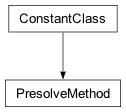Presolve solution methods
- none = -1¶
- primal = 1¶
- dual = 2¶
- barrier = 4¶
- class PresolveColStatus[source]¶
Bases:
ConstantClass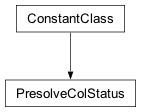Presolve variable status codes
- lower_bound = -1¶
- upper_bound = -2¶
- fixed = -3¶
- aggregated = -4¶
- other = -5¶
- class PresolveRowStatus[source]¶
Bases:
ConstantClass
Presolve linear constraint status codes
- reduced = -1¶
- aggregated = -2¶
- other = -3¶
- class PresolveInterface[source]¶
Bases:
BaseInterface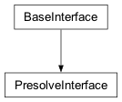Methods for dealing with the presolved problem.
- status = <cplex._internal._subinterfaces.PresolveStatus object>¶
See
PresolveStatus()
- method = <cplex._internal._subinterfaces.PresolveMethod object>¶
See
PresolveMethod()
- col_status = <cplex._internal._subinterfaces.PresolveColStatus object>¶
- row_status = <cplex._internal._subinterfaces.PresolveRowStatus object>¶
- crush_formula(formula)[source]¶
Crushes a linear formula down into the presolved space.
formula may either be an instance of the SparsePair class or a sequence of length two, the first entry of which contains variable names or indices, the second entry of which contains the float values associated with those variables.
Returns a (crushed_formula, offset) pair, where crushed_formula is a SparsePair object containing the crushed formula in terms of the presolved variables and offset is the value of the linear formula corresponding to variables that have been removed in the presolved problem.
>>> import cplex >>> c = cplex.Cplex() >>> out = c.set_results_stream(None) >>> out = c.set_log_stream(None) >>> c.read("example.mps") >>> c.presolve.presolve(c.presolve.method.dual) >>> c.presolve.crush_formula(cplex.SparsePair(ind = [1, 2], val = [1.0] * 2)) (SparsePair(ind = [1, 2], val = [1.0, 1.0]), 0.0)
- crush_x(x)[source]¶
Projects a primal solution down to the presolved space.
x must be a list of floats with length equal to the number of variables in the original problem. Returns a list of floats with length equal to the number of variables in the presolved problem.
>>> import cplex >>> c = cplex.Cplex() >>> out = c.set_results_stream(None) >>> out = c.set_log_stream(None) >>> c.read("example.mps") >>> c.presolve.presolve(c.presolve.method.dual) >>> c.presolve.crush_x([1.0] * 4) [1.0, 1.0, 1.0]
- crush_pi(pi)[source]¶
Projects a dual solution down to the presolved space.
pi must be a list of floats with length equal to the number of linear constraints in the original problem. Returns a list of floats with length equal to the number of linear constraints in the presolved problem.
>>> import cplex >>> c = cplex.Cplex() >>> out = c.set_results_stream(None) >>> out = c.set_log_stream(None) >>> c.read("example.mps") >>> c.presolve.presolve(c.presolve.method.dual) >>> c.presolve.crush_pi([1.0] * 4) [1.0, 1.0, 1.0]
- uncrush_formula(pre_formula)[source]¶
Uncrushes a linear formula up from the presolved space.
formula may either be an instance of the SparsePair class or a sequence of length two, the first entry of which contains variable names or indices, the second entry of which contains the float values associated with those variables.
Returns a (formula, offset) pair, where formula is a SparsePair object containing the formula in terms of variables in the original problem and offset is the value of the linear formula corresponding to variables that have been removed in the presolved problem.
>>> import cplex >>> c = cplex.Cplex() >>> out = c.set_results_stream(None) >>> out = c.set_log_stream(None) >>> c.read("example.mps") >>> c.presolve.presolve(c.presolve.method.dual) >>> c.presolve.uncrush_formula(cplex.SparsePair(ind = [1, 2], val = [1.0] * 2)) (SparsePair(ind = [1, 2], val = [1.0, 1.0]), 0.0)
- uncrush_x(pre_x)[source]¶
Projects a primal presolved solution up to the original space.
x must be a list of floats with length equal to the number of variables in the presolved problem. Returns a list of floats with length equal to the number of variables in the original problem.
>>> import cplex >>> c = cplex.Cplex() >>> out = c.set_results_stream(None) >>> out = c.set_log_stream(None) >>> c.read("example.mps") >>> c.presolve.presolve(c.presolve.method.dual) >>> c.presolve.uncrush_x([1.0] * 3) [1.0, 1.0, 1.0, 0.0]
- uncrush_pi(pre_pi)[source]¶
Projects a dual presolved solution up to the presolved space.
pi must be a list of floats with length equal to the number of linear constraints in the presolved problem. Returns a list of floats with length equal to the number of linear constraints in the original problem.
>>> import cplex >>> c = cplex.Cplex() >>> out = c.set_results_stream(None) >>> out = c.set_log_stream(None) >>> c.read("example.mps") >>> c.presolve.presolve(c.presolve.method.dual) >>> c.presolve.uncrush_pi([1.0] * 3) [1.0, 1.0, 1.0, 0.0]
- free()[source]¶
Frees the presolved problem.
Example usage:
>>> import cplex >>> c = cplex.Cplex() >>> out = c.set_results_stream(None) >>> out = c.set_log_stream(None) >>> c.read("example.mps") >>> c.presolve.presolve(c.presolve.method.dual) >>> c.presolve.free()
- get_status()[source]¶
Returns the status of presolve.
Returns an attribute of Cplex.presolve.status.
>>> import cplex >>> c = cplex.Cplex() >>> out = c.set_results_stream(None) >>> out = c.set_log_stream(None) >>> c.read("example.mps") >>> c.presolve.presolve(c.presolve.method.dual) >>> c.presolve.get_status() 1
- get_row_status()[source]¶
Returns the status of the original linear constraints.
Returns a list of integers with length equal to the number of linear constraints in the original problem. Each entry of this list is an attribute of Cplex.presolve.row_status.
>>> import cplex >>> c = cplex.Cplex() >>> out = c.set_results_stream(None) >>> out = c.set_log_stream(None) >>> c.read("example.mps") >>> c.presolve.presolve(c.presolve.method.dual) >>> c.presolve.get_row_status() [-3, 1, 2, -3]
- get_col_status()[source]¶
Returns the status of the original variables.
Returns a list of integers with length equal to the number of variables in the original problem. Each entry of this list is an attribute of Cplex.presolve.col_status.
>>> import cplex >>> c = cplex.Cplex() >>> out = c.set_results_stream(None) >>> out = c.set_log_stream(None) >>> c.read("example.mps") >>> c.presolve.presolve(c.presolve.method.dual) >>> c.presolve.get_col_status() [0, 1, 2, -5]
- get_presolved_row_status()[source]¶
Returns the status of the presolved linear constraints.
Returns a list of integers with length equal to the number of linear constraints in the presolved problem. -1 indicates that the presolved linear constraint corresponds to more than one linear constraint in the original problem. Otherwise the value is the index of the corresponding linear constraint in the original problem.
>>> import cplex >>> c = cplex.Cplex() >>> out = c.set_results_stream(None) >>> out = c.set_log_stream(None) >>> c.read("example.mps") >>> c.presolve.presolve(c.presolve.method.dual) >>> c.presolve.get_presolved_row_status() [-1, 1, 2]
- get_presolved_col_status()[source]¶
Returns the status of the presolved variables.
Returns a list of integers with length equal to the number of variables in the presolved problem. -1 indicates that the presolved variable corresponds to a linear combination of more than one variable in the original problem. Otherwise the value is the index of the corresponding variable in the original problem.
>>> import cplex >>> c = cplex.Cplex() >>> out = c.set_results_stream(None) >>> out = c.set_log_stream(None) >>> c.read("example.mps") >>> c.presolve.presolve(c.presolve.method.dual) >>> c.presolve.get_presolved_col_status() [0, 1, 2]
- add_rows(lin_expr=None, senses='', rhs=None, names=None)[source]¶
Adds linear constraints to the presolved problem.
presolve.add_rows accepts the keyword arguments lin_expr, senses, rhs, and names.
If more than one argument is specified, all arguments must have the same length.
lin_expr may be either a list of SparsePair instances or a matrix in list-of-lists format.
- Note
The entries of lin_expr must not contain duplicate indices. If an entry of lin_expr references a variable more than once, either by index, name, or a combination of index and name, an exception will be raised.
senses must be either a list of single-character strings or a string containing the types of the variables.
rhs is a list of floats, specifying the righthand side of each linear constraint.
names is a list of strings.
The specified constraints are added to both the original problem and the presolved problem.
- set_objective(objective)[source]¶
Sets the linear objective function of the presolved problem.
objective must be either a SparsePair instance or a list of two lists, the first of which contains variable indices or names, the second of which contains floats.
The objective function of both the original problem and the presolved problem are changed.
- class FeasoptConstraintType[source]¶
Bases:
ConstantClass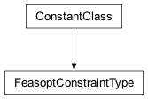Types of constraints
- lower_bound = 1¶
- upper_bound = 2¶
- linear = 3¶
- quadratic = 4¶
- indicator = 6¶
- class FeasoptInterface[source]¶
Bases:
BaseInterface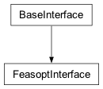Finds a minimal relaxation of the problem that is feasible.
This is a callable class. To find a feasible relaxation of a problem, invoke the
__call__method of this class.- constraint_type = <cplex._internal._subinterfaces.FeasoptConstraintType object>¶
- all_constraints()[source]¶
Returns an object instructing feasopt to relax all constraints.
Calling Cplex.feasopt(Cplex.feasopt.all_constraints()) will result in every constraint being relaxed independently with equal weight.
See also the
__call__method of this class.Example usage:
>>> import cplex >>> c = cplex.Cplex() >>> group = c.feasopt.all_constraints()
- upper_bound_constraints(*args)[source]¶
Returns an object instructing feasopt to relax all upper bounds.
If called with no arguments, every upper bound is assigned weight 1.0.
If called with one or more arguments, every upper bound is assigned a weight equal to the float passed in as the first argument.
If additional arguments are specified, they determine a subset of upper bounds to be relaxed. If one variable index or name is specified, it is the only upper bound that can be relaxed. If two variable indices or names are specified, then upper bounds of all variables between the first and the second, inclusive, can be relaxed. If a sequence of variable names or indices is passed in, all of their upper bounds can be relaxed.
See also the
__call__method of this class.Example usage:
>>> import cplex >>> c = cplex.Cplex() >>> group = c.feasopt.upper_bound_constraints()
- lower_bound_constraints(*args)[source]¶
Returns an object instructing feasopt to relax all lower bounds.
If called with no arguments, every lower bound is assigned weight 1.0.
If called with one or more arguments, every lower bound is assigned a weight equal to the float passed in as the first argument.
If additional arguments are specified, they determine a subset of lower bounds to be relaxed. If one variable index or name is specified, it is the only lower bound that can be relaxed. If two variable indices or names are specified, then lower bounds of all variables between the first and the second, inclusive, can be relaxed. If a sequence of variable names or indices is passed in, all of their lower bounds can be relaxed.
See also the
__call__method of this class.Example usage:
>>> import cplex >>> c = cplex.Cplex() >>> group = c.feasopt.lower_bound_constraints()
- linear_constraints(*args)[source]¶
Returns an object instructing feasopt to relax all linear constraints.
If called with no arguments, every linear constraint is assigned weight 1.0.
If called with one or more arguments, every linear constraint is assigned a weight equal to the float passed in as the first argument.
If additional arguments are specified, they determine a subset of linear constraints to be relaxed. If one linear constraint index or name is specified, it is the only linear constraint that can be relaxed. If two linear constraint indices or names are specified, then all linear constraints between the first and the second, inclusive, can be relaxed. If a sequence of linear constraint names or indices is passed in, all of their linear constraints can be relaxed.
See also the
__call__method of this class.Example usage:
>>> import cplex >>> c = cplex.Cplex() >>> group = c.feasopt.linear_constraints()
- quadratic_constraints(*args)[source]¶
Returns an object instructing feasopt to relax all quadratic constraints.
If called with no arguments, every quadratic constraint is assigned weight 1.0.
If called with one or more arguments, every quadratic constraint is assigned a weight equal to the float passed in as the first argument.
If additional arguments are specified, they determine a subset of quadratic constraints to be relaxed. If one quadratic constraint index or name is specified, it is the only quadratic constraint that can be relaxed. If two quadratic constraint indices or names are specified, then all quadratic constraints between the first and the second, inclusive, can be relaxed. If a sequence of quadratic constraint names or indices is passed in, all of their quadratic constraints can be relaxed.
Example usage:
>>> import cplex >>> c = cplex.Cplex() >>> group = c.feasopt.quadratic_constraints()
- indicator_constraints(*args)[source]¶
Returns an object instructing feasopt to relax all indicator constraints.
If called with no arguments, every indicator constraint is assigned weight 1.0.
If called with one or more arguments, every indicator constraint is assigned a weight equal to the float passed in as the first argument.
If additional arguments are specified, they determine a subset of indicator constraints to be relaxed. If one indicator constraint index or name is specified, it is the only indicator constraint that can be relaxed. If two indicator constraint indices or names are specified, then all indicator constraints between the first and the second, inclusive, can be relaxed. If a sequence of indicator constraint names or indices is passed in, all of their indicator constraints can be relaxed.
See also the
__call__method of this class.Example usage:
>>> import cplex >>> c = cplex.Cplex() >>> group = c.feasopt.indicator_constraints()
- __call__(*args)[source]¶
Finds a minimal relaxation of the problem that is feasible.
This method can take arbitrarily many arguments. Either the object returned by feasopt.all_constraints() or any combination of constraint groups and objects returned by
upper_bound_constraints(),lower_bound_constraints(),linear_constraints(),quadratic_constraints(), orindicator_constraints()may be used to specify the constraints to consider.Constraint groups are sequences of length two, the first entry of which is the preference for the group (a float), the second of which is a sequence of pairs (type, id), where type is an attribute of self.constraint_type and id is either an index or a valid name for the type.
See CPXfeasoptext in the Callable Library Reference Manual.
Example usage:
>>> import cplex >>> c = cplex.Cplex() >>> out = c.set_results_stream(None) >>> out = c.set_log_stream(None) >>> c.read("infeasible.lp") >>> c.feasopt(c.feasopt.all_constraints()) >>> c.solution.get_objective_value() 2.0 >>> c.solution.get_values() [3.0, 2.0, 3.0, 2.0]
- class ConflictStatus[source]¶
Bases:
ConstantClass
Status codes returned by conflict.get
- excluded = -1¶
- possible_member = 0¶
- member = 3¶
- class ConflictConstraintType[source]¶
Bases:
ConstantClass
Types of constraints
- lower_bound = 1¶
- upper_bound = 2¶
- linear = 3¶
- quadratic = 4¶
- indicator = 6¶
- SOS = 5¶
- pwl = 7¶
- class ConflictInterface[source]¶
Bases:
BaseInterface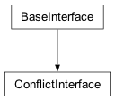Methods for identifying conflicts among constraints.
- group_status = <cplex._internal._subinterfaces.ConflictStatus object>¶
See
ConflictStatus()
- constraint_type = <cplex._internal._subinterfaces.ConflictConstraintType object>¶
- __init__(cplex)[source]¶
Creates a new ConflictInterface.
The conflict interface is exposed by the top-level
Cplexclass as Cplex.conflict. This constructor is not meant to be used externally.
- all_constraints()[source]¶
Returns an object instructing the conflict refiner to include all constraints.
Calling Cplex.conflict.refine(Cplex.conflict.all_constraints()) or Cplex.conflict.refine_MIP_start(Cplex.conflict.all_constraints()) will result in every constraint being included in the search for conflicts with equal preference.
Example usage:
>>> import cplex >>> c = cplex.Cplex() >>> group = c.conflict.all_constraints()
- upper_bound_constraints(*args)[source]¶
Returns an object instructing the conflict refiner to include all upper bounds.
If called with no arguments, every upper bound is assigned weight 1.0.
If called with one or more arguments, every upper bound is assigned a weight equal to the float passed in as the first argument.
If additional arguments are specified, they determine a subset of upper bounds to be included. If one variable index or name is specified, it is the only upper bound that will be included. If two variable indices or names are specified, then upper bounds of all variables between the first and the second, inclusive, will be included. If a sequence of variable names or indices is passed in, all of their upper bounds will be included.
Example usage:
>>> import cplex >>> c = cplex.Cplex() >>> group = c.conflict.upper_bound_constraints()
- lower_bound_constraints(*args)[source]¶
Returns an object instructing the conflict refiner to include all lower bounds.
If called with no arguments, every lower bound is assigned weight 1.0.
If called with one or more arguments, every lower bound is assigned a weight equal to the float passed in as the first argument.
If additional arguments are specified, they determine a subset of lower bounds to be included. If one variable index or name is specified, it is the only lower bound that will be included. If two variable indices or names are specified, then lower bounds of all variables between the first and the second, inclusive, will be included. If a sequence of variable names or indices is passed in, all of their lower bounds will be included.
Example usage:
>>> import cplex >>> c = cplex.Cplex() >>> group = c.conflict.lower_bound_constraints()
- linear_constraints(*args)[source]¶
Returns an object instructing the conflict refiner to include all linear constraints.
If called with no arguments, every linear constraint is assigned weight 1.0.
If called with one or more arguments, every linear constraint is assigned a weight equal to the float passed in as the first argument.
If additional arguments are specified, they determine a subset of linear constraints to be included. If one linear constraint index or name is specified, it is the only linear constraint that will be included. If two linear constraint indices or names are specified, then all linear constraints between the first and the second, inclusive, will be included. If a sequence of linear constraint names or indices is passed in, they will all be included.
Example usage:
>>> import cplex >>> c = cplex.Cplex() >>> group = c.conflict.linear_constraints()
- quadratic_constraints(*args)[source]¶
Returns an object instructing the conflict refiner to include all quadratic constraints.
If called with no arguments, every quadratic constraint is assigned weight 1.0.
If called with one or more arguments, every quadratic constraint is assigned a weight equal to the float passed in as the first argument.
If additional arguments are specified, they determine a subset of quadratic constraints to be included. If one quadratic constraint index or name is specified, it is the only quadratic constraint that will be included. If two quadratic constraint indices or names are specified, then all quadratic constraints between the first and the second, inclusive, will be included. If a sequence of quadratic constraint names or indices is passed in, they will all be included.
Example usage:
>>> import cplex >>> c = cplex.Cplex() >>> group = c.conflict.quadratic_constraints()
- indicator_constraints(*args)[source]¶
Returns an object instructing the conflict refiner to include all indicator constraints.
If called with no arguments, every indicator constraint is assigned weight 1.0.
If called with one or more arguments, every indicator constraint is assigned a weight equal to the float passed in as the first argument.
If additional arguments are specified, they determine a subset of indicator constraints to be included. If one indicator constraint index or name is specified, it is the only indicator constraint that will be included. If two indicator constraint indices or names are specified, the all indicator constraints between the first and the second, inclusive, will be included. If a sequence of indicator constraint names or indices is passed in, they will all be included.
Example usage:
>>> import cplex >>> c = cplex.Cplex() >>> group = c.conflict.indicator_constraints()
- pwl_constraints(*args)[source]¶
Returns an object instructing the conflict refiner to include all PWL constraints.
If called with no arguments, every PWL constraint is assigned weight 1.0.
If called with one or more arguments, every PWL constraint is assigned a weight equal to the float passed in as the first argument.
If additional arguments are specified, they determine a subset of PWL constraints to be included. If one PWL constraint index or name is specified, it is the only PWL constraint that will be included. If two PWL constraint indices or names are specified, then all PWL constraints between the first and the second, inclusive, will be included. If a sequence of PWL constraint names or indices is passed in, they will all be included.
Example usage:
>>> import cplex >>> c = cplex.Cplex() >>> group = c.conflict.pwl_constraints()
- SOS_constraints(*args)[source]¶
Returns an object instructing the conflict refiner to include all SOS constraints.
If called with no arguments, every SOS constraint is assigned weight 1.0.
If called with one or more arguments, every SOS constraint is assigned a weight equal to the float passed in as the first argument.
If additional arguments are specified, they determine a subset of SOS constraints to be included. If one SOS constraint index or name is specified, it is the only SOS constraint that will be included. If two SOS constraint indices or names are specified, then all SOS constraints between the first and the second, inclusive, will be included. If a sequence of SOS constraint names or indices is passed in, they will all be included.
Example usage:
>>> import cplex >>> c = cplex.Cplex() >>> group = c.conflict.SOS_constraints()
- refine_MIP_start(MIP_start, *args)[source]¶
Identifies a minimal conflict among a set of constraints for a given MIP start.
This method can take arbitrarily many arguments. The first argument must be either a name or index of a MIP start. Additional arguments are optional and can be the object returned by
all_constraints()or any combination of constraint groups and objects returned byupper_bound_constraints(),lower_bound_constraints(),linear_constraints(),quadratic_constraints(),indicator_constraints(),pwl_constraints(), orSOS_constraints()may be used to specify the constraints to consider. If no additional arguments are specified, then constraint groups are created automatically as in the CPLEX interactive.Constraint groups are sequences of length two, the first entry of which is the preference for the group (a float), the second of which is a sequence of pairs (type, id), where type is an attribute of conflict.constraint_type and id is either an index or a valid name for the type.
See CPXrefinemipstartconflictext and in the Callable Library Reference Manual.
Example usage:
>>> import cplex >>> c = cplex.Cplex() >>> out = c.set_results_stream(None) >>> indices = c.variables.add([1], [0], [0], c.variables.type.binary) >>> indices = c.variables.add([2], [0], [0], c.variables.type.binary) >>> c.solve() >>> indices = c.linear_constraints.add( ... lin_expr=[[[0, 1], [1.0, 1.0]]], senses="E", rhs=[2.0]) >>> c.conflict.refine_MIP_start(0, c.conflict.all_constraints()) >>> c.conflict.get() [-1, -1, -1, -1, 3] >>> c.conflict.group_status[3], c.conflict.group_status[-1] ('member', 'excluded') >>> c.conflict.get_groups(0, 3) [(1.0, ((2, 0),)), (1.0, ((2, 1),)), (1.0, ((1, 0),)), (1.0, ((1, 1),))]
- refine(*args)[source]¶
Identifies a minimal conflict among a set of constraints.
This method can take arbitrarily many arguments. Either the object returned by
all_constraints()or any combination of constraint groups and objects returned byupper_bound_constraints(),lower_bound_constraints(),linear_constraints(),quadratic_constraints(),indicator_constraints(),pwl_constraints(), orSOS_constraints()may be used to specify the constraints to consider. Alternatively, if no arguments are specified, then constraint groups are created automatically as in the CPLEX interactive.Constraint groups are sequences of length two, the first entry of which is the preference for the group (a float), the second of which is a sequence of pairs (type, id), where type is an attribute of conflict.constraint_type and id is either an index or a valid name for the type.
See CPXrefineconflictext in the Callable Library Reference Manual.
Example usage:
>>> import cplex >>> c = cplex.Cplex() >>> out = c.set_results_stream(None) >>> c.read("infeasible.lp") >>> c.conflict.refine(c.conflict.linear_constraints(), ... c.conflict.lower_bound_constraints()) >>> c.conflict.get() [3, -1, 3, -1, -1, -1] >>> c.conflict.group_status[3], c.conflict.group_status[-1] ('member', 'excluded') >>> c.conflict.get_groups([0, 2]) [(1.0, ((3, 0),)), (1.0, ((1, 0),))]
- get(*args)[source]¶
Returns the status of a set of groups of constraints.
Can be called by four forms.
If called with no arguments, returns a list containing the status of all constraint groups.
If called with one integer argument, returns the status of that constraint group.
If called with two integer arguments, returns the status of all constraint groups between the first and second argument, inclusive.
If called with a sequence of integers as its argument, returns the status of all constraint groups in the sequence.
The status codes are attributes of Cplex.conflict.group_status.
See CPXgetconflictext in the Callable Library Reference Manual.
Example usage:
>>> import cplex >>> c = cplex.Cplex() >>> out = c.set_results_stream(None) >>> c.read("infeasible.lp") >>> c.conflict.refine(c.conflict.all_constraints()) >>> confstatus = c.conflict.get()
- get_num_groups()[source]¶
Returns the number of constraint groups used in the last call to
refine()orrefine_MIP_start().See CPXgetconflictnumgroups in the Callable Library Reference Manual.
Example usage:
>>> import cplex >>> c = cplex.Cplex() >>> out = c.set_results_stream(None) >>> c.read("infeasible.lp") >>> c.conflict.refine(c.conflict.all_constraints()) >>> c.conflict.get_num_groups() 10
- get_groups(*args)[source]¶
Returns the groups of constraints used in the last call to
refine()orrefine_MIP_start().Can be called by four forms.
If called with no arguments, returns a list containing all constraint groups.
If called with one integer argument, returns that constraint group.
If called with two integer arguments, returns all constraint groups between the first and second argument, inclusive.
If called with a sequence of integers as its argument, returns all constraint groups in the sequence.
Constraint groups are tuples of length two, the first entry of which is the preference for the group (a float), the second of which is a tuple of pairs (type, id), where type is an attribute of conflict.constraint_type and id is either an index or a valid name for the type.
See CPXgetconflictgroups in the Callable Library Reference Manual.
Example usage:
>>> import cplex >>> c = cplex.Cplex() >>> out = c.set_results_stream(None) >>> c.read("infeasible.lp") >>> c.conflict.refine(c.conflict.all_constraints()) >>> groups = c.conflict.get_groups()
- write(filename)[source]¶
Writes the conflict to a file.
See CPXclpwrite in the Callable Library Reference Manual.
Example usage:
>>> import cplex >>> c = cplex.Cplex() >>> out = c.set_results_stream(None) >>> c.read("infeasible.lp") >>> c.conflict.refine(c.conflict.all_constraints()) >>> c.conflict.write("conflict.clp")
- class PivotVarStatus[source]¶
Bases:
ConstantClass
Use as input to pivoting methods.
- at_lower_bound = 0¶
- at_upper_bound = 2¶
- class AdvancedCplexInterface[source]¶
Bases:
BaseInterface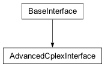Advanced control of a Cplex object.
- no_variable = 2100000000¶
See
_constants.CPX_NO_VARIABLE
- variable_status = <cplex._internal._subinterfaces.PivotVarStatus object>¶
See
PivotVarStatus()
- basic_presolve()[source]¶
Performs bound strengthening and detects redundant rows.
Returns a tuple containing three lists: a list containing the strengthened lower bounds, a list containing the strengthened upper bounds, and a list containing the status of each row.
See CPXbasicpresolve in the Callable Library Reference Manual.
- Note
This method does not create a presolved problem.
Example usage:
>>> import cplex >>> c = cplex.Cplex() >>> out = c.set_results_stream(None) >>> out = c.set_log_stream(None) >>> c.read("lpex.mps") >>> redlb, redub, rstat = c.advanced.basic_presolve()
- pivot(enter, leave, status)[source]¶
Pivots a variable into the basis.
enter is a name or index of a variable or linear constraint. The index of a slack variable is specified by a negative integer; -i - 1 refers to the slack associated with the ith linear constraint. enter must not identify a basic variable.
leave is a name or index of a variable or linear constraint. The index of a slack variable is specified by a negative integer; -i - 1 refers to the slack associated with the ith linear constraint. leave must identify either a basic variable or a non-basic variable with both a lower and upper bound to indicate that it is to move to its opposite bound. leave may also be set to Cplex.advanced.no_variable to instruct CPLEX to use a ratio test to determine the entering variable.
- Note
If a linear constraint has the same name as a column, it must be specified by -index - 1, not by name.
status must be an attribute of Cplex.advanced.variable_status specifying the nonbasic status to be assigned to the leaving variable after the basis change.
- pivot_slacks_in(which)[source]¶
Forcibly pivots slack variables into the basis.
which may be either a single linear constraint index or name or a sequence of linear constraint indices or names.
- pivot_fixed_variables_out(which)[source]¶
Forcibly pivots structural variables out of the basis.
which may be either a single variable index or name or a sequence of variable indices or names.
- strong_branching(variables, it_limit)[source]¶
Performs strong branching.
variables is a sequence of names or indices of variables.
it_limit is an integer that specifies the number of iterations allowed.
Returns a list of pairs (down_penalty, up_penalty) with the same length as variables containing the penalties for branching down or up, respectively, on each variable.
See CPXstrongbranch in the Callable Library Reference Manual for more detail.
Example usage:
>>> import cplex >>> c = cplex.Cplex() >>> out = c.set_results_stream(None) >>> out = c.set_log_stream(None) >>> itlim = c.parameters.simplex.limits.iterations.get() >>> c.read("example.mps") >>> c.solve() >>> vars = list(range(c.variables.get_num())) >>> result = c.advanced.strong_branching(vars, itlim)
- complete()[source]¶
See CPXcompletelp in the Callable Library Reference Manual.
- class BranchDirection[source]¶
Bases:
ConstantClass
Constants defining branch directions
- default = 0¶
- down = -1¶
- up = 1¶
- class OrderInterface[source]¶
Bases:
BaseInterface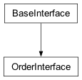Methods for setting and querying a priority order for branching.
Example usage:
>>> import cplex >>> c = cplex.Cplex() >>> indices = c.variables.add(names = [str(i) for i in range(5)]) >>> c.variables.set_types(zip(list(range(5)), ["C","I","I","I","I"])) >>> c.order.set([(1, 10, c.order.branch_direction.up), ('3', 5, c.order.branch_direction.down)]) >>> c.order.get() [(1, 10, 1), (3, 5, -1)] >>> c.order.get_variables() [1, 3]
- branch_direction = <cplex._internal._subinterfaces.BranchDirection object>¶
- get()[source]¶
Returns a list of triples (variable, priority, direction) representing the priority order for branching.
- class InitialInterface[source]¶
Bases:
BaseInterface
Methods to set starting information for an optimization algorithm to solve continuous problems (LP, QP, QCP).
- Note
Data passed to these methods cannot be queried immediately from the methods in Cplex.solution. Those methods will return data only after Cplex.solve() or Cplex.feasopt() has been called.
- status = <cplex._internal._subinterfaces.BasisVarStatus object>¶
See
BasisVarStatus()
- set_start(col_status, row_status, col_primal, row_primal, col_dual, row_dual)[source]¶
Sets basis statuses, primal values, and dual values.
The arguments col_status, col_primal, and col_dual are lists that either have length equal to the number of variables or are empty. If col_status is empty, then row_status must also be empty. If col_primal is empty, then row_primal must also be empty.
The arguments row_status, row_primal, and row_dual are lists that either have length equal to the number of linear constraints or are empty. If row_status is empty, the col_status must also be empty. If row_dual is empty, then col_dual must also be empty.
Each entry of col_status and row_status must be an attribute of Cplex.start.status.
Each entry of col_primal and row_primal must be a float specifying the starting primal values for the columns and rows, respectively.
Each entry of col_dual and row_dual must be a float specifying the starting dual values for the columns and rows, respectively.
- Note
The starting information is ignored by the optimizers if the parameter cplex.parameters.advance is set to cplex.parameters.advance.values.none.
>>> import cplex >>> c = cplex.Cplex() >>> indices = c.variables.add( ... names=["v{0}".format(i) for i in range(5)] ... ) >>> indices = c.linear_constraints.add( ... names=["r{0}".format(i) for i in range(3)] ... ) >>> s = c.start.status >>> c.start.set_start( ... [s.basic] * 3 + [s.at_lower_bound] * 2, ... [s.basic] + [s.at_upper_bound] * 2, ... [0.0] * 5, ... [1.0] * 3, ... [2.0] * 5, ... [3.0] * 3 ... )
- read_start(filename)[source]¶
Reads the starting information from a file.
See CPXreadcopystartinfo in the Callable Library Reference Manual and also
SolutionInterface.write().Example usage:
>>> import cplex >>> c1 = cplex.Cplex() >>> out = c1.set_results_stream(None) >>> out = c1.set_log_stream(None) >>> c1.read("lpex.mps") >>> c1.solve() >>> c1.solution.write("lpex.sol") >>> c2 = cplex.Cplex() >>> out = c2.set_results_stream(None) >>> out = c2.set_log_stream(None) >>> c2.read("lpex.mps") >>> c2.start.read_start("lpex.sol")
- read_basis(filename)[source]¶
Reads the starting basis from a file.
See CPXreadcopybase in the Callable Library Reference Manual and also
BasisInterface.write().Example:
>>> import cplex >>> c1 = cplex.Cplex() >>> out = c1.set_results_stream(None) >>> out = c1.set_log_stream(None) >>> c1.read("lpex.mps") >>> c1.solve() >>> c1.solution.basis.write("lpex.bas") >>> c2 = cplex.Cplex() >>> out = c2.set_results_stream(None) >>> out = c2.set_log_stream(None) >>> c2.read("lpex.mps") >>> c2.start.read_basis("lpex.bas")
cplex._internal._baseinterface module¶
Base-interface of the CPLEX API
- class BaseInterface[source]¶
Bases:
object
Common methods for sub-interfaces.
- __init__(cplex, advanced=False, getindexfunc=None)[source]¶
Creates a new BaseInterface.
This class is not meant to be instantiated directly nor used externally.
- get_indices(name)[source]¶
Converts from names to indices.
If name is a string, get_indices returns the index of the object with that name. If no such object exists, an exception is raised.
If name is a sequence of strings, get_indices returns a list of the indices corresponding to the strings in name. Equivalent to map(self.get_indices, name).
If the subclass does not provide an index function (i.e., the interface is not indexed), then a NotImplementedError is raised.
Example usage:
>>> import cplex >>> c = cplex.Cplex() >>> indices = c.variables.add(names=["a", "b"]) >>> c.variables.get_indices("a") 0 >>> c.variables.get_indices(["a", "b"]) [0, 1]
cplex._internal._procedural module¶
Wrapper functions for the CPLEX C Callable Library
- class SigIntHandler[source]¶
Bases:
object
Handle Ctrl-C events during long running processes.
:undocumented
- class StatusChecker[source]¶
Bases:
object
A callable object used for checking status codes.
:undocumented
- tuneparamprobset(env, filenames, filetypes, int_param_values, dbl_param_values, str_param_values)[source]¶
- copylpwnames(env, lp, numcols, numrows, objsense, obj, rhs, sense, matbeg, matcnt, matind, matval, lb, ub, rngval, colname, rowname)[source]¶
- addindconstr(env, lp, indcnt, indvar, complemented, rhs, sense, linmat, indtype, name, nzcnt)[source]¶
- multiobjchgattribs(env, lp, objidx, offset=nan, weight=nan, priority=-1, abstol=nan, reltol=nan, name=None)[source]¶
- multiobjsetobj(env, lp, objidx, objind, objval, offset=nan, weight=nan, priority=-1, abstol=nan, reltol=nan, objname=None)[source]¶
cplex._internal._matrices module¶
- undocumented:
_C_HB_Matrix, _HB_Matrix
- unpack_pair(item)[source]¶
Extracts the indices and values from an object.
The argument item can either be an instance of SparsePair or a sequence of length two.
Example usage:
>>> sp = SparsePair() >>> ind, val = unpack_pair(sp) >>> lin_expr = [[], []] >>> ind, val = unpack_pair(lin_expr)
- unpack_triple(item)[source]¶
Extracts the indices and values from an object.
The argument item can either be an instance of SparseTriple or a sequence of length three.
Example usage:
>>> st = SparseTriple() >>> ind1, ind2, val = unpack_triple(st) >>> quad_expr = [[], [], []] >>> ind1, ind2, val = unpack_triple(quad_expr)
cplex._internal._multiobj module¶
Multi-Objective API
- class MultiObjInterface[source]¶
Bases:
BaseInterface
Methods for adding, querying, and modifying multiple objectives.
The methods in this interface can be used to add, query, and modify objectives in a specified problem. These objectives are used when multi-objective optimization is initiated.
See also
MultiObjSolnInterfacewhere methods for accessing solutions for multi-objective models can be found.For more details see the section on multi-objective optimization in the CPLEX User’s Manual.
- sense = <cplex._internal._subinterfaces.ObjSense object>¶
See
ObjSense()
- __init__(cpx)[source]¶
Creates a new MultiObjInterface.
The Multi-Objective interface is exposed by the top-level
Cplexclass asCplex.multiobj. This constructor is not meant to be used externally.
- get_num()[source]¶
Returns the number of objectives in the problem.
See CPXgetnumobjs in the Callable Library Reference Manual for more detail.
Example usage:
>>> import cplex >>> c = cplex.Cplex() >>> c.multiobj.get_num() 1 >>> indices = c.multiobj.set_num(2) >>> c.multiobj.get_num() 2
- set_num(numobj)[source]¶
Sets the number of objectives in the problem instance.
There is always at least one objective in the problem instance (indexed 0) thus numobj must be at least 1. If before calling this method there were more objectives in the instance than the specified numobj then the objectives whose index is >= numobj are removed from the instance. If before calling this method the number of objectives was <= numobj then new objectives are created, all with all-zero coefficients and default settings (like priority, weight, etc).
See CPXsetnumobjs in the Callable Library Reference Manual for more detail.
Example usage:
>>> import cplex >>> c = cplex.Cplex() >>> c.multiobj.set_num(2) >>> c.multiobj.get_num() 2
- get_names(*args)[source]¶
Returns the names of a set of objectives.
There are four forms by which multiobj.get_names may be called.
- multiobj.get_names()
return the names of all objectives from the problem.
- multiobj.get_names(i)
i must be an objective index. Returns the name of row i.
- multiobj.get_names(s)
s must be a sequence of objective indices. Returns the names of the objectives with indices the members of s. Equivalent to [multiobj.get_names(i) for i in s]
- multiobj.get_names(begin, end)
begin and end must be objective indices. Returns the names of the objectives with indices between begin and end, inclusive of end. Equivalent to multiobj.get_names(range(begin, end + 1)).
See CPXmultiobjgetname in the Callable Library Reference Manual for more detail.
Example usage:
>>> import cplex >>> c = cplex.Cplex() >>> c.multiobj.set_definition(0, name='mo1') >>> c.multiobj.get_names(0) 'mo1'
- set_name(objidx, name)[source]¶
Sets the name of an objective function.
objidx must be an objective name or index.
Example usage:
>>> import cplex >>> c = cplex.Cplex() >>> c.multiobj.set_num(3) >>> for i in range(3): ... c.multiobj.set_name(i, str(i)) >>> c.multiobj.get_names() ['0', '1', '2']
- get_definition(objidx, begin=None, end=None)[source]¶
Returns the definition of an objective.
Returns an objective definitions, where the definition is a list containing the following components: obj (a list containing the linear objective coefficients), offset, weight, priority, abstol, reltol (see
set_definition).objidx is the name or index of the objective to be accessed.
The optional begin and end arguments must be variable indices or names. Together, begin and end specify the range of objective function coefficients to be returned. By default, the linear objective coefficients of all variables from the problem will be returned (i.e., begin will default to the first variable index and end will default to the last variable index).
See CPXmultiobjgetobj in the Callable Library Reference Manual for more detail.
Example usage:
>>> import cplex >>> c = cplex.Cplex() >>> varind = list(c.variables.add(obj=[1.0, 2.0])) >>> c.multiobj.get_definition(0) [[1.0, 2.0], 0.0, 1.0, 0, 0.0, 0.0]
- set_definition(objidx, obj=None, offset=0.0, weight=1.0, priority=0, abstol=None, reltol=None, name=None)[source]¶
Sets the definition of an objective.
multiobj.set_definition accepts the keyword arguments objidx, obj, offset, weight, priority, abstol, reltol, and name.
objidx is the name or index of the objective to be set. The objective index must be in the interval [0, Cplex.multiobj.get_num() - 1].
obj can be either a SparsePair or a list of two lists specifying the linear component of the objective. If not specified, the coefficients of every variable are set to 0.0.
- Note
obj must not contain duplicate indices. If obj references a variable more than once, either by index, name, or a combination of index and name, an exception will be raised.
offset is the offset of the objective to be set. If not specififed, the offset is set to 0.0.
weight is the weight of the objective to be set. For the definition of the weight see the description of blended objective in the multi-objective optimization section of the CPLEX User’s Manual. If not specified, the weight is set to 1.0.
priority is the priority of the objective to be set. It must be a nonnegative integer. For the definition of the priority see the description of lexicographic objective in the multi-objective optimization section of the CPLEX User’s Manual. If not specified, the priority is set to 0.
abstol is the absolute tolerance of the objective to be set. If not specified, the absolute tolerance is set to 0.0.
reltol is the relative tolerance of the objective to be set. If not specified, the relative tolerance is set to 0.0.
name is a string representing the name of the objective to be set. If not specified, the objective name will default to None.
See CPXmultiobjsetobj in the Callable Library Reference Manual for more detail.
Example usage:
>>> import cplex >>> c = cplex.Cplex() >>> varind = list(c.variables.add(names=['x1', 'x2'])) >>> c.multiobj.set_definition( ... objidx=0, ... obj=cplex.SparsePair(ind=varind, val=[1.0, 2.0]), ... offset=0.0, ... weight=1.0, ... priority=0, ... abstol=1e-06, ... reltol=1e-04, ... name='obj1') >>> c.multiobj.get_definition('obj1') [[1.0, 2.0], 0.0, 1.0, 0, 1e-06, 0.0001] >>> c.multiobj.get_names(0) 'obj1'
- get_linear(objidx, *args)[source]¶
Returns the linear coefficients of a set of variables.
Can be called by four forms each of which requires an objidx argument. objidx must be an objective name or index.
- multiobj.get_linear(objidx)
return the linear objective coefficients of all variables from the problem.
- multiobj.get_linear(objidx, i)
i must be a variable name or index. Returns the linear objective coefficient of the variable whose index or name is i.
- multiobj.get_linear(objidx, s)
s must be a sequence of variable names or indices. Returns the linear objective coefficient of the variables with indices the members of s. Equivalent to [multiobj.get_linear(objidx, i) for i in s]
- multiobj.get_linear(objidx, begin, end)
begin and end must be variable indices or variable names. Returns the linear objective coefficient of the variables with indices between begin and end, inclusive of end. Equivalent to multiobj.get_linear(objidx, range(begin, end + 1)).
Example usage:
>>> import cplex >>> c = cplex.Cplex() >>> indices = c.variables.add( ... obj=[1.5 * i for i in range(10)], ... names=[str(i) for i in range(10)]) >>> c.variables.get_num() 10 >>> c.multiobj.get_linear(0, 8) 12.0 >>> c.multiobj.get_linear(0, '1', 3) [1.5, 3.0, 4.5] >>> c.multiobj.get_linear(0, [2, '0', 5]) [3.0, 0.0, 7.5] >>> c.multiobj.get_linear(0) [0.0, 1.5, 3.0, 4.5, 6.0, 7.5, 9.0, 10.5, 12.0, 13.5]
- set_linear(objidx, *args)[source]¶
Changes the linear part of an objective function.
Can be called by two forms each of which requires an objidx argument. objidx must be an objective name or index.
- multiobj.set_linear(objidx, var, value)
var must be a variable index or name and value must be a float. Changes the coefficient of the variable identified by var to value.
- multiobj.set_linear(objidx, sequence)
sequence is a sequence of pairs (var, value) as described above. Changes the coefficients for the specified variables to the given values.
Example usage:
>>> import cplex >>> c = cplex.Cplex() >>> indices = c.variables.add(names=[str(i) for i in range(4)]) >>> c.multiobj.get_linear(0) [0.0, 0.0, 0.0, 0.0] >>> c.multiobj.set_linear(0, 0, 1.0) >>> c.multiobj.get_linear(0) [1.0, 0.0, 0.0, 0.0] >>> c.multiobj.set_linear(0, '3', -1.0) >>> c.multiobj.get_linear(0) [1.0, 0.0, 0.0, -1.0] >>> c.multiobj.set_linear(0, [('2', 2.0), (1, 0.5)]) >>> c.multiobj.get_linear(0) [1.0, 0.5, 2.0, -1.0]
- get_sense()[source]¶
Returns the sense of all objective functions.
See
ObjSense.Example usage:
>>> import cplex >>> c = cplex.Cplex() >>> c.multiobj.sense[c.multiobj.get_sense()] 'minimize' >>> c.multiobj.set_sense(c.multiobj.sense.maximize) >>> c.multiobj.sense[c.multiobj.get_sense()] 'maximize' >>> c.multiobj.set_sense(c.multiobj.sense.minimize) >>> c.multiobj.sense[c.multiobj.get_sense()] 'minimize'
- set_sense(sense)[source]¶
Sets the sense of all objective functions.
- Note
All objective functions share the same sense. To model an objective with a different sense use a negative value for the weight attribute. See
set_weight.
The argument to this method must be either
ObjSense.minimizeorObjSense.maximize.>>> import cplex >>> c = cplex.Cplex() >>> c.multiobj.sense[c.multiobj.get_sense()] 'minimize' >>> c.multiobj.set_sense(c.multiobj.sense.maximize) >>> c.multiobj.sense[c.multiobj.get_sense()] 'maximize' >>> c.multiobj.set_sense(c.multiobj.sense.minimize) >>> c.multiobj.sense[c.multiobj.get_sense()] 'minimize'
- get_offset(objidx)[source]¶
Returns the constant offset of an objective function.
objidx must be an objective name or index.
Example usage:
>>> import cplex >>> c = cplex.Cplex() >>> indices = c.variables.add(obj=[1.0 for i in range(3)]) >>> c.multiobj.get_offset(0) 0.0
- set_offset(objidx, offset)[source]¶
Sets the constant offset of an objective function.
objidx must be an objective name or index.
Example usage:
>>> import cplex >>> c = cplex.Cplex() >>> indices = c.variables.add(obj=[1.0 for i in range(3)]) >>> c.objective.set_offset(3.14) >>> c.objective.get_offset() 3.14
- get_weight(objidx)[source]¶
Returns the weight of an objective function.
objidx must be an objective name or index.
Example usage:
>>> import cplex >>> c = cplex.Cplex() >>> indices = c.variables.add(obj=[1.0 for i in range(3)]) >>> c.multiobj.get_weight(0) 1.0
- set_weight(objidx, weight)[source]¶
Sets the weight of an objective function.
objidx must be an objective name or index.
- Note
All objective functions share the same sense. To model an objective with a different sense use a negative value for the weight attribute. See
set_sense.
Example usage:
>>> import cplex >>> c = cplex.Cplex() >>> indices = c.variables.add(obj=[1.0 for i in range(3)]) >>> c.multiobj.set_weight(0, -2.0) >>> c.multiobj.get_weight(0) -2.0
- get_priority(objidx)[source]¶
Returns the priority of an objective function.
objidx must be an objective name or index.
Example usage:
>>> import cplex >>> c = cplex.Cplex() >>> indices = c.variables.add(obj=[1.0 for i in range(3)]) >>> c.multiobj.get_priority(0) 0
- set_priority(objidx, priority)[source]¶
Sets the priority of an objective function.
objidx must be an objective name or index.
Example usage:
>>> import cplex >>> c = cplex.Cplex() >>> indices = c.variables.add(obj=[1.0 for i in range(3)]) >>> c.multiobj.set_priority(0, 2) >>> c.multiobj.get_priority(0) 2
- get_abstol(objidx)[source]¶
Returns the absolute tolerance of an objective function.
objidx must be an objective name or index.
Example usage:
>>> import cplex >>> c = cplex.Cplex() >>> indices = c.variables.add(obj=[1.0 for i in range(3)]) >>> c.multiobj.get_abstol(0) 0.0
- set_abstol(objidx, abstol)[source]¶
Sets the absolute tolerance of an objective function.
objidx must be an objective name or index.
abstol should be a float. When specifying a new value, the same limits apply as with the Cplex.parameters.mip.tolerances.absmipgap parameter. See the section on Specifying multiple objective problems in the CPLEX User’s Manual for the details on the meaning of this tolerance.
See CPXmultiobjchgattribs in the Callable Library Reference Manual for more detail.
Example usage:
>>> import cplex >>> c = cplex.Cplex() >>> indices = c.variables.add(obj=[1.0 for i in range(3)]) >>> c.multiobj.set_abstol(0, 1e-6) >>> c.multiobj.get_abstol(0) 1e-06
- get_reltol(objidx)[source]¶
Returns the relative tolerance of an objective function.
objidx must be an objective name or index.
Example usage:
>>> import cplex >>> c = cplex.Cplex() >>> indices = c.variables.add(obj=[1.0 for i in range(3)]) >>> c.multiobj.get_reltol(0) 0.0
- set_reltol(objidx, reltol)[source]¶
Sets the relative tolerance of an objective function.
objidx must be an objective name or index.
reltol should be a float. When specifying a new value, the same limits apply as with the Cplex.parameters.mip.tolerances.mipgap parameter. Note that a nondefault setting of this parameter only applies to MIP multiobjective problems. See the section on Specifying multiple objective problems in the CPLEX User’s Manual for the details on the meaning of this tolerance.
See CPXmultiobjchgattribs in the Callable Library Reference Manual for more detail.
Example usage:
>>> import cplex >>> c = cplex.Cplex() >>> indices = c.variables.add(obj=[1.0 for i in range(3)]) >>> c.multiobj.set_reltol(0, 1e-4) >>> c.multiobj.get_reltol(0) 0.0001
cplex._internal._multiobjsoln module¶
Multi-Objective Solution API
- class MultiObjFloatInfo[source]¶
Bases:
ConstantClass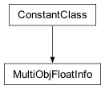Types of floating point information that can be queried for multi-objective optimization.
This class contains the types of solution information of type float that can be retreived from the solution of a sub-problem solved during multi-objective optimization.
This information can be querried for each priority level with method
MultiObjSolnInterface.get_info.- time = 2¶
See CPX_MULTIOBJ_TIME in the C API.
- dettime = 3¶
See CPX_MULTIOBJ_DETTIME in the C API.
- objective = 14¶
See CPX_MULTIOBJ_OBJVAL in the C API.
- best_objective = 15¶
See CPX_MULTIOBJ_BESTOBJVAL in the C API.
- class MultiObjIntInfo[source]¶
Bases:
ConstantClass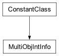Types of integer information that can be queried for multi-objective optimization.
This class contains the types of solution information of type float that can be retreived from the solution of a sub-problem solved during multi-objective optimization.
This information can be querried for each priority level with method
MultiObjSolnInterface.get_info.- error = 0¶
See CPX_MULTIOBJ_ERROR in the C API.
- status = 1¶
See CPX_MULTIOBJ_STATUS in the C API.
- method = 18¶
See CPX_MULTIOBJ_METHOD in the C API.
- priority = 17¶
See CPX_MULTIOBJ_PRIORITY in the C API.
- blend = 20¶
See CPX_MULTIOBJ_BLEND in the C API.
- pfeas = 21¶
See CPX_MULTIOBJ_PFEAS in the C API.
- dfeas = 22¶
See CPX_MULTIOBJ_DFEAS in the C API.
- class MultiObjLongInfo[source]¶
Bases:
ConstantClass
Types of long integer information that can be queried for multi-objective optimization.
This class contains the types of solution information of type float that can be retreived from the solution of a sub-problem solved during multi-objective optimization.
This information can be querried for each priority level with method
MultiObjSolnInterface.get_info.- num_barrier_iterations = 4¶
See CPX_MULTIOBJ_BARITCNT in the C API.
- num_sifting_iterations = 5¶
See CPX_MULTIOBJ_SIFTITCNT in the C API.
- num_sifting_phase1_iterations = 6¶
See CPX_MULTIOBJ_SIFTPHASE1CNT in the C API.
- num_degenerate_iterations = 7¶
See CPX_MULTIOBJ_DEGCNT in the C API.
- num_iterations = 8¶
See CPX_MULTIOBJ_ITCNT in the C API.
- num_phase1_iterations = 9¶
See CPX_MULTIOBJ_PHASE1CNT in the C API.
- num_primal_pushes = 10¶
See CPX_MULTIOBJ_PPUSH in the C API.
- num_primal_exchanges = 11¶
See CPX_MULTIOBJ_PEXCH in the C API.
- num_dual_pushes = 12¶
See CPX_MULTIOBJ_DPUSH in the C API.
- num_dual_exchanges = 13¶
See CPX_MULTIOBJ_DEXCH in the C API.
- num_nodes = 16¶
See CPX_MULTIOBJ_NODECNT in the C API.
- num_nodes_left = 19¶
See CPX_MULTIOBJ_NODELEFTCNT in the C API.
- class MultiObjSolnInterface[source]¶
Bases:
BaseInterface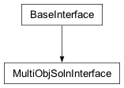Methods for accessing solutions for multi-objective models.
The methods in this interface can be used to query solutions for multi-objective models.
See also
MultiObjInterfacewhere methods for adding, querying, and modifying multiple objectives can be found.- float_info = <cplex._internal._multiobjsoln.MultiObjFloatInfo object>¶
- int_info = <cplex._internal._multiobjsoln.MultiObjIntInfo object>¶
- long_info = <cplex._internal._multiobjsoln.MultiObjLongInfo object>¶
- __init__(parent)[source]¶
Creates a new MIPSolutionInterface.
The multi-objective solution interface is exposed by the top-level
Cplexclass as Cplex.solution.multiobj. This constructor is not meant to be used externally.
- get_objective_value(objidx)[source]¶
Returns the value of an objective function.
objidx is the name or index of the objective to be accessed.
See CPXmultiobjgetobjval in the Callable Library Reference Manual for more detail.
Example usage:
>>> import cplex >>> c = cplex.Cplex() >>> out = c.set_results_stream(None) >>> out = c.set_log_stream(None) >>> c.read("example.mps") >>> c.multiobj.set_num(2) >>> c.multiobj.set_linear( ... 1, ... [(i, o) for i, o in enumerate(c.multiobj.get_linear(0))] ... ) >>> c.solve() >>> c.solution.multiobj.get_objective_value(0) -202.5 >>> c.solution.multiobj.get_objective_value(1) -202.5
- get_objval_by_priority(priority)[source]¶
Returns the value of an objective function by priority.
After multi-objective optimization, returns the blended objective value for the specified priority.
See CPXmultiobjgetobjvalbypriority in the Callable Library Reference Manual for more detail.
Example usage:
>>> import cplex >>> c = cplex.Cplex() >>> out = c.set_results_stream(None) >>> out = c.set_log_stream(None) >>> c.read("example.mps") >>> c.multiobj.set_num(2) >>> c.multiobj.set_linear( ... 1, ... [(i, o) for i, o in enumerate(c.multiobj.get_linear(0))] ... ) >>> c.multiobj.set_priority(0, 1) >>> c.multiobj.set_priority(1, 2) >>> c.solve() >>> c.solution.multiobj.get_objval_by_priority(1) -202.5 >>> c.solution.multiobj.get_objval_by_priority(2) -202.5
- get_num_solves()[source]¶
Returns the number of sub-problems that where successfully solved during the last optimization of a multi-objective problem.
See CPXmultiobjgetnumsolves in the Callable Library Reference Manual for more detail.
Example usage:
>>> import cplex >>> c = cplex.Cplex() >>> out = c.set_results_stream(None) >>> out = c.set_log_stream(None) >>> c.read("example.mps") >>> c.multiobj.set_num(2) >>> c.multiobj.set_linear( ... 1, ... [(i, o) for i, o in enumerate(c.multiobj.get_linear(0))] ... ) >>> c.multiobj.set_priority(0, 1) >>> c.multiobj.set_priority(1, 2) >>> c.solve() >>> c.solution.multiobj.get_num_solves() 2
- get_info(subprob, what)[source]¶
Returns the solution information of a sub-problem of a multi-objective optimization.
subprob is the sub-problem of a multi-objective optimization.
what is an attribute from Cplex.solution.multiobj.float_info (see
MultiObjFloatInfo), Cplex.solution.multiobj.int_info (seeMultiObjIntInfo), or Cplex.solution.multiobj.long_info (seeMultiObjLongInfo).See CPXmultiobjgetdblinfo, CPXmultiobjgetintinfo, CPXmultiobjgetlonginfo, etc. in the Callable Library Reference Manual for more detail.
Example usage:
>>> import cplex >>> c = cplex.Cplex() >>> out = c.set_results_stream(None) >>> out = c.set_log_stream(None) >>> c.read("example.mps") >>> c.multiobj.set_num(2) >>> c.multiobj.set_linear( ... 1, ... [(i, o) for i, o in enumerate(c.multiobj.get_linear(0))] ... ) >>> c.multiobj.set_priority(0, 1) >>> c.multiobj.set_priority(1, 2) >>> c.solve() >>> num = c.solution.multiobj.get_num_solves() >>> for i in range(num): ... priority = c.solution.multiobj.get_info( ... i, ... c.solution.multiobj.int_info.priority ... )
cplex._internal._pwl module¶
Piecewise Linear API
- class PWLConstraintInterface[source]¶
Bases:
BaseInterface
Methods for adding, querying, and modifying PWL constraints.
A PWL constraint describes a piecewise linear relationship between two variables: vary=pwl(varx). The PWL constraint is described by specifying the index of the vary and varx variables involved and by providing the breakpoints of the PWL function (specified by the (breakx[i],breaky[i]) coordinate pairs). Before the first segment of the PWL function there may be a half-line; its slope is specified by preslope. After the last segment of the the PWL function there may be a half-line; its slope is specified by postslope. Two consecutive breakpoints may have the same x coordinate, in such cases there is a discontinuity in the PWL function. Three consecutive breakpoints may not have the same x coordinate.
- __init__(cpx)[source]¶
Creates a new PWLConstraintInterface.
The PWL constraint interface is exposed by the top-level
Cplexclass asCplex.pwl_constraints. This constructor is not meant to be used externally.
- get_num()[source]¶
Returns the number of PWL constraints in the problem.
Example usage:
>>> import cplex >>> c = cplex.Cplex() >>> c.pwl_constraints.get_num() 0 >>> indices = c.variables.add(names=['y', 'x']) >>> idx = c.pwl_constraints.add(vary='y', varx='x', ... preslope=0.5, postslope=2.0, ... breakx=[0.0, 1.0, 2.0], ... breaky=[0.0, 1.0, 4.0], ... name='pwl1') >>> c.pwl_constraints.get_num() 1
- add(vary, varx, preslope, postslope, breakx, breaky, name='')[source]¶
Adds a PWL constraint to the problem.
vary: the index of the ‘y’ variable in the vary=pwl(varx) function.
varx: the index of the ‘x’ variable in the vary=pwl(varx) function.
preslope: before the first segment of the PWL function there is a half-line; its slope is specified by preslope.
postslope: after the last segment of the the PWL function there is a half-line; its slope is specified by postslope.
breakx: A list containing the indices of the ‘x’ variables involved.
breaky: A list containing the indices of the ‘y’ variables involved.
name: the name of the PWL constraint; defaults to the empty string.
Returns the index of the PWL constraint.
Example usage:
>>> import cplex >>> c = cplex.Cplex() >>> indices = c.variables.add(names=['y', 'x']) >>> idx = c.pwl_constraints.add(vary='y', varx='x', ... preslope=0.5, postslope=2.0, ... breakx=[0.0, 1.0, 2.0], ... breaky=[0.0, 1.0, 4.0], ... name='pwl1') >>> c.pwl_constraints.get_num() 1
- delete(*args)[source]¶
Deletes PWL constraints from the problem.
There are four forms by which pwl_constraints.delete may be called.
- pwl_constraints.delete()
deletes all PWL constraints from the problem.
- pwl_constraints.delete(i)
i must be a PWL constraint name or index. Deletes the PWL constraint whose index or name is i.
- pwl_constraints.delete(seq)
seq must be a sequence of PWL constraint names or indices. Deletes the PWL constraints with names or indices contained within s. Equivalent to [pwl_constraints.delete(i) for i in s].
- pwl_constraints.delete(begin, end)
begin and end must be PWL constraint indices or PWL constraint names. Deletes the PWL constraints with indices between begin and end, inclusive of end. Equivalent to pwl_constraints.delete(range(begin, end + 1)). This will give the best performance when deleting batches of PWL constraints.
See CPXdelpwl in the Callable Library Reference Manual for more detail.
Example usage:
>>> import cplex >>> c = cplex.Cplex() >>> indices = c.variables.add(names=['y', 'x']) >>> idx = c.pwl_constraints.add(vary='y', varx='x', ... preslope=0.5, postslope=2.0, ... breakx=[0.0, 1.0, 2.0], ... breaky=[0.0, 1.0, 4.0], ... name='pwl1') >>> c.pwl_constraints.get_num() 1 >>> c.pwl_constraints.delete(idx) >>> c.pwl_constraints.get_num() 0
- get_names(*args)[source]¶
Returns the names of a set of PWL constraints.
May be called by four forms.
- pwl_constraints.get_names()
return the names of all PWL constraints in the problem.
- pwl_constraints.get_names(i)
i must be a PWL constraint name or index. Returns the name of PWL constraint i.
- pwl_constraints.get_names(seq)
seq must be a sequence of PWL constraint names or indices. Returns the names of PWL constraints with names or indices in s. Equivalent to [pwl_constraints.get_names(i) for i in s]
- pwl_constraints.get_names(begin, end)
begin and end must be PWL constraint indices or PWL constraint names. Returns the names of PWL constraints with indices between begin and end, inclusive of end. Equivalent to pwl_constraints.get_names(range(begin, end + 1))
Example usage:
>>> import cplex >>> c = cplex.Cplex() >>> indices = c.variables.add(names=['y', 'x']) >>> idx = c.pwl_constraints.add(vary='y', varx='x', ... preslope=0.5, postslope=2.0, ... breakx=[0.0, 1.0, 2.0], ... breaky=[0.0, 1.0, 4.0], ... name='pwl1') >>> c.pwl_constraints.get_names(idx) 'pwl1'
- get_definitions(*args)[source]¶
Returns the definitions of a set of PWL constraints.
Returns a list of PWL definitions, where each definition is a list containing the following components: vary, varx, preslope, postslope, breakx, breaky (see
add).May be called by four forms.
- pwl_constraints.get_definitions()
return the definitions of all PWL constraints in the problem.
- pwl_constraints.get_definitions(i)
i must be a PWL constraint name or index. Returns the definition of PWL constraint i.
- pwl_constraints.get_definitions(seq)
seq must be a sequence of PWL constraint names or indices. Returns the definitions of PWL constraints with names or indices in s. Equivalent to [pwl_constraints.get_definitions(i) for i in s]
- pwl_constraints.get_definitions(begin, end)
begin and end must be PWL constraint indices or PWL constraint names. Returns the definitions of PWL constraints with indices between begin and end, inclusive of end. Equivalent to pwl_constraints.get_definitions(list(range(begin, end + 1)))
Example usage:
>>> import cplex >>> c = cplex.Cplex() >>> indices = c.variables.add(names=['y', 'x']) >>> idx = c.pwl_constraints.add(vary='y', varx='x', ... preslope=0.5, postslope=2.0, ... breakx=[0.0, 1.0, 2.0], ... breaky=[0.0, 1.0, 4.0], ... name='pwl1') >>> c.pwl_constraints.get_definitions(idx) [0, 1, 0.5, 2.0, [0.0, 1.0, 2.0], [0.0, 1.0, 4.0]]
cplex._internal._anno module¶
Annotation API
- class AnnotationObjectType[source]¶
Bases:
ConstantClass
Constants defining annotation object types.
- objective = 0¶
- variable = 1¶
- row = 2¶
- sos_constraint = 3¶
- indicator_constraint = 4¶
- quadratic_constraint = 5¶
- class AnnotationInterface[source]¶
Bases:
BaseInterface
Methods for adding, querying, and modifying annotations.
- object_type = <cplex._internal._anno.AnnotationObjectType object>¶
- class LongAnnotationInterface[source]¶
Bases:
AnnotationInterface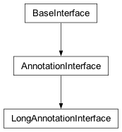Methods for adding, querying, and modifying long annotations.
- benders_annotation = 'cpxBendersPartition'¶
String constant for the name of the Benders annotation.
- benders_mastervalue = 0¶
Default value for the Benders master partition.
- __init__(cpx)[source]¶
Creates a new LongAnnotationInterface.
The long annotation interface is exposed by the top-level
Cplexclass asCplex.long_annotations. This constructor is not meant to be used externally.
- get_num()[source]¶
Returns the number of long annotations in the problem.
Example usage:
>>> import cplex >>> c = cplex.Cplex() >>> c.long_annotations.get_num() 0 >>> idx = c.long_annotations.add('ann1', 0) >>> c.long_annotations.get_num() 1
- add(name, defval)[source]¶
Adds an annotation to the problem.
name: the name of the annotation.
defval: the default value for annotation objects.
Returns the index of the added annotation.
Example usage:
>>> import cplex >>> c = cplex.Cplex() >>> idx = c.long_annotations.add(name='ann1', defval=0) >>> c.long_annotations.get_num() 1
- delete(*args)[source]¶
Deletes long annotations from the problem.
There are four forms by which long_annotations.delete may be called.
- long_annotations.delete()
deletes all long annotations from the problem.
- long_annotations.delete(i)
i must be an annotation name or index. Deletes the long annotation whose index or name is i.
- long_annotations.delete(seq)
seq must be a sequence of annotation names or indices. Deletes the long annotations with names or indices contained within s. Equivalent to [long_annotations.delete(i) for i in s].
- long_annotations.delete(begin, end)
begin and end must be annotation indices or annotation names. Deletes the long annotations with indices between begin and end, inclusive of end. Equivalent to long_annotations.delete(range(begin, end + 1)). This will give the best performance when deleting batches of long annotations.
See CPXdellongannotations in the Callable Library Reference Manual for more detail.
Example usage:
>>> import cplex >>> c = cplex.Cplex() >>> idx = c.long_annotations.add('ann1', 0) >>> c.long_annotations.get_num() 1 >>> c.long_annotations.delete(idx) >>> c.long_annotations.get_num() 0
- get_names(*args)[source]¶
Returns the names of a set of long annotations.
May be called by four forms.
- long_annotations.get_names()
return the names of all long annotations in the problem.
- long_annotations.get_names(i)
i must be an annotation name or index. Returns the name of long annotation i.
- long_annotations.get_names(seq)
seq must be a sequence of annotation names or indices. Returns the names of long annotations with names or indices in s. Equivalent to [long_annotations.get_names(i) for i in s]
- long_annotations.get_names(begin, end)
begin and end must be annotation indices or annotation names. Returns the names of long annotations with indices between begin and end, inclusive of end. Equivalent to long_annotations.get_names(range(begin, end + 1))
Example usage:
>>> import cplex >>> c = cplex.Cplex() >>> [c.long_annotations.add('ann{0}'.format(i), i) ... for i in range(1, 6)] [0, 1, 2, 3, 4] >>> c.long_annotations.get_names() ['ann1', 'ann2', 'ann3', 'ann4', 'ann5'] >>> c.long_annotations.get_names(0) 'ann1' >>> c.long_annotations.get_names([0, 2, 4]) ['ann1', 'ann3', 'ann5'] >>> c.long_annotations.get_names(1, 3) ['ann2', 'ann3', 'ann4']
- get_default_values(*args)[source]¶
Returns the default value of a set of long annotations.
May be called by four forms.
- long_annotations.get_default_values()
return the default values of all long annotations in the problem.
- long_annotations.get_default_values(i)
i must be an annotation name or index. Returns the default value of long annotation i.
- long_annotations.get_default_values(seq)
seq must be a sequence of annotation names or indices. Returns the default values of long annotations with names or indices in s. Equivalent to [long_annotations.get_default_values(i) for i in s]
- long_annotations.get_default_values(begin, end)
begin and end must be annotation indices or annotation names. Returns the default values of long annotations with indices between begin and end, inclusive of end. Equivalent to long_annotations.get_default_values(list(range(begin, end + 1)))
Example usage:
>>> import cplex >>> c = cplex.Cplex() >>> idx1 = c.long_annotations.add(name='ann1', defval=0) >>> idx2 = c.long_annotations.add(name='ann2', defval=1) >>> c.long_annotations.get_default_values() [0, 1]
- set_values(idx, objtype, *args)[source]¶
Sets the values for objects in the specified long annotation.
idx: the long annotation index or name.
objtype: the annotation object type.
Can be called by two forms:
- long_annotations.set_values(idx, objtype, i, val)
i must be a name or index. Changes the long annotation value of the object identified by i.
- long_annotations.set_values(idx, objtype, seq)
seq is a sequence of pairs (i, val) as described above. Changes the long annotation values for the specified objects.
Example usage:
>>> import cplex >>> c = cplex.Cplex() >>> idx = c.long_annotations.add('ann1', 0) >>> objtype = c.long_annotations.object_type.objective >>> c.long_annotations.set_values(idx, objtype, 0, 1) >>> c.long_annotations.get_values(idx, objtype, 0) 1 >>> indices = c.variables.add(names=['v1', 'v2', 'v3']) >>> objtype = c.long_annotations.object_type.variable >>> c.long_annotations.set_values(idx, objtype, ... [(i, 1) for i in indices]) >>> c.long_annotations.get_values(idx, objtype) [1, 1, 1]
- get_values(idx, objtype, *args)[source]¶
Returns the long annotation values for the specified objects.
idx: the long annotation index or name.
objtype: the annotation object type.
Can be called by four forms:
- long_annotations.get_values(idx, objtype)
return the values of all objects for a given annotation.
- long_annotations.get_values(idx, objtype, i)
i must be a name or index. Returns the long annotation value of the object identified by i.
- long_annotations.get_values(idx, objtype, seq)
seq is a sequence of object names or indices. Returns the long annotation values for the specified objects. Equivalent to [long_annotations.get_values(idx, objtype, i) for i in seq]
- long_annotations.get_values(idx, objtype, begin, end)
begin and end must be object indices or object names. Returns the long annotation values of objects with indices between begin and end, inclusive of end. Equivalent to long_annotations.get_values(range(begin, end + 1))
Example usage:
>>> import cplex >>> c = cplex.Cplex() >>> idx = c.long_annotations.add('ann1', 0) >>> objtype = c.long_annotations.object_type.objective >>> c.long_annotations.set_values(idx, objtype, 0, 1) >>> c.long_annotations.get_values(idx, objtype, 0) 1 >>> indices = c.variables.add(names=['v1', 'v2', 'v3']) >>> objtype = c.long_annotations.object_type.variable >>> c.long_annotations.set_values(idx, objtype, ... [(i, 1) for i in indices]) >>> c.long_annotations.get_values(idx, objtype, list(indices)) [1, 1, 1]
- class DoubleAnnotationInterface[source]¶
Bases:
AnnotationInterface
Methods for adding, querying, and modifying double annotations.
- __init__(cpx)[source]¶
Creates a new DoubleAnnotationInterface.
The double annotation interface is exposed by the top-level
Cplexclass asCplex.double_annotations. This constructor is not meant to be used externally.
- get_num()[source]¶
Returns the number of double annotations in the problem.
Example usage:
>>> import cplex >>> c = cplex.Cplex() >>> c.double_annotations.get_num() 0 >>> idx = c.double_annotations.add('ann1', 0.0) >>> c.double_annotations.get_num() 1
- add(name, defval)[source]¶
Adds an annotation to the problem.
name: the name of the annotation.
defval: the default value for annotation objects.
Returns the index of the added annotation.
Example usage:
>>> import cplex >>> c = cplex.Cplex() >>> idx = c.double_annotations.add(name='ann1', defval=0.0) >>> c.double_annotations.get_num() 1
- delete(*args)[source]¶
Deletes double annotations from the problem.
There are four forms by which double_annotations.delete may be called.
- double_annotations.delete()
deletes all double annotations from the problem.
- double_annotations.delete(i)
i must be an annotation name or index. Deletes the double annotation whose index or name is i.
- double_annotations.delete(seq)
seq must be a sequence of annotation names or indices. Deletes the double annotations with names or indices contained within s. Equivalent to [double_annotations.delete(i) for i in s].
- double_annotations.delete(begin, end)
begin and end must be annotation indices or annotation names. Deletes the double annotations with indices between begin and end, inclusive of end. Equivalent to double_annotations.delete(range(begin, end + 1)). This will give the best performance when deleting batches of double annotations.
See CPXdeldblannotations in the Callable Library Reference Manual for more detail.
Example usage:
>>> import cplex >>> c = cplex.Cplex() >>> idx = c.double_annotations.add('ann1', 0.0) >>> c.double_annotations.get_num() 1 >>> c.double_annotations.delete(idx) >>> c.double_annotations.get_num() 0
- get_names(*args)[source]¶
Returns the names of a set of double annotations.
May be called by four forms.
- double_annotations.get_names()
return the names of all double annotations in the problem.
- double_annotations.get_names(i)
i must be an annotation name or index. Returns the name of double annotation i.
- double_annotations.get_names(seq)
seq must be a sequence of annotation names or indices. Returns the names of double annotations with names or indices in s. Equivalent to [double_annotations.get_names(i) for i in s]
- double_annotations.get_names(begin, end)
begin and end must be annotation indices or annotation names. Returns the names of double annotations with indices between begin and end, inclusive of end. Equivalent to double_annotations.get_names(range(begin, end + 1))
Example usage:
>>> import cplex >>> c = cplex.Cplex() >>> [c.double_annotations.add('ann{0}'.format(i), i) ... for i in range(1, 6)] [0, 1, 2, 3, 4] >>> c.double_annotations.get_names() ['ann1', 'ann2', 'ann3', 'ann4', 'ann5'] >>> c.double_annotations.get_names(0) 'ann1' >>> c.double_annotations.get_names([0, 2, 4]) ['ann1', 'ann3', 'ann5'] >>> c.double_annotations.get_names(1, 3) ['ann2', 'ann3', 'ann4']
- get_default_values(*args)[source]¶
Returns the default value of a set of double annotations.
May be called by four forms.
- double_annotations.get_default_values()
return the default values of all double annotations in the problem.
- double_annotations.get_default_values(i)
i must be an annotation name or index. Returns the default value of double annotation i.
- double_annotations.get_default_values(seq)
seq must be a sequence of annotation names or indices. Returns the default values of double annotations with names or indices in s. Equivalent to [double_annotations.get_default_values(i) for i in s]
- double_annotations.get_default_values(begin, end)
begin and end must be annotation indices or annotation names. Returns the default values of double annotations with indices between begin and end, inclusive of end. Equivalent to double_annotations.get_default_values(list(range(begin, end + 1)))
Example usage:
>>> import cplex >>> c = cplex.Cplex() >>> idx1 = c.double_annotations.add(name='ann1', defval=0.0) >>> idx2 = c.double_annotations.add(name='ann2', defval=1.0) >>> c.double_annotations.get_default_values() [0.0, 1.0]
- set_values(idx, objtype, *args)[source]¶
Sets the values for objects in the specified double annotation.
idx: the double annotation index or name.
objtype: the annotation object type.
Can be called by two forms:
- double_annotations.set_values(idx, objtype, i, val)
i must be a name or index. Changes the double annotation value of the object identified by i.
- double_annotations.set_values(idx, objtype, seq)
seq is a sequence of pairs (i, val) as described above. Changes the double annotation values for the specified objects.
Example usage:
>>> import cplex >>> c = cplex.Cplex() >>> idx = c.double_annotations.add('ann1', 0.0) >>> objtype = c.double_annotations.object_type.objective >>> c.double_annotations.set_values(idx, objtype, 0, 1.0) >>> c.double_annotations.get_values(idx, objtype, 0) 1.0 >>> indices = c.variables.add(names=['v1', 'v2', 'v3']) >>> objtype = c.double_annotations.object_type.variable >>> c.double_annotations.set_values(idx, objtype, ... [(i, 1.0) for i in indices]) >>> c.double_annotations.get_values(idx, objtype) [1.0, 1.0, 1.0]
- get_values(idx, objtype, *args)[source]¶
Returns the double annotation values for the specified objects.
idx: the double annotation index or name.
objtype: the annotation object type.
Can be called by four forms:
- double_annotations.get_values(idx, objtype)
return the values of all objects for a given annotation.
- double_annotations.get_values(idx, objtype, i)
i must be a name or index. Returns the double annotation value of the object identified by i.
- double_annotations.get_values(idx, objtype, seq)
seq is a sequence of object names or indices. Returns the double annotation values for the specified objects. Equivalent to [double_annotations.get_values(idx, objtype, i) for i in seq]
- double_annotations.get_values(idx, objtype, begin, end)
begin and end must be object indices or object names. Returns the double annotation values of objects with indices between begin and end, inclusive of end. Equivalent to double_annotations.get_values(range(begin, end + 1))
Example usage:
>>> import cplex >>> c = cplex.Cplex() >>> idx = c.double_annotations.add('ann1', 0.0) >>> objtype = c.double_annotations.object_type.objective >>> c.double_annotations.set_values(idx, objtype, 0, 1.0) >>> c.double_annotations.get_values(idx, objtype, 0) 1.0 >>> indices = c.variables.add(names=['v1', 'v2', 'v3']) >>> objtype = c.double_annotations.object_type.variable >>> c.double_annotations.set_values(idx, objtype, ... [(i, 1.0) for i in indices]) >>> c.double_annotations.get_values(idx, objtype, list(indices)) [1.0, 1.0, 1.0]
cplex._internal._constants module¶
Constants from the CPLEX C Callable Library
cplex._internal._constantsenum module¶
Enum constants from the CPLEX C Callable Library
cplex._internal._aux_functions module¶
Internal auxiliary functions.

- deprecated_class(name, version, stacklevel=3)[source]¶
Emits a warning for a deprecated class.
This should be called in __init__.
name - the name of the class (e.g., PresolveCallback).
- version - the version at which the class was deprecated (e.g.,
“V12.7.1”).
stacklevel - indicates how many levels up the stack is the caller.
- validate_arg_lengths(arg_list, allow_empty=True, extra_msg='')[source]¶
Checks for equivalent argument lengths.
If allow_empty is True (the default), then empty arguments are not checked against the max length of non-empty arguments. Some functions allow NULL arguments in the Callable Library, for example.
- make_group(conv, max_num, c_type, *args)[source]¶
Returns a _group object
input: conv - a function that will convert names to indices max_num - number of existing constraints of a given type c_type - constraint type args - arbitrarily many arguments (see description below)
If args is empty, every constraint/bound is assigned weight 1.0.
If args is of length one or more, every constraint/bound is assigned a weight equal to the float passed in as the first item.
If args contains additional items, they determine a subset of constraints/bounds to be included. If one index or name is specified, it is the only one that will be included. If two indices or names are specified, all constraints between the first and the second, inclusive, will be included. If a sequence of names or indices is passed in, all of their constraints/bounds will be included.
See example usage in _subinterfaces.ConflictInterface.
- listify(x)[source]¶
Returns [x] if x isn’t already a list.
This is used to wrap arguments for functions that require lists.
- convert_sequence(seq, getindexfunc, cache=None)[source]¶
Converts a sequence of names to indices as necessary.
If you are calling
convert(see below) in a tight loop, but you know that you are always working with a sequence, then it can be more efficient to call this method directly (there is no overhead checking if it is a sequence).
- convert(name, getindexfunc, cache=None)[source]¶
Converts from names to indices as necessary.
If name is a string, an index is returned.
If name is a sequence, a sequence of indices is returned.
If name is neither (i.e., it’s an integer), then that is returned as is.
getindexfunc is a function that takes a name and returns an index.
The optional cache argument allows for further localized caching (e.g., within a loop).
cplex._internal._parameter_classes module¶
Parameters for the CPLEX Python API.
This module defines classes for parameters, groups of parameters, and parameter constants used in the CPLEX Python API. For more detail, see also the corresponding commands of the Interactive Optimizer documented in the CPLEX Parameters Reference Manual.
- class NumParameter[source]¶
Bases:
Parameter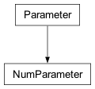Class for integer and float parameters.
- Undocumented:
__init__

- class ParameterGroup[source]¶
Bases:
object
Class containing a group of Cplex parameters.
- Undocumented:
__init__
- get_changed()[source]¶
Returns a list of the changed parameters in the group.
Returns a list of (parameter, value) pairs. Each parameter is an instance of the Parameter class, and thus the parameter value can be changed via its set method, or this object can be passed to the tuning functions.
Example usage:
>>> import cplex >>> c = cplex.Cplex() >>> c.parameters.read.datacheck.set( ... c.parameters.read.datacheck.values.assist) >>> for parameter, value in c.parameters.get_changed(): ... pass # do something
- get_all()[source]¶
Returns a list of all the parameters in the group.
Returns a list of (parameter, value) pairs. Each parameter is an instance of the Parameter class, and thus the parameter value can be changed via its set method, or this object can be passed to the tuning functions.
Example usage:
>>> import cplex >>> c = cplex.Cplex() >>> for parameter, value in c.parameters.get_all(): ... pass # do something
- class TuningConstants[source]¶
Bases:
ConstantClass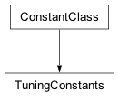Status codes returned by tuning methods.
For an explanation of tuning, see that topic in the CPLEX User’s Manual.
- completed = 0¶
- abort = 1¶
- time_limit = 2¶
- dettime_limit = 3¶
- class RootParameterGroup[source]¶
Bases:
ParameterGroup
Class containing all the Cplex parameters.
- Undocumented:
__init__, _set, _get, _get_info
- tuning_status = <cplex._internal._parameter_classes.TuningConstants object>¶
- tune_problem_set(filenames, filetypes=None, fixed_parameters_and_values=None)[source]¶
Tunes parameters for a set of problems.
filenames must be a sequence of strings specifying a set of problems to tune.
If filetypes is given, it must be a sequence of the same length as filenames also consisting of strings that specify the types of the corresponding files.
If fixed_parameters_and_values is given, it may be either a ParameterSet instance or a sequence of sequences of length 2 containing instances of the Parameter class that are to be fixed during the tuning process and the values at which they are to be fixed.
tune_problem_set returns the status of the tuning procedure, which is an attribute of parameters.tuning_status.
>>> import cplex >>> c = cplex.Cplex() >>> out = c.set_results_stream(None) >>> out = c.set_log_stream(None) >>> ps = c.create_parameter_set() >>> ps.add(c.parameters.lpmethod, ... c.parameters.lpmethod.values.auto) >>> status = c.parameters.tune_problem_set( ... filenames=["lpex.mps", "example.mps"], ... fixed_parameters_and_values=ps) >>> c.parameters.tuning_status[status] 'completed' >>> status = c.parameters.tune_problem_set( ... filenames=["lpex.mps", "example.mps"], ... fixed_parameters_and_values=[ ... (c.parameters.lpmethod, ... c.parameters.lpmethod.values.auto)]) >>> c.parameters.tuning_status[status] 'completed' >>> status = c.parameters.tune_problem_set( ... filenames=["lpex.mps", "example.mps"]) >>> c.parameters.tuning_status[status] 'completed'
- tune_problem(fixed_parameters_and_values=None)[source]¶
Tunes parameters for a Cplex problem.
If fixed_parameters_and_values is given, it may be either a ParameterSet instance or a sequence of sequences of length 2 containing instances of the Parameter class that are to be fixed during the tuning process and the values at which they are to be fixed.
tune_problem returns the status of the tuning procedure, which is an attribute of parameters.tuning_status.
>>> import cplex >>> c = cplex.Cplex() >>> out = c.set_results_stream(None) >>> ps = c.create_parameter_set() >>> ps.add(c.parameters.lpmethod, ... c.parameters.lpmethod.values.auto) >>> status = c.parameters.tune_problem(ps) >>> c.parameters.tuning_status[status] 'completed' >>> status = c.parameters.tune_problem([ ... (c.parameters.lpmethod, ... c.parameters.lpmethod.values.auto)]) >>> c.parameters.tuning_status[status] 'completed' >>> status = c.parameters.tune_problem() >>> c.parameters.tuning_status[status] 'completed'
- class off_on_constants[source]¶
Bases:
ConstantClass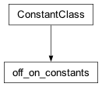- off = 0¶
- on = 1¶

- class writelevel_constants[source]¶
Bases:
ConstantClass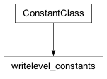- auto = 0¶
- all_variables = 1¶
- discrete_variables = 2¶
- nonzero_variables = 3¶
- nonzero_discrete_variables = 4¶
- class scale_constants[source]¶
Bases:
ConstantClass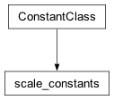- none = -1¶
- equilibration = 0¶
- aggressive = 1¶
- class mip_emph_constants[source]¶
Bases:
ConstantClass
- balanced = 0¶
- optimality = 2¶
- feasibility = 1¶
- best_bound = 3¶
- heuristic = 5¶

- class subalg_constants[source]¶
Bases:
ConstantClass
- auto = 0¶
- primal = 1¶
- dual = 2¶
- network = 3¶
- barrier = 4¶
- sifting = 5¶
- class nodesel_constants[source]¶
Bases:
ConstantClass
- depth_first = 0¶
- best_bound = 1¶
- best_estimate = 2¶
- best_estimate_alt = 3¶
- class alg_constants[source]¶
Bases:
ConstantClass
- auto = 0¶
- primal = 1¶
- dual = 2¶
- barrier = 4¶
- sifting = 5¶
- network = 3¶
- concurrent = 6¶
- class varsel_constants[source]¶
Bases:
ConstantClass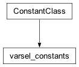- min_infeasibility = -1¶
- default = 0¶
- max_infeasibility = 1¶
- pseudo_costs = 2¶
- strong_branching = 3¶
- pseudo_reduced_costs = 4¶
- class dive_constants[source]¶
Bases:
ConstantClass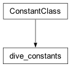- auto = 0¶
- traditional = 1¶
- probing = 2¶
- guided = 3¶
- class file_constants[source]¶
Bases:
ConstantClass
- auto = 0¶
- memory = 1¶
- disk = 2¶
- disk_compressed = 3¶
- class fpheur_constants[source]¶
Bases:
ConstantClass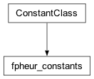- none = -1¶
- auto = 0¶
- feas = 1¶
- obj_and_feas = 2¶
- class cardls_constants[source]¶
Bases:
ConstantClass
- disabled = -1¶
- auto = 0¶
- at_root = 1¶
- at_all_nodes = 2¶
- class presolve_constants[source]¶
Bases:
ConstantClass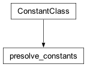- none = -1¶
- auto = 0¶
- force = 1¶
- probe = 2¶
- class v_agg_constants[source]¶
Bases:
ConstantClass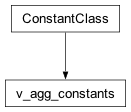- none = -1¶
- auto = 0¶
- moderate = 1¶
- aggressive = 2¶
- very_aggressive = 3¶

- class agg_constants[source]¶
Bases:
ConstantClass
- none = -1¶
- auto = 0¶
- moderate = 1¶
- aggressive = 2¶
- class replace_constants[source]¶
Bases:
ConstantClass
- firstin_firstout = 0¶
- worst_objective = 1¶
- diversity = 2¶
- class ordertype_constants[source]¶
Bases:
ConstantClass
- default = 0¶
- cost = 1¶
- bounds = 2¶
- scaled_cost = 3¶
- class mip_display_constants[source]¶
Bases:
ConstantClass
- none = 0¶
- integer_feasible = 1¶
- mip_interval_nodes = 2¶
- node_cuts = 3¶
- LP_root = 4¶
- LP_all = 5¶
- class conflict_algorithm_constants[source]¶
Bases:
ConstantClass
- auto = 0¶
- fast = 1¶
- propagate = 2¶
- presolve = 3¶
- iis = 4¶
- limitedsolve = 5¶
- solve = 6¶
- class dual_pricing_constants[source]¶
Bases:
ConstantClass
- auto = 0¶
- full = 1¶
- steep = 2¶
- full_steep = 3¶
- steep_Q_start = 4¶
- devex = 5¶
- class primal_pricing_constants[source]¶
Bases:
ConstantClass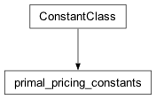- partial = -1¶
- auto = 0¶
- devex = 1¶
- steep = 2¶
- steep_Q_start = 3¶
- full = 4¶

- class prered_constants[source]¶
Bases:
ConstantClass
- none = 0¶
- primal = 1¶
- dual = 2¶
- primal_and_dual = 3¶
- class prereform_constants[source]¶
Bases:
ConstantClass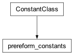- none = 0¶
- interfere_crush = 1¶
- interfere_uncrush = 2¶
- all = 3¶


- class dependency_constants[source]¶
Bases:
ConstantClass
- auto = -1¶
- off = 0¶
- begin = 1¶
- end = 2¶
- begin_and_end = 3¶

- class linear_constants[source]¶
Bases:
ConstantClass
- only_linear = 0¶
- full = 1¶
- class repeatpre_constants[source]¶
Bases:
ConstantClass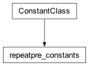- auto = -1¶
- off = 0¶
- without_cuts = 1¶
- with_cuts = 2¶
- new_root_cuts = 3¶
- class sym_constants[source]¶
Bases:
ConstantClass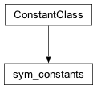- auto = -1¶
- off = 0¶
- mild = 1¶
- moderate = 2¶
- aggressive = 3¶
- more_aggressive = 4¶
- very_aggressive = 5¶

- class sift_alg_constants[source]¶
Bases:
ConstantClass
- auto = 0¶
- primal = 1¶
- dual = 2¶
- barrier = 4¶
- network = 3¶
- class feasopt_mode_constants[source]¶
Bases:
ConstantClass
- min_sum = 0¶
- opt_sum = 1¶
- min_inf = 2¶
- opt_inf = 3¶
- min_quad = 4¶
- opt_quad = 5¶
- class measure_constants[source]¶
Bases:
ConstantClass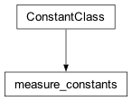- average = 1¶
- minmax = 2¶
- class tune_display_constants[source]¶
Bases:
ConstantClass
- none = 0¶
- minimal = 1¶
- settings = 2¶
- settings_and_logs = 3¶
- class bar_order_constants[source]¶
Bases:
ConstantClass
- approx_min_degree = 1¶
- approx_min_fill = 2¶
- nested_dissection = 3¶
- class crossover_constants[source]¶
Bases:
ConstantClass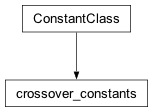- none = -1¶
- auto = 0¶
- primal = 1¶
- dual = 2¶
- class bar_alg_constants[source]¶
Bases:
ConstantClass
- default = 0¶
- infeas_estimate = 1¶
- infeas_constant = 2¶
- standard = 3¶
- class bar_start_alg_constants[source]¶
Bases:
ConstantClass- zero_dual = 1¶
- estimated_dual = 2¶
- average_primal_zero_dual = 3¶
- average_primal_estimated_dual = 4¶

- class qp_alg_constants[source]¶
Bases:
ConstantClass
- auto = 0¶
- primal = 1¶
- dual = 2¶
- network = 3¶
- barrier = 4¶

- class optimalitytarget_constants[source]¶
Bases:
ConstantClass
- auto = 0¶
- optimal_convex = 1¶
- first_order = 2¶
- optimal_global = 3¶

- class benders_strategy_constants[source]¶
Bases:
ConstantClass
- none = -1¶
- auto = 0¶
- user = 1¶
- workers = 2¶
- full = 3¶
- class network_display_constants[source]¶
Bases:
ConstantClass
- none = 0¶
- true_objective_values = 1¶
- penalized_objective_values = 2¶

cplex._internal._solutionstrategyenum module¶
A module for the SolutionStrategy class.
- class SolutionStrategy[source]¶
Bases:
ConstantClassThe different types of solutions that can submitted to
cplex.callbacks.Context.post_heuristic_solution().For further details about these values, see the reference manual of the CPLEX Callable Library (C API) particularly, the enumeration CPXCALLBACKSOLUTIONSTRATEGY.
- no_check = -1¶
See CPXCALLBACKSOLUTION_NOCHECK in the C API.
- check_feasible = 0¶
See CPXCALLBACKSOLUTION_CHECKFEAS in the C API.
- propagate = 1¶
See CPXCALLBACKSOLUTION_PROPAGATE in the C API.
- solve = 2¶
See CPXCALLBACKSOLUTION_SOLVE in the C API.